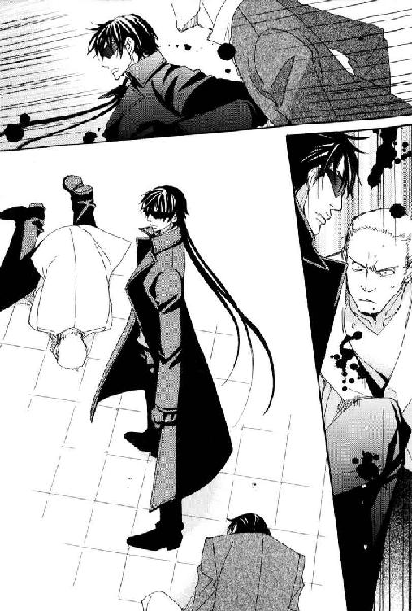

| 三千世界の鴉を殺し(16) (ウィングス・ノヴェル) | |
| 津守時生 | |

１
カーマイン市街、通称パープル・タウンと呼ばれる官公庁の建物や企業の本社ビルなどが集められた区域。
都市計画に基づいて整然とビル群が建ち並ぶビジネス街ではあるが、多くの建物はこの地区に勤める人々のために、一階から三階、もしくは最上階などに飲食店やドラッグストア・チェーンを入居させている。
本社ビルの中に大規模な会員制のフィットネスクラブを併設している企業もあり、仕事の終わったあとすぐには帰宅せず、同僚や友人たちとパープル・タウンで長い時間を過ごすものは少なくなかった。
ドーン通り三番街にあるサルタンという店は、待ち合わせなどによく使われる喫茶店で人の出入りも多く、ヴァンサン・ロメールは短時間話すだけで二度と会うことのない人物との密会に最適の場所だと考えていた。
祖父からの贈り物である腕時計に視線を落とす。
約束の時間まで十分ある。
到着が早すぎた彼の前にあるコーヒーのカップはすでに空だった。頻繁に周囲の客が入れ替わる店内で、男の客が一人手持ちぶさたでいるのは、どうも落ち着かない。
上着の隠しから携帯端末を取り出して、仕事の予定の確認を始める。
チェックを始めて程なく、奥の席に座るヴァンサンは異様な気配に気づいて顔を上げた。
混み合った店内のざわめきが急速に静まっていく。
それは、待ち合わせの相手を探すそぶりで、ゆっくりと入ってくる一人の男が生み出す沈黙だった。
前を開けて着た黒革のロングコートの下は、灰色がかった薄緑色のワイシャツ。細身の黒いスラックスに黒革の靴。
ビジネスマンの多い店内では多少ラフな印象を与えるが、場違いというほど変わった格好ではない。この店の近くにある広告会社に勤めるデザイナーたちのほうが、よほど派手で奇抜な服装をしていた。
背が高い。それ自体は単なる特徴であって、声を失うほどの驚きには値しない。
初めてモニター画面で見た時、ヴァンサンも絶句した美貌のせい――と言いたいところだったが、十一頭身はありそうな長身の一番上についている顔を仰ぎ見たところで、座っている連中にはどんな顔立ちか判然としないだろう。
人々が言葉も忘れて彼を目で追うのは、彼が漂わせる独特な雰囲気のせいだった。
通信機器から伝わらなかったそれは、いわゆる霊気というもので、人や職種によって威厳や華と呼ばれるものになる。
経済界屈指の大物である祖父の後継者と目され、さまざまな人物が集まるパーティに祖父のお供として顔を出す彼でも、初めて見るタイプだった。
わずかな畏怖を感じながらも、否応なく惹きつけられる。華やかというわけではなく、しかし圧倒される存在感。
これに似た感覚をどこかで体験しているのに思い出せない。
思い出せないもどかしさに気を取られているうちに、彼に気づいた先方が真っ直ぐ歩み寄ってきた。
テーブルの近くで立ち止まり、待ち合わせた相手に言う。
「待たせたようだが、まだ約束の時間前だから、わびる必要はないな？」
低い声は耳を心地よくくすぐり、官能的ですらあった。
黒いスクリーン・グラスで目元を完全に隠していても、類いまれな美貌の持ち主であることは疑いようもない。
我知らず見惚れていた自分に気づいたヴァンサンは不機嫌になり、横柄な仕草で前に座るように促す。
椅子を引き腰を下ろした相手に向かい、小声で叱責した。
「目立つなと言っただろうが......！」
「目立たない服装で来いとは言われたが？」
テーブル上にメニューを呼び出しながら、軍人は静かに反駁する。
「場所をわきまえろと言ったんだ。そのくらいのことも、いちいち言われなければわからないのか！」
「私服など必要ないから、ほとんど持っていない。それにビジネス・スーツを着たとしても俺が目立つことに変わりはない。――本人を目の前にして、そんなこともわからねーのかよ、ぼっちゃん」
ブレンド・コーヒーの部分を革手袋の指で押した男は、口調を一変させて冷笑した。
ヴァンサンは怒りを抑え、ことさら低い声で恫喝する。
「......貴様。誰に向かってものを言っている」
「ここであんたの経歴を全部並べ立てろと？ それとも祖父さんの七光りのことを言っているのか？ 生憎だが、銀河連邦宇宙軍にそんなものは通用しねーんだよ。背負ってるモンを比べりゃ遙かに俺のほうがでかいんだ。肩書き抜きの自分が他人を見下したクチがきけるかどうか、よく胸に手を当てて考えるんだな」
痛いところをつかれたヴァンサンは、声がうわずらないよう意識的にゆっくりと反論した。
「巨大組織の末端の歯車風情が偉そうによく言う。私の持っている情報を欲しくてきたんだろうに、情報提供者を侮辱して何か利益があるのか？」
「もともと大した話は期待してねぇよ。自分に累が及ぶのをひたすら恐れているチキンな野郎から、保身以外のどんな話が聞けるというんだ？」
言動が軍人らしからぬ美貌の男は、形の良い唇の端を曲げて痛烈な皮肉を言い放つ。
ヴァンサン・ロメールは拳を握って耐えた。こんな場所で感情的になり、醜態をさらすわけにはいかない。
念のために勤務先からかなり離れたこの店を待ち合わせ場所に指定したが、誰が誰とどうつながっているのかわからないのが世の中だった。おのれの評価を下げる真似は慎まなければならない。
それに自己保身しか考えない臆病者という言葉は、まさにその通りだと思う。そうして子供の頃から保身に努めてきたからこそ、祖父からの絶対的な信頼を得られたのだ。
慎重で優秀、かつ絶対的なカリスマという自分を作り上げたのは、ヴァンサン自身の努力だった。誰に恥じることもない。
『お父さまのような野心のない男になってはなりませんよ』
書斎に引きこもり研究に没頭する夫に対し、母は失望を隠さなかった。息子の反面教師にすることが、愛のない結婚を強いられた自分のせめてもの鬱憤晴らしだったのかもしれない。
政界進出は、一代で財をなした祖父の長年の夢だった。自分が築いてきた政界・官界のネットワークと一族の財力を生かし、いずれは惑星の頂点に立つ人間を一族から輩出する。
祖父の夢は一族の総意であり、祖父の期待をになうのがヴァンサンだった。
左遷されてきた一兵士ごときに軽んじられる覚えはない。
ウェイトレスが男の注文したコーヒーを運んできた。微笑んで礼を言う男に、ごゆっくりどうぞと愛想良く答えて去る。
宇宙軍士官は両手にはめた革手袋を正しい方法で丁寧にはずす。無駄のない動きだが、軍人らしからぬ優雅さがある。
一度パソコンを使った通信で、軍服姿のこの男を見ていなければ、今目の前に座っている男が本物の軍人だとは信じられなかっただろう。
送られてきたメールに対し、面倒ごとは早く処理してしまおうと焦ったのは仕方がないにせよ、待ち合わせまでしたこの男の経歴を調べてこなかったのは失敗だった。明らかに一般的な軍人の概念から外れる相手と承知しながら、普通に対処しては扱いを間違う。
現に今、自分は相手のペースに乗せられている。
「不毛な問答は時間の無駄だ。聞きたいことを質問したまえ」
「なるほど。祖父の七光りにふんぞり返る田舎財閥の御曹司かと思ったら、そう頭は悪くないようだな」
「何......」
「お互い不本意かつ不愉快な会見だ。さっさと終わらせて、二度と会わずに済むように願おうぜ。――ニコラルーン・マーベリック少佐に渡したものは？」
「同僚から預かったディスクだ。中は見ていない。同僚は翌日、マンションのエレベーターの落下事故で死んだ。昇降装置の圧縮空気の濃度を調節する機械の故障だそうだ。......少なくとも都市警察は事故として処理したし、同僚も何か変わったようすはなかった」
ヴァンサンは感情を交えず、事務的に語る。
関係を聞かれたら、親しくしていたわけでもなく、こんなことになって迷惑していると答えるつもりだったが、相手はヴァンサンの交友関係に興味がないらしい。
「どうしてディスクを預かったんだ？」
「机の鍵が壊れたから、業者が修理に来るまで仕事の資料を預かってくれと言われたんだ。彼が事故死して、仕事を引き継いだものから請求があれば渡そうと思っていたんだが、何も言われなかったので、そのままいつしか忘れていた」
「同僚の担当していた仕事は？」
「カーマイン市の拡張事業全般だ」
「どうして忘れていたディスクの存在を思い出して、自宅に持ち帰り、宇宙軍の将校に渡そうとした？」
「しばらくして彼の......死んだ同僚の部下が家庭の事情で自殺して、その葬儀の帰りに上司が長いエスカレーターから転落死した。関係者が立て続けに死んだことで、ディスクのことを思い出したんだ。......部下の机を整理しようとしたら鍵が壊れていた。それだけなら偶然で済んだが、上司の机も――」
言いながら背筋に悪寒が走る。
各自の机の鍵は指紋認証と特殊構造の鍵を組み合わせてあり、本人以外の人間が開けようとしたら壊すしかない。ただ繊細すぎるのか、扱いが乱暴だと壊れてしまうことがあるので、同僚の机の鍵が壊れたと聞いた時は、何も不審に思わなかった。
格別親しくなかったからこそ、自分はディスクを預けられたのではないか――そんな疑惑がふと心をよぎり、ヴァンサンは落ち着かなくなった。
いずれ探し当てられたら、自分も――。
ディスクを自宅に持ち帰り、ずっと放置していた。
「自宅に置いたディスクをいつ、誰にすり替えられたのか、心当たりは？」
「ない。私の部屋はメイドが掃除をする時に出入りをするから、留守でも鍵はかけていない。あれの中身を知っている人間が家にいて、それを持ち出しただけでなく、爆弾とすり替えたなどと......。知らずに部屋にいたのかと思うと、ぞっとする」
「そのディスクの話をミシェル・ロメール氏に話したか？」
「まさか。心臓の手術までした祖父をそんなことで悩ませるわけにはいかない。それでなくても、お忙しいんだぞ」
渋面を作って答えたが、面倒に巻き込まれたおのれの迂闊さを祖父に話せるはずがない。自分一人で処理できないと思われるのも困る。
何よりも、秘密裏にディスクを捨てることもできず、記録されている内容を見る勇気もなかった優柔不断を知られたら、リーダーとして資質に難があると判断されてしまう。
宇宙軍士官は、何故かその点を質問しなかった。優柔不断を嘲笑されるのは屈辱だったので助かったが、機械的な口調で質問を続ける彼が何を考えているのか、態度や表情からは一切わからない。
「マーベリック少佐一行が来ることを知ったのはいつ？」
「来てからだ。自室の窓から、玄関で待機している兵士たちの姿が見えた。メイドに尋ねて祖父の客だと知った。祖父との面会が終わったら、私に取り次ぐように言っておいた」
姿勢を崩した黒髪の男は、左腕をテーブルに載せて頰杖をつくと、束の間沈黙した。
「最後の質問だ。――ガイ・コンドウ少将は何をしている？」
「ガイ・コンドウ少将......？ ああ、祖父の幼なじみのあの方か。時々、昼間出かけているようだが、ほとんど家にいてよく祖父と昔話に興じているようだ」
「......ふーん。了解した。以上だ」
宣言するなり立ち上がり、テーブルに重ねて置いてあった手袋を手に取る。
その素早さに一瞬、虚を衝かれたヴァンサンだったが、黒いロングコートのあとを追って急いで席を立つ。
男の歩き方は軍人のそれではなかった。
オフとオンを切り替えて、意識的にそうしているのかどうかはともかく、誰もこの男が銀河連邦宇宙軍の将校だとは思わないだろう。
代金はプリペイド・カードで互いに支払い済みだった。
店の客たちの視線が、歩きながら手袋をはめる男に集まる。
誰一人として、ヴァンサンに注意を向けるものがいないのは内心面白くないが、仕方がないとも思った。子供の頃から、ロメール財閥の一員として注目を浴びることに慣れているとはいえ、純粋に個人として見られることはあまりない。
『肩書き抜きの自分が他人を見下したクチがきけるかどうか、よく胸に手を当てて考えるんだな』
実力で足場は築いてきたし、切れ者の官僚として周囲の評価も得ている自負はある。それでも人間としての存在感は圧倒的に前を歩く男のほうが上だった。
多くの人間が同時に出入りするために、店の出入り口近くで二人は足を止める。
その時、初めてヴァンサンを振り返った男が、ついでのように言った。
「あんたを安心させてやろう。あんたが殺されることはない。あんたの同僚やその部下と上司を殺した連中は、あんたのそばにいる奴――もしくは奴らと同じ側の人間だからだ。あんたのそばにいる奴はあんたの死を望んでいない」
「それは......どういう意味だ？」
「聞いたまんまさ、御曹司。状況証拠からの簡単な推理だ」
薄く笑って、優しく言い聞かせるように囁く男のほうが謎めいて禍々しい。
自分のそばにいる人間を疑いながら、何事もなかったふりをして、これからも生活しろと言うのだろうか。
ヴァンサンは頭半分ほど身長の高い男を呆然と見上げる。
行く手をふさいでいた一団が入れ替わり、ドアの周辺が広く空いた。
出て行こうとした男の黒コートの袖が引かれる。
まだ入社してから日も浅いようすの若い女性が三人、笑顔で長身の男を見上げていた。
その中の一人で、大胆にも見知らぬ男の袖を摑んで引き止めた女性は、そばかすの浮いた顔を赤らめつつ声をかける。
「すみません、あの......サインして下さいっ」
「......あー？」
「あたしたち、みんなあなたの大ファンなんです」
「毎週『流星戦隊ギャラクシアン』を見てます！」
精一杯の媚びを見せて話しかける娘たちは、誰かと間違えているらしい。
当然否定する男の声にも当惑の響きがある。
「お嬢さんたち。申し訳ないが人違いだ」
「えー。そんなはずありません！ 役と素顔が違うのはわかりますけど、大ファンの俳優さんを間違えたりしませんっ」
「お願いします、サインだけでいいんです。一緒に写真を撮って欲しいだなんて、図々しいことはお願いしませんから」
「あ、でもファン・サービスしてもいいかなーってちょっとでも思って下さるなら、ちゃんとカメラ持ってますからっ」
大ファンと言いながら、その俳優と別人を間違えている三人は、交互に早口で話しかけるので、男に否定する隙を与えない。
店の客たちも何事かと注目している。
有名な俳優らしいとか、ああ道理でなどという会話が漏れ聞こえてくるに至り、肩越しにヴァンサンを顧みた宇宙軍士官は無言で助けを求めた。
自分が何を言ったところで、ミーハーな乙女の強固な思い込みに太刀打ちできないだろうと半ば確信しつつ、ヴァンサンは言う。
「彼は俳優でもなければモデルでもない。君たちは今まで一度も仕事をしている彼を見たことがないはずだ。私が保証する」
「またまたぁ。下手なウソつかないで下さい」
「ファンの目はごまかせないですよーだっ」
案の定、援護射撃は不発に終わる。黒髪の男は片手を挙げて、娘たちの抗議を制した。
「出入り口でもめるのは他の客の迷惑だ。とりあえず外に出て話そう」
娘たちは逃してなるかとばかりに男のコートの一部を握ってついていく。
妙な成り行きに困惑しながら、ヴァンサンも興味を引かれて一同と共に店を出た。
夜の気配が濃くなり、歩道には街灯の明かりがついている。
喫茶店を出てすぐの通行に支障がない場所で足を止めた男は、期待に目を輝かせている女性たちを見下ろした。
「お嬢さんたちが誰と間違えているのか知らんが、俺は俳優じゃねえし、これからも俳優には絶対なれない。言い切れるだけの理由がある」
きっぱりと断言した男は、ずっと目元を完全に隠していたスクリーン・グラスに手をかけて外す。
娘たちの背後に立ったヴァンサンは、彼女たちと同じく――否、それ以上に好奇心満々で美貌の男の素顔を見つめた。
うつむき加減ではあったが、顔立ちも黒い双眸も間近で目にすることができた。
「......っ！」
真に美しいものを見た時、人間は息を呑み言葉を忘れて、ただただ呆然と見るだけの存在と化し、その場に立ち尽くすものだと初めて知る。
彼の美貌には他人の意志を奪い、陶酔の淵に投げ込むほどの暴力的な力があった。陶然と見惚れながら、この男の持つ雰囲気が何に似ているのかようやく思い当たる。
神域で見る異形の美をたたえた神像だった。
畏怖を抱きながら魅せられずにはいられない、神性を帯びた力の具現化である静謐な美。自分たちとは相容れない異質さを隠さず、無言で拒絶し威圧しながらも、在るだけで美しい。
男が元通りスクリーン・グラスをかけたことで、ヴァンサンは夢見心地から覚める。
娘たちはまだ魔法にかかったままの忘我の境地状態だった。
宇宙軍の士官は彼女たちに何も告げず、踵を返すと大またでその場を足早に立ち去る。
ヴァンサンは深く考えもせず相手を追う。肩を並べて歩くと、無表情ながら相手の機嫌の悪さが読み取れて妙に愉快な気分になった。
「素顔を見るものをいちいち陶然とさせていたら、確かに俳優にはなれないな」
「用件はもう済んだ。あんたは家に帰るなり、食事に行くなり好きにすればいい。お互い二度と会うことはないだろう」
「私は君に興味がわいた。えーと......ルシファード・オスカー......大尉？ すまない。あとで面倒なことにならないように、もらったメールをすぐ消してしまった」
今日会えば、二度と会うことはないと確信していたヴァンサンは、取るに足らない人間だと思った相手の名前もうろ覚えだった。
決まり悪い思いで押し黙ると、相手のほうが口を開く。
「用があるのは今日だけだ。名前など覚える必要はない。――それより尾行されているぞ、御曹司。あんたのボディガードか？」
「えっ！ ......いや。いつも人の多いところを歩いているから、大丈夫だろうと思って......。都市警察に連絡したほうがいいだろうか？」
「目当ては俺かもな。あんたに接触する可能性を考えて見張っていたら大当たりだったとか。――振り向くな」
「どちらが標的にせよ、都市警察に連絡するか......いっそリニアカーに乗って、都市警察本部ビルにこちらから出向くというのはどうだ？」
子供の頃は誘拐を警戒していたが、この年で職場に護衛付きで通勤するわけにはいかない。
道路はリニアカーやリニアバスが行き交い、街灯が明るく照らす歩道にも多くのビジネスマンが歩いている。常緑の街路樹も手入れが行き届いて青々と茂り、整備された街は清潔で犯罪が入り込む余地など皆無に思えた。
尾行しているという人間は、雑踏にまぎれて目立たないスーツ姿だろう。
尾行されていると言われても、あまり現実味がない。
まだ危機感の薄いヴァンサンは、リニアカーで都市警察の本部ビルに乗り付け、建物内に逃げ込んで保護を求める方法は我ながら名案だと思った。
だが、軍人は冷ややかに一蹴する。
「悪いが宇宙軍と都市警察は相性が悪くてな。そんな恥さらしな真似をしたら、基地で公開処刑されても文句は言えねーよ。どうせ尾行しているのは二人だ。俺一人で対処できる。あんたはすぐそこのビルの裏口から入って、表玄関から出てくれ。そのまま帰ればいい。あんた目当てでも俺目当てでも、裏口で俺が止める」
「しかし、相手が武器を持っていたらどうするつもりだ？ 一人で武器もないのに無謀だ。危険すぎる」
「誰が丸腰だと言った。護身用に銃は携帯している」
だから喫茶店の中でもコートを脱がなかったのだと、おそまきながら気づくと同時に、尾行されているという実感がようやくわいてきた。不気味さに背筋が寒くなる。
「しかし、いくら拳銃を持っていても二対一では――」
「たかが二人。軍人をなめるんじゃねーよ、民間人。そばにいられたら邪魔だとはっきり言って欲しいか？」
低い声は楽しそうだった。
横目で表情をうかがうと、獰猛な笑みを唇に浮かべている。彫刻のように端整な美貌が動物的な凄みを帯びた。
ぞくりと快感めいた戦慄を覚えた自分にうろたえ、あらぬほうに視線をそらす。
「......わかった。任せる」
メイン・ストリートから三本目の通りは細く、両側に立ち並ぶビルが圧迫感を与えて薄暗い印象があった。もう一本離れると運河に出るので逆に視界は開ける。
それらの通りと垂直に交わる道路にも二段階の幅があり、区画の奥に進むほど密集しているように見えるが、実際に差はない。ただ雑居ビルと呼ばれる大小の事務所が増えていく。
このあたりになると、中央の役人であるヴァンサンでも実態がよくわからない小さな部署が集まった半官半民の組織が入居していた。
その一つのビルを選び、裏口へと回る。
その頃には人通りもほとんどなく、背後に続く人の気配が素人でも感じ取れるようになっていた。
黒いコートの片手を軽く振り、男は素っ気ない口調で促す。
「行け」
「本当に一人で――」
大丈夫か、という問いを最後まで聞かず、男はヴァンサンのそばから離れた。
――私の知ったことか。
危険を承知で自ら身を投じる男をこれ以上気にしても、どうすることもできない。
ことごとく、こちらの思惑に逆らう男に腹を立てながら、裏口のドアからビル内に足を踏み入れる。
狭い廊下に大きな箱がいくつも積み上げられていた。火事などの非常事態が発生しても充分な広さの避難路が確保できないだろうにと思いつつ、さらに奥へと進もうとした。
気になって足が止まる。
邪魔だとまで言われたからには、意地でも何もするまいと思ったが、最後にもう一度だけ見ようと振り返った。
追跡対象者を見失うまいとして小走りになった二人の男の前に、私服の宇宙軍士官が立ちはだかった瞬間だった。
不意を衝かれた男たちが上着の内に片手を入れるより早く、動いた士官のコートの裾が大きくひるがえる。
拳銃を摑んだ追跡者の手に手刀が振り下ろされ、もう一人の腕が蹴り上げられる。
二人の手から拳銃が飛ぶ。
手刀を受けた人間はみぞおちに鋭い肘打ちを送り込まれ、前のめりに両膝を折った。
もう一方の追跡者は、拳を固めて殴りかかったものの簡単にかわされた上、こちらは膝蹴りを腹に受け、やはり前のめりに倒れて悶絶する。

ほんの数秒のあいだの出来事だった。
その短い時間の動きを、よくぞ目で追えたものだとヴァンサンは自分自身に感心する。
宇宙軍士官に蹴り上げられた男の手を離れ、宙を飛んだ拳銃が石畳の上に落下した。衝撃で暴発し、裏口の硬化ガラス製ドアに丸く穴をあける。
飛び出しかけたヴァンサンの頭のすぐ脇だった。
衝撃と恐怖で足の力が抜け、その場にへたり込む。
あの連中は、硬化ガラスに穴を開けられるくらい威力のある弾丸を拳銃に使用している。明らかに違法だった。
ヴァンサンに気づいた黒髪の将校は、顔をしかめて何か言いたげに口を開いたが、大きく嘆息し肩をすくめるだけで終わった。
身をかがめて二人の男が取り落とした拳銃を拾い上げる。消音器つきのそれの安全装置をかけ、無造作にコートのポケットに入れた。
そして、自身が恐るべき早業で簡単に昏倒させた男たちの服を探り、持ち物を調べ始める。
何とか気を落ち着けて立ち上がったヴァンサンが、怒鳴られはしないかと内心警戒しながら近寄ると、調べ終わった男はつまらなそうに言った。
「――ダメ元で送ってよこした暗殺者なんぞ、こんなモンなんだろーな。都市警察を呼んでくれ。営利誘拐を狙って襲ってきたというコトにするか」
「ということにするかって......そんないい加減な罪をこいつらが認めるはずないだろう！」
「たたけば、いくらでもホコリが出る体だろうよ。一つ余分な罪状がついたところで、大して変わりゃしねえさ。失敗して戻るより刑務所に入ったほうが長生きできると、わかっているだろうし」
「都市警察とは相性が悪いと言っていたが、いいのか？」
「悪党どもをまとめて保管しておく場所は必要だ。カーマイン基地はご存じの通り貧乏なんでなぁ。タダの保管場所があれば助かる。捕まえるのは下手なんだから、その程度の役には立ってもらうぜ」
今度はヴァンサンがため息をつく番だった。
「都市警察が到着したら、その毒舌は封印しておいてくれ」
「了解」
短く応答した軍人は不敵な笑いを唇に刻む。
軍人あがりのボディガードは何人も見てきたが、これほど型破りな男に会ったのは初めてだった。
危険な男だと思う。恐ろしく魅力的であるということが、一番周囲に対して害を及ぼす――。
そんな男だった。
ヴァンサンは先を行く大柄な男たちの集団に追いすがりながら、何度目かの抗議をする。
「これは誘拐未遂事件だ。私の誘拐を未然に防いだ彼が、なぜ暴行事件のもう一方の当事者として、逮捕連行されるんだ！」
都市警察の制服を着た屈強な男たちは抗議を無視し、電子手錠をした私服の宇宙軍士官を本署ビルの奥へと引きずっていく。
都市警察に通報したヴァンサンは、到着した警察官たちに事情を説明し、尾行してきた男たちを引き渡した。
ヴァンサン一人が本部で事情聴取されて終わりのはずが、警察官が立ち去ろうとしたルシファードを呼び止めて名前を尋ねたところから、状況は一変した。
都市警察と相性が悪いどころではない。
新たに駆けつけて宇宙軍士官を拘束した都市警察の連中は、ヘタをすればその場でリンチに及びそうな雰囲気だった。
両脇に筋肉質の太い腕を差し込まれ、逃走防止の体勢を固められたルシファードは、皮肉な笑いを浮かべて警察官たちの代わりに答える。
「あとで誤認逮捕を謝るコトにして、それまで小突き回すつもりなんだろ......っ！」
「余計なことを言うな！」
彼の言葉通り脇腹を乱暴に小突いた警官は、険しい表情で警告する。
横をすり抜けて正面に回り込んだヴァンサンは、警官たちの前に立ちはだかり厳しい口調で宣言した。
「都市警察と宇宙軍の確執など私の知ったことではない！ 私を誘拐から救ってくれた恩人に理不尽な行為を続けるなら弁護士を呼ぶ！ 弁護士が到着するまで取り調べできないはずだ。不当逮捕に暴力行為の代償は高くつくぞ」
「不当逮捕ではありませんよ。双方の事情を聞かない限りは、まだ暴行容疑は晴れません。あちらの事情聴取は、はっきり意識が戻ってから始めますので」
「あの程度の気絶なら、もう醒めているだろうが！」
ぬけぬけと見え透いた言い逃れをする巨漢の警官に対し、ヴァンサンがさらに抗議の語調を強めようとした矢先、連行される被疑者が吹き出した。
たちまち気色ばむ警官たちを無視し、ルシファードは廊下の曲がり角に隠れて見えない相手に話しかける。
「いくらファンタジーでも、警察署の取調室でそーゆー犯罪はまずいんじゃねえの？ お嬢さんたち」
「ええーっ。うそ、聞こえちゃったのーっ？」
驚きの悲鳴が上がり、数人の婦人警官たちが姿を現す。やや恥ずかしそうにしながらも、美貌の宇宙軍士官に対する好奇心は隠そうとしない。
ことさら屈強な猛者をそろえたとおぼしき警察官たちと比較して見るせいか、彼女たちは華やかで実にチャーミングに見える。
やや怒りの静まったヴァンサンに周囲を見回す余裕が生まれ、廊下の角や部屋の窓などそこかしこにようすをうかがう人々の姿があるのに気づく。
ルシファードを囲んだ警官たちは、現れた婦人警官たちを見てなぜかひるんだ。
「リ、リンダ。これは職務なんだから、邪魔をしないでくれるかな......」
「何が職務よ。あの宇宙軍のオスカーシュタインが来る、お礼参りのチャンスだとか、みんなで色めき立っていたくせに！ ホント男って野蛮」
「だからイエロー・タウンの市民に、都市警察と流民街マフィアとの違いは制服と身分証の有無だけだって言われちゃうのよ」
婦人警官たちは口々に同僚を非難しつつ、ちらちらとルシファードを盗み見る。
「ねえ。軍服を着ていないけど、あなた本当にオスカーシュタイン大尉？」
「イエス・マム。人と会う予定があって、私服で出てきたところを犯罪に巻き込まれたんだ」
「ホントに～？ カーマイン基地にこんな絶世の美男子がいるなら、都市警察を辞めて宇宙軍に入隊しちゃおーかなぁ」
わかる～、アタシもちょっと思ったぁと、笑いさざめく婦人警官数人と、苦虫を嚙み潰したような顔でたたずむ警官たちをヴァンサンは交互に見遣った。
予想外の展開で対処に困った末、とりあえず傍観することに決める。
「市内の治安が悪くて、ごめんなさいね～。アタシたち、頑張っているんだけど」
「悪いのは、流民街を長年放置してきた政府だと思うが」
「そーなのよ！」
男たちとは反対に、婦人警官たちと宇宙軍士官とは和やかに話が進む。
ついに警官の一人が苛立ちの声を上げた。
「いい加減にしないか、マルゴ。被疑者を取調室に連行する途中なんだぞ」
「何が被疑者よ。都市警察の一員として、あなたたちのやろうとしている違法行為は見逃せない。本気でリンチする気なら監査官に通報するから」
「だったら、俺たちもお前らの出している、えげつない本を名誉毀損で訴えてやる！」
「名誉毀損って何のこと？ ちゃんとフィクションだって断り書きを入れているでしょ」
「少し名前を変えたくらいで誰かわかるように書いて、何がフィクションだっ！ 俺はホモじゃないぞっ！」
ほかの男たちも口々に俺だってホモじゃないと言い出す。
理解不能の会話にヴァンサンは顔をしかめ、黒髪の超絶美形は笑い出した。
「笑うなっ！ お前には関係ない」
警官の一人が再び小突くが、ルシファードはすばやくそれを肘で防ぐと、笑いの余韻を残す低い声で婦人警官たちに話しかけた。
「お嬢さんたちが出している本とよく似た雑誌を、カーマイン基地でも発行している女性兵士たちがいるぜ。男たちには物凄く不評なところも同じだ」
「えええーっ！ それってもしかして......あなたの写真とか、ほかのハンサムな男性兵士とかも載ってる？」
「ああ。盗み撮りの写真もあれば、でっち上げのゴシップ記事、果ては事実無根かつモデルを無視したホモ・エロ小説もある。ちなみに毎月二十五日発売」
婦人警官たちは同時に歓声を上げ、欲しい欲しい見たい見たいと連呼する。
そのうちの一人が両腕を拘束されたままのルシファードに歩み寄り、きらきらと輝く目で見上げて質問した。
「その本、基地外に通信販売してもらえますか？」
「さあなぁ？ 俺も肖像権の侵害をされているだけで、彼女たちと直接関係があるわけじゃねえよ。俺の部下の婚約者がそこの編集部員だから、交流会を持ちかけたらどうだ？ あんたたちとすげぇ気が合うと思うぜ」
「交流会！ いいですね、それっ。是非是非、その方のメルアドを――」
「無駄話はやめろと言っているんだ！」
業を煮やした男たちが、質問中の婦人警官を押しのけてルシファードをせき立てる。
仲間を突き飛ばされた婦人警官たちが怒って取り囲み、口々に罵倒の言葉を浴びせ、ヴァンサンも加わって抗議を再開する。それらと追い払おうとする警官たちの怒声が廊下に反響し、誰の声も聞き取れないほどの騒ぎになった。
二人の警官がその場に残り、追いすがろうとするものたちの前で両腕を広げる。自分たちが足止めしているあいだに、同僚が宇宙軍士官をエレベーターに押し込んで連れ去るのを確認してから、腕を下ろした。
「とっとと散った散った！ お前たちも仕事があるんだろう！」
「何よ、ゴリラ男！」
勝ち誇った表情で犬を追い払うような仕草をする男たちに、婦人警官たちは歯ぎしりをして獰猛に唸った。
その内の一人の肩を軽く叩き、ヴァンサンは小声で話しかける。
「機動保安部のウンセット部長に連絡してもらえるだろうか。この状況を話せば善処してくれるはずだと聞いたんだが」
「了解しました。携帯端末で呼び出しますので、少々お待ち下さい。部長が出ましたら、代わって説明をお願いします」
女性は素早く反応し、頼もしい態度で彼の依頼に応じてくれる。
まとまって大勢でくってかかった時、ルシファードは隙を見てヴァンサンに耳打ちした。弁護士より、都市警察内にいる知り合いを呼べと。
組織人として、ヴァンサン・ロメールもトラブルを解決する最も早く効果的な手段は、権力者を現場に介入させることだと知っている。
あとはそれが間に合うかどうか、だった。
どう見ても重量級の巨漢が廊下を全力疾走するさまは、人間装甲車としか表現できない。
その形相と迫力に恐れをなして、前方にいるものたちが次々と脇に飛びのいた。
目的階のエレベーターを降りた途端、予告なしに猛ダッシュした彼にかなり遅れて、ヴァンサンと婦人警官たちが続く。
どうしてこんなところで自分は闇雲に走っているのだろうと、ヴァンサンは今更ながら疑問に思う。
宇宙軍士官と待ち合わせた用件はとうに終わっているし、尾行してきた二人組はおそらくヴァンサンの誘拐を目的としていたわけではない。
事実ではないにせよ、自分の誘拐未遂事件のはずなのに何故か部外者扱いされている。
そして、婦人警官たちが一緒に走っているのも不思議だった。
カーマイン基地内で発行されている雑誌の編集部関係者の連絡先を知りたいが故に、仕事を放棄し同僚と深刻な対立を覚悟して、このルシファード救出作戦に加わっている。
一階の廊下でのやり取りから端を発していると思われるが、理解不能な内容の本の話にそこまで真剣になる理由も不可解。
わけがわからないまま巻き込まれ、コントロール不能の事態は予想もつかない方向にどんどん加速していく。
何だか楽しい。
スノーリ・ウンセット部長は受付窓口らしきところで立ち止まり、身分証を見せながら係官と二言、三言会話した。後続が追いつくのを待たずにまた走り出す。
廊下には、番号が書かれた同じ作りの扉が並んでいる。
婦人警官たちも受付で立ち止まり、係員に敬礼した。
「部長と一緒だろう？ 行っていいぞ」
留置場ではないため出入りに厳格なチェックは必要ないらしく、答礼した係官は気軽に通過を許可する。
そのあいだにもアッシュ・ブロンドの巨漢は、一つの扉の前で足を止め、認証装置に身分証をかざす。解錠までにかかる時間さえもどかしげなようすで足踏みし、扉が開くと即座に中に飛び込んだ。
「うおっ！ ......遅かったか、バカ野郎が......っ」
耳に入った野太い叫びに動揺し、ヴァンサンも婦人警官たちと共に駆けつける。
「よう。直接会うのは久しぶりだな、親父。先日は世話になった」
「呑気に久しぶりだなじゃねえぞ、このクソガキ。このざまぁ何だ、コラ。俺が来るまで待っていられなかったのか」
がみがみと部長が叱りつける相手は、色気のある低音からしてルシファード・オスカーシュタインだった。
扉から入ってすぐの位置に立ちはだかる格好のウンセット部長は、肉体の横幅から障害物と化しているため、婦人警官たちが全員で背中を押す。
「んもう！ もっと奥に入って下さいよぅ。大きな体で邪魔くさいったら」
「おお、すまんすまん」
ヴァンサンたちは眼前の光景を見て啞然とした。
電子手錠をしたルシファードが一人だけ机に浅く腰かけ、警官二人は床に倒れて気絶している。そのそばには、殴られたら電気ショックで痺れて動けなくなる電子警棒が転がっていた。
「あんたが来るのを待つも何も、こいつらは部屋に入った途端、この棒を振りかざして襲ってきたんだぜ。こちらも殴られたらヤバそうなんで、避けていたら勝手に相打ちになって、こうなった」
「アホ共め。取り調べ開始後は録画義務があるから、その前にお前が抵抗したという名目で、ブチのめそうと考えたな」
ルシファードの報告をウンセット部長が解説する。
淡々とした二人のやり取りを聞いて、反対にヴァンサンは怒りで全身の血が熱くなるような感覚を覚えた。大きくあえいでから、ようやく声を絞り出す。
「ご、言語道断の人権侵害だ......っ！ こんなことは断じて許されないっ！ ただちに弁護士を呼んで――」
「あー、御曹司。そういうのは、いいから。軍隊や警察じゃ陰でよくある話だ。これ以上騒ぎが大きくならないように親父が抑えてくれるなら、俺はこのまま帰るよ」
「そのほうがお互いのためだな。こいつらは、このまま床に転がしておけ。目覚めた頃には頭も冷えているだろう。俺が抑えるまでもない」
都市警察と宇宙軍のあいだで、リンチ未遂事件が馴れ合い的に処理されるのを目の当たりにし、ヴァンサンは耐えかねて抗議の声を上げる。
「私はこんな野蛮な行為を見過ごせない！ 君は自分が無事だから許す気になっているが、もし警棒の一撃を避けられずに殴られていたら、今頃ここでメッタ打ちにされていたんだぞ！」
「そうです！ 多くの犠牲を出した凶悪な犯罪者が、実際に抵抗したというならともかく、誤認逮捕を口実に密室に連れ込んで、暴力を振るうなんて警察官にあるまじき行為ですっ！」
「再発を防ぐためにも監査官に報告すべき事件だと思います！」
「録画開始前を狙って電子警棒で殴ったら立派に暴行致傷罪が成立しますよ」
婦人警官の一人がキッパリと言い切れば、ほかの女性たちも口々に賛同した。
部長と宇宙軍士官は困ったように顔を見合わせ、正義の怒りに燃える一同をなだめる役を無言で押しつけ合う。
やがて、軽いため息と共にルシファードは話し出した。
「今回の一件は、こいつらやウチの筋肉ゴリラ共がよく吼えるメンツの問題って奴だ。常日頃都市警察の連中に見下されて、すっかりウチの部下たちが腐っていたから、ある日、都市警察の刑事たちが売ったケンカを俺が買って病院送りにした。そのあと、あんたたちも知っての通り都市警察と宇宙軍が出動した流民街の事件があって、流民街マフィアに武力で完敗した都市警察はメンツ丸潰れだ。基地から出動したのは俺の中隊だったから、都市警察側のゴリラたちからすると、俺は連続二回連中のメンツを傷つけた不倶戴天の敵。直接報復できる今回のチャンスを見逃すはずはない。わかったかな？」
「そんなもの、職務を装った違法行為を正当化する理由にはならないだろう！」
ヴァンサンの指摘を女性たちは熱烈に支持する。
ルシファードの両腕から電子手錠を外したウンセット部長は、太い人差し指で眉間を押さえながら言った。
「その......何だ。今回はガス抜きを兼ねた、いい教訓になっただろう」
「教訓ですかぁ？ 連続三回目の敗北になって、余計報復に燃えそうですけどー」
首をかしげる女性の疑問に、私服の宇宙軍士官は優しく答える。
「日々人殺しの訓練をしている軍人に素手でケンカを売っても、勝てないから止めておけという教訓だよ、お嬢さん。素手の相手に銃を使ったら正当防衛は成立しないし、お互いに武器を持って殺し合ったら、都市警察と宇宙軍は戦争状態に突入する。武力の差は明らかな上、メンツ問題でそこまで許すほど組織の上層部は愚かでもない」
「それではこれ以上、君が都市警察の警官から理不尽な暴力を受けないということだな？」
「そう願いたいもんだ。素手でのケンカなら相手になってやってもいいが、頭に血が昇ったゴリラは銃を持っていると、後先考えずにブッ放す奴がいるから危なくてな」
「あきれた！ 男って石器時代から進化していないんじゃないの？」
ホントホントという賛同の声に、自分も男に分類されるにも関わらず、ヴァンサンも加わりたい衝動を覚えた。
取り上げられたルシファードの所持品は、取調室の受付窓口で返却してもらえた。
受け取りのサインをしたあと、機動保安部部長を顧みて尋ねる。
「ここ、食堂かカフェテリアがあるか？」
「どちらもあるが......ああ、夕飯時だな。ウチの若いのが迷惑をかけたおわびに好きなものをおごってやる」
「やった。巻き込まれて、もっと迷惑をかけられたんだから、御曹司も一緒でいいな？」
「いや、私は――」
ヴァンサンは断ろうと口を開く。都市警察本署のレストランで食事をしたなど誰かに知られたら、自分が何もしていなくとも外聞が悪い。
だが、彼がその先を続ける前に、期待に目を輝かせた婦人警官たちが部長を取り巻いて見上げる。
「アタシたちもご一緒してよろしいですか？ オスカーシュタイン大尉に肝心の連絡先をまだ教えて頂いてませんし～」
「わかったわかった。みんな一緒に夕飯を食いに行こう」
きゃっきゃと喜ぶ彼女たちを横目で見ながら、ヴァンサンは断る口実を探す。
「しかし、大勢の警察官たちが出入りする場所で食事をしたら、またメンツがらみでケンカを仕掛けられたり、不愉快な目に遭うのではないのか？」
「ウンセットの親父と一緒で、それはない」
「あっ、この野郎。俺が後ろ盾だと触れ回るつもりで食堂に行きたいといったんだな！ 相変わらず悪知恵の働く奴だ」
「それもあるが、単純にカツ丼喰いたい。警察に来たらカツ丼喰わなきゃ」
「アホかっ！ 三流刑事ドラマじゃねえんだぞ！」
部長が驚きにあきれた調子を多分に混ぜてうなるのと前後して、婦人警官たちが一斉に笑い出す。
ヴァンサンはわけがわからず、宇宙軍士官に説明を求めた。
「どういう意味だ？」
「取調室で容疑者は、カツ丼のデリバリーを受けるのがお約束だと聞いた」
「そーゆー設定の刑事ドラマが一時期流行したんですよ～。ウチの食堂のメニューに最初はそんなものなかったんですけど、取調室に来た人たちのリクエストがあまりに多いんで、シェフが作り方を調べてメニューに加えたんです」
「そうしたら、ウチのマッチョな署員たちに大人気！ 今ではバリエーションで牛や豚の薄焼きを載せた牛丼や豚丼もあって」
「口を開けば肉・肉・肉の男たちに短時間でガッツリ食べられるって大変喜ばれていますぅ」
次々に脇から解説を加えた婦人警官たちの最後に、ルシファードがウンセット部長の堂々たる腹部を見下ろして釘を刺す。
「肉大好きなのは仕方ないとして、親父は週一くらいにしとけよ。ドクター・アラムートに脂肪肝を注意されたんじゃなかったっけ？」
「うるせえ。お前も歳を取ればこうなるんだ！」
「俺、親父似だけど、俺の親父は俺と体型変わらねえよ？」
「ええっ、奇跡の超絶美形親子ですかっ！ あーん、父と息子もいい～っっっ」
意味不明なことを口走って悶える婦人警官を宇宙軍士官がやんわりたしなめる。
「こらこら。こんなところで声高に近親相姦萌えしない」
「えっ！ もしかして、大尉は基地で発行されている雑誌をお読みになっているんですか？」
「読んでるよ、バックナンバーも借りて。ただし、爆笑ネタとしてだけど。あんたたち、よくもまぁ現実を無視してあり得ないことを考えるよな～。その妄想力にビックリだ」
男の容赦ない指摘に対し、女性たちは半分誤魔化すように笑う。
話がよく理解できないものの妙な不安に駆られる部長とヴァンサンだったが、女性の特殊な文化に理解のある男の放った次の質問には目を剝く。
「ウンセット部長ネタはある？」
「三課課長派と薬物対策部の――」
「待て待て待てっ。この頃、ゲイリーと立ち話をしていると、女たちが妙な目で見やがる理由はソレか？ それなのか？」
「大丈夫ですよ、部長。誰も本当にそうだなんて思っていませんから～」
「何がそうなんだ！ あれは全然大丈夫な視線じゃねえぞっ！」
焦って嫌な汗をかいている部長にルシファードが追い打ちをかける。
「もしかしてあんたたち、俺と親父で書く気満々だろ？」
「えへへ。新鮮だって、すごく受けそうだと思いませんかぁ？」
「あ？ 何だ？ ああ？ 何だっ？ 何なんだ一体っ？」
ウンセット部長は、自分の知らないところで迫る危機の正体も知らず冷や汗をかく。
なすすべもない部長の肩を叩いて、ルシファードがなぐさめた。
「あんたは知らない方が幸せなことだよ、親父。今回、俺は受で我慢してやるから、この話は忘れろ」
「お前が不安にさせたんだろうがっ！」
困惑しつつも対岸の火事だと思って聞いていたヴァンサンだったが、不意にスクリーン・グラス越しにもわかる視線を向けたルシファードが、意味ありげに唇の端をつり上げて笑うに及び、猛烈に不安になった。
「......い、いや、ウチは忙しいから、終業後にサークル活動をしているような女性はいないと思うが......」
「どーかなー？ あんたは間違いなくデフォルトで格好のネタだよ、御曹司」
「え？ 御曹司ってお金持ちの方なんですか？ 大尉とはどういうお知り合い？」
即座に食いついた女性だけでなく、婦人警官全員の視線が注がれる。
今まで自分は、結婚相手として非常に好条件の男だと見なす女性たちから多くの視線を浴びてきたが、これは全然違う意味で値踏みする視線だった。
背筋に悪寒が走り、ヴァンサンは声を半分裏返らせながら命じる。
「大尉！ 絶対に私の個人情報を漏らさないでくれたまえっ」
「しねえよ。このお嬢さんたちにそこまでサービスするいわれはねーし、三つ巴はいくら俺でもヤダし」
「誰と誰と誰で三つ巴なんだ......？」
嫌な予感しかしないウンセット部長。
廊下の先の視界が開ける。背の低い観葉植物で仕切っただけの広い食堂だった。
一面の壁がガラス張りになっていて、パープル・タウンからイエロー・タウンにかけてカーマイン市の夜景が一望できる。
「隠れた絶景ポイントだな」
「でしょう！ 今はちょっと混む時間帯だから、この人数だと席が別々になっちゃうかもしれませんけど――」
「あ！ ちょうど端の長テーブルが空いてる！ 先に行って席を取っておくわね」
婦人警官たちはにぎやかに言い交わしながら足早に歩き出す。
残った一人もルシファードのコートの腕をつかんで、急ぐように促した。
その背中を見つめて、ウンセット部長は隣を歩く初対面のヴァンサンに警告する。
「若いの。あの男には気をつけるんだぞ。あいつは宇宙軍のかかえる最強生体兵器だ。あいつと接触したら、こっちにお構いなく騒ぎが起きて、色々なことが変化し、果てはこっちの頭の中まで造り替えられる羽目になっちまう。今の環境と自分を大事に思ってるなら、深入りするのは止めとけ」
「......あなたは、最初に思わなかったか？ ルシファーなんて、嫌な名前だなと......」
ヴァンサンは吐息混じりにつぶやいた。
ウンセット部長の言葉は誠心からの忠告だったが、もう手遅れの気がする。
今日の仕事が終わって職場を出た時、さっさと不愉快な用を済ませて帰ろうと考えていた。
それがいつの間にか危険なことに巻き込まれて、美しい夜景を見ながらカツ丼というものを注文してみようかなどと思っている自分がいる。
しかも、それが不快では全然ない。
宇宙軍に合わせた最強生体兵器とは面白い呼び方だが、悪魔の王にふさわしい現代的な別名かもしれないとヴァンサンは思った。
２
ルシファードは、黒い革手袋を手首まで強く引き上げた。わずかなたるみもなく手袋をはめた手で、小脇にはさんでいた黒い制帽を抜き出し、正しい向きを確認してかぶる。
昨日、パオラ・ロドリゲス・フェアファックス惑星大統領から私邸に来るようにという半ば強制的な電話が入った。
相手が惑星大統領でも、銀河連邦宇宙軍士官がその命令に従う義務はなかった。が、部隊の駐屯する惑星の最高権力者の呼び出しを無視するには、それなりの重大な理由を必要とする。
――ずぅえ――――っっったいロクなコトにならないのは、今まで俺を見舞った多くの女難の経験から明らかなんだけど、超悪い予感がするのでお宅への訪問はご遠慮致しま～す、が通る相手じゃねえよな......。
アレやコレやのトホホな経験を思い出し、果てしなく気分は重い。
それでも昨日のうちに外出許可願いを提出したルシファードは、本部ビルのプロジェクト・ルームで簡単な打ち合わせをしたのち、惑星大統領私邸に向かう予定を立てていた。
休憩室のソファの背にかけていたロングコートをはおる。
それでは行ってくる、あとは任せたぞ――。
留守番の憲兵隊隊長にそう言うために向き直る。
飲料ディスペンサー用のカップを手にした男が、凶悪な半眼で呪いの言葉を吐いた。
「死ね」
ルシファードは自分より頭一つ低い相手を見下ろす。
スクリーン・グラスの奥で二、三度目をしばたたくと、平坦な声音で言い返した。
「ばーか、かーば、でーべそー」
「子供のケンカかっっっ！」
空のカップを握り潰し、マルチェロ・アリオーニは吼えた。
「なぜ突然のデス宣告？」
「お前は今、自分が他人の目にどう映っているかなんて考えもしないだろう」
「同じ格好をしていた時、鞭を持たせれば完璧だとドクター・アラムートに言われたことがあったケド？」
「確かにそういうプレイもアリかも――じゃないっ！ ああ、神はなぜこんな天然ボケに、これほど見栄えのいい外見を与えたもうたのか。俺にこの顔と身長があれば、どんなハーレムを造るのも思うがままなのに！」
造物主の真意を測りかね、天を仰ぎ額に手を当てて苦悩する憲兵隊長。
「ハーレム～？ いくら軍法に、不特定多数の異性との交際について何も定められていないからって、いい加減にしろよ。まだ遊び足りないのか？」
「やかましい！ ハーレムは男の夢だっ」
「生物学的には俺も同じ男だけど、そんな悪夢は死んでも見たくねーなぁ」
ルシファードの声が、やや暗くくぐもる。
目の前にいる不誠実な男より自分は遙かにフェミニストだと思う。それなのにどうしていつも結果的にひどい目に遭うのだろう。
基地で一、二を争うプレイボーイの憲兵隊隊長は、腕組みをし上体を反らせた尊大な態度で鼻を鳴らす。
「このヘタレ野郎が。だから宝の持ち腐れだと言っているんだ」
「そこまで偉そうに言うなら、惑星大統領閣下やバンカー少佐殿を口説いてみろよ。ゴージャスなハーレムができるぞ～」
「そっ、そんな大物っ。ハーレムの維持管理にどれだけ金がかかるか、想像するだに恐ろしいっ。その前にストレスで胃に穴が開く」
実際にルシファードと関わりを持つ彼女たちの人となりを思い出し、胃のあたりを抑えたマルチェロはうめいた。
色々考えが甘い相手にルシファードがあきれる。
「どっちがヘタレなんだか。俺の外見をうらやましがる前に俺の惨状、もとい窮状、もとい現状を確認しろ。俺だって誰かと立場を交換できるなら、喜んで体を交換してやるぜ」
「......そうだな。悪かった。大きすぎる特権の裏には、必ず何かしらのリスクがつきものだということを忘れていた。あんな女たちに目を付けられるのは、いくら女好きの俺だってごめんこうむる。お前くらいボケていないと、辛すぎる境遇かもな」
「ねえ、マルチ。同情するフリして、ひどいコト言ってない？」
「褒めているんだ。有難く拝聴しろ！」
「褒められても全然嬉しくないし。――さて、現実逃避していないで、そろそろ出ないと。うっかり約束の時間に遅刻しようものなら、どんな無理難題を吹っかけられるか、わかったものじゃないもんなー。あとはよろしく頼む」
ルシファードがようやく最初の目的を果たしたところで、マルチェロはさらっと不吉な予想を口にした。
「遅刻しなくても無理難題は言うだろ」
「俺もそう思うけどネ」
「惑星大統領周辺にも、イヴルの構成員がいるかもしれない。行きはともかく、帰りの待ち伏せに気をつけろ。もしものことがあったら、必ず仇は取ってやるからな」
「その前に助けて」
「俺を置き去りにしたあの時みたいに、サクッと空間移動で逃げてこいや」
若干根に持っていることのわかる憲兵隊隊長の投げやりな語調に、超Ａ級の念動力を有する男は苦笑する。
「ＰＣリングをはめたままだと、電撃で心臓が止まりかねないから無理」
「外せばいいだろうが。どうせお前のことだ。違法に外す方法を考えているはずだ。それを実行したとしても、副官には黙っていてやる」
「憲兵隊長にあるまじきお言葉......っ！ 俺、あんたの弱みを何か握っていたっけ？」
「阿呆。俺だって法律を守って死ぬくらいなら、法律を破って生きるほうを選ぶさ。当たり前の話じゃないのか？」
「そーだね！」
「ということで自力で何とかしろ。お前が自分を助けられない状況なら、なおさら遠く離れた場所にいる俺に助けられるわけがない。――ということで、行ってこい」
「あれ？ それって最初から見捨てているってことと同義？」
どこまで本気か不明だが、ショックを受けているようすの宇宙軍の英雄に向かって、マルチェロは邪険に片手を振って送り出した。
ルシファードはロングコートの肩をすくめて、プロジェクト・ルームをあとにする。
無人の廊下を通り、荷物搬入用エレベーターに乗り込みながら、ふと疑問に思う。
これから向かう惑星大統領私邸は地下にある。地下深くから空間移動ができるのだろうか。
ただし、わからないからといって、試す羽目になるのはごめんこうむりたい。
マルチェロは空間移動が簡単にできると思っている。
いくら計測不能の超Ａ級念動力保持者のルシファードでも、余程のことが起きないと空間移動を可能にする集中力は生まれない。
猛烈に眠いところをドミニクに襲われてマルチェロの部屋に逃げた一回以外は、すべて人間の命がかかっていた。
偶然にルシファードが発揮できた空間移動という超自然の力によって、どうにか命をつなぎ止めた。そんな状況に追い込まれること自体が、こちらの劣勢をはっきり証明している。
たまには普通に外出し、何事もなく戻ってきたいと思う。
だが、それはそれは今の自分に過ぎた望みだと、言わざるを得ない。
自分がイヴルの構成員なら、あらゆる機会を捉えてルシファード・オスカーシュタインを抹殺しようと試みるだろう。
一階でエレベーターを下り、リニアカーを拾うために本部ビルの正面玄関へと向かった。
空間移動を可能にする念動力も武器と同じ。戦いの役に立つなら何でも使う。
マルチェロは仇を取ってやると言ったが、敵に殺されるなど真っ平だった。
敵は殺すものであって、殺されるものではない。
バーミリオン星の首都カーマイン市の通称パープル・タウンと呼ばれるエリアには、都市計画により官公庁と大企業の本社ビルが集められている。
高層ビルが建ち並ぶパープル・タウンにあって、惑星大統領官邸は公園かと間違われるほど緑豊かな場所の中央に作られた二階建ての建物だった。
屋上にはヘリポートがあり、滅多にないことだが、他の惑星から賓客が訪れた際には、宇宙港から直接官邸にＶＴＯＬで移動できるようになっていた。
官邸は豊かな緑に囲まれ、高級ホテル並みの瀟洒な内装で知られている。
階数が公表されていない官邸の地下部分の大半は、惑星大統領の私邸だった。
惑星議会議事堂や主な官公庁と大統領私邸は地下部分でつながり、地下空間全体は首都が空爆を受けた時に避難シェルターとなる。秘密の脱出通路もいくつか設けられているだろう。
ルシファードが利用するように指示されたのは、私的な来客に限って特別に通行を許可される通路の一つで、当日限定のパスワードでゲートが開く。
暗号通信で教えられた通り、官邸の森の近くに建つビルの裏口でリニアカーを乗り捨てた。
まず裏口脇の壁にある認証装置にＩＤカードを読み込ませ、パスワードを打ち込む。
開いた入り口から中に入ると、白い壁に囲まれた何もない小部屋だった。
背後にある唯一のドアが自動的に閉まったとたん、部屋全体がかすかな音と共に下降を始めるのを感じる。
「ずいぶん仰々しいことだな」
腕組みをして壁に寄りかかったルシファードは、天井に取り付けられた小さなドーム型監視カメラを見上げて独りごちた。
私的な訪問ということで、一目で身分がわかるように銀河連邦宇宙軍の制服は着ているものの、勲章は正規のものではなく略綬のままにしてある。
エレベーターが停止し、ドアが開く。
個々のエレベーターの性能によって体感速度や減速時にかかるＧは異なるため、単純に下降時間から正確な移動距離を測るのは難しい。
しかし、地下であることに間違いはない――はずだった。
開いたドアから外に出たのは陽光溢れる木立の散歩道だった。手を伸ばし触れた樹木は質感や香りを有する実物で、立体映像ではない。
天井があるはずの頭上には青空が広がっている。おそらく天井全面に設置した太陽光照明装置に青空を投影しているのだろう。
地下生活の閉塞感を取り除くための環境作りにしても、費用をかけすぎている。税金の無駄遣いと指摘されて反論できるとは思えない。
――一般市民がここに立ち入る機会は一生なさそうだが。
この階が大統領のプライベート・エリアならば、取材が入ることがあっても限られた区域だろうし、おそらく入り口は異なる。
バーミリオン星は巨費を投じて惑星改造を行ない、人間が居住可能な惑星に造り替えた。
まだ未開発の壮大な土地が余っているのに、地下にこんな人工的な空間を作る必要性はどこにあるのか。
一般的に考えれば首都の空爆を警戒してということになる。
戦略的に重要度の低いこんな辺境惑星で惑星間戦争やクーデター、テロなどが起こると想定し、ここまで厳重な備えを計画した人間は、少々失笑を買うレベルの心配性だったが、現在の状況を考えると先見の明があったと言わざるを得ない。
――設計の前提条件にクーデターが入っているなら、惑星軍の大陸間弾道ミサイルによる攻撃に対しても持ちこたえられるはずだな。
ただし、イヴルの構成員は組織の上層部にもいると予想される。いかに堅牢な地下要塞を作っても、外部からの直接攻撃にしか役に立たない。
官邸や地下でつながっている官公庁にクーデター側の内通者がいた場合は、内部からの攪乱によって無力化されるおそれがあった。
ルシファードは舗装された散歩道を歩きながら周囲を見回す。
樹木に視界を遮られ、地下空間の果てがわからない。
蔓薔薇をからませた門をくぐった時、鋭い警告音が鳴った。
目立たないようモスグリーンに塗装され、門の脇に設置されていた長方形の箱型警備装置が作動し、上部のモニターにルシファードの全身を走査した映像が映し出される。
『誠に申し訳ありませんが、官邸にはたとえ護身用であっても武器の携帯は認められておりません。モニターに赤で表示されているものを体から外し、こちらに一時お預け下さい。保安部が責任を持って保管し、お帰りの際にはこちらで必ずお返し致します』
淡々とした口調だったがコンピュータ音声ではなく、官邸の保安室でセキュリティ・チェックをしている担当の人間だろう。
惑星大統領の私的な訪問客に対し、保安員が姿を現してボディチェックをする気まずさを軽減したいのかもしれない。
出入り口で事務的に済ませればいいのに、こんな大仰で非人間的なやり方は逆に滑稽で客に対して無礼と思わないのだろうか。
内心あきれるが、これがパオラ・ロドリゲス・フェアファックスのやり方なら、従うほかない。
惑星大統領私邸で武器を必要とする可能性はあえて考えず、宇宙軍士官はコートや上着を脱いで武装解除に応じる。
両脇の拳銃はホルスターごと外し、警備装置の中から突き出た布張りの引き出しの中へ置く。両足と腰の後ろのナイフはそれだけを抜いて差し出す。
上着の内ポケットの携帯端末を装置のモニターにかざして武器ではないと告げ、携帯の了解を取った。
走査映像の左前腕部分に点灯した赤い光だけが残る。
ワイシャツのカフス・ボタンを外して袖をめくり、全体を見せた。
「これはサイキック・コントロール・リングといって、超能力者の能力の発動を一定レベルに制限する装置だ。俺の意志では外せない。警告音と電撃が発生するだけで、装着している俺以外には何の影響も与えない」
『あなたの個人情報には念動力の超能力レベルが超Ａ級とありました。それに関連しての装置と了承致します。――失礼をお許し下さい。警備へのご協力有難うございました』
「どういたしまして。職務ご苦労さま」
警備装置の上に置いた上着とコートを着て制帽をかぶる。
保安員はルシファードの超能力レベルを口にした時、それがどれほどのものか見当もつかなかっただろう。ＰＣリングをはめているので、取りあえず安全と判断したのかもしれない。
地上までの巨大な風穴を開けることなど造作もない――否、地下から地上までの官邸全体を崩壊させることが可能だと知ったら、彼はルシファードの通行を許可しただろうか。
大した意味もない仮定をつらつら考えながら散歩道を抜けると、一台のリニアカーが停車していた。
乗れという意味だと解釈して乗り込むと自動で走り出す。
曲がりくねった道を低速で進むうち、木立のあいだに白い建物が垣間見えてきた。
三階建ての屋上部分は硬化ガラスの壁で囲われ、境目を曖昧に誤魔化しているが、太陽光照明装置のパネルに投影した青空と一体化して空の奥に消えている。
中央部には地上と地下を結ぶエレベーターがあるのだろう。
ほどなく白い外壁がゆるやかな曲線を描く建物の車寄せに到着した。
すでに玄関で待っていた官邸の女主人の姿を見て、ルシファードは軽く眉を寄せる。
彼女は胸元の大きく開いたワインレッドのタイトなロングドレスを着ていた。凝ったデザインではないにせよ、くるぶしが隠れる丈をワンピースとは言わない。
金や宝石の豪華なアクセサリーを付ければ、アクセサリーを生かすために服はあえてシンプルなデザインにしたとみなされて、そのまま夜会に出ても不自然には思われないだろう。
夜会に行く前に見えないのは、長くつややかな黒髪を結わずに背中へ流していたのと、フリンジの付いた白いショールでむき出しの肩から二の腕を覆っていたせいだった。
そのショールは毛皮やシフォンなど高級素材ではなく、家庭でくつろぐ女性たちが普段使いするものだった。
だが、体のラインがわかるドレスは、シンプルであってもセクシーすぎる。
女性が、女性としての魅力を強調する姿で現れる時、それは要注意のサインだった。――特に自分の女性運の悪さに対し自覚のある男にとって。
リニアカーから降りた宇宙軍士官は、パオラ・ロドリゲス・フェアファックス惑星大統領に敬礼をする。
「銀河連邦宇宙軍大尉ルシファード・オスカーシュタイン、惑星大統領閣下のお呼びにより参りました」
「ああ、大尉。よくぞ来てくれました......！」
小麦色の肌の女性大統領は、感に堪えないといった声音で甘く呼びかけると、皓い歯が閃く魅力的な笑顔で小走りに駆け寄ってくる。
彼女の手が自分の体に触れようと伸ばされるに及んで、ルシファードは一歩下がり、片手を上げてそれ以上の接近を拒む。
明白な拒絶に驚き、傷ついた少女のように可憐な風情で見上げる彼女は、男に罪悪感を覚えさせた。が、相手は長年権謀術数渦巻く政界に身を置いて、その頂点に上り詰めた女性であり、そんな表情に動揺してガードをゆるめるほどルシファードも甘くない。
「失礼。初めてお会いした閣下から、そのように親しげな態度を取られますと、私自身を含めてあらぬ誤解を招きますので」
「あら誰が誤解するというの？ ここには私たちといつもの護衛の彼女だけなのよ。――あなたの誤解は歓迎するわ。素敵な殿方が私に個人的な親しみを持ってくれるのは嬉しいもの。コートと帽子は彼女に預けて頂戴」
大きな目を楽しげに輝かせて言ったパオラは、背後を振り返って護衛の女性を手で示す。さすがに名前を紹介する気はないらしい。
黒いパンツスタイルの女性は、視線の見えないスクリーン・グラスをかけた軍人が、一瞥したのを敏感に察し、軽く頭を下げて黙礼する。無言のまま進み出て、客がコートを預けてくるのを待った。
コートの受け渡しが済むと、パオラは彼の片腕に手をかけて建物の奥へと促す。
「さあ、入って。ここは惑星大統領とその家族のために作られたプライベート空間なの。広くて静かで快適よ。すぐにお茶を運ばせるから、くつろいで頂戴」
「閣下。私は先日の態度の謝罪にうかがったのであって、私邸のリビングで和やかに談笑するために呼ばれたわけではないのですが」
「ええ、もちろん。忘れていないわよ」
ほがらかに言いながら寄り添うとルシファードの腕に自分の腕をからめた。
突然ぶしつけなほど親密な態度を取られて驚き、離れようとする男の腕をより強く抱き込んで、凄みのある笑みを浮かべたパオラは、やんわりと恫喝する。
「これ以上、女に恥をかかせるものではなくてよ、坊や」
「......セクシャル・ハラスメントという言葉をご存じありませんか？」
「あら。私は男性のあなたの、女性に対するマナーを問題にしているのだけど？」
「あなたは女性である前に惑星大統領であるはずです」
腕を引こうとして距離を取りながら、ルシファードが冷ややかに言った。
もはや彼女の態度には何か目的があると思わざるを得ない。
「あなたの言葉は男女差別よ。男の大統領が、わざわざそんなことを言われると思う？」
「男の大統領が、私と仲良く腕を組んで歩きたがるとは到底思えませんね。――閣下。これ以上、この状態を長く続けるおつもりでしたら、私はこの場で帰らせて頂きます」
玄関から赤い絨毯の敷かれたホールの中央まで移動したところで、宇宙軍士官はついに本気で言い渡した。
大統領は相手の頑固な態度にあきらめのため息をつき、ルシファードの腕を自由にした。
しかし彼が安堵したのも束の間、今度は横柄に左手を差し出して命令する。
「私を応接室までエスコートしなさい。その程度なら常識の範囲でできるでしょう」
「不案内な私にエスコートをせよというご命令が、常識とは到底――」
「妥協しなさいと言っているの。こんな些細なこともできないなら、双方にとって不毛な結果を招くでしょう」
パオラは冷ややかな声音で脅しをかけてきた。
彼女の目的は不明なままだが、イヴルとの戦いで惑星政府の協力が得られないのは困る。
命令に従わないと決裂という確実な結果より、この妥協が原因で未来に起こるかもしれない問題を、何とか解決できるという可能性に賭けるしかない。
ルシファードは決心し、彼女の手を取った。
蕩けそうな甘い笑顔で見上げる惑星大統領の態度は、ますます不審を招く。
「閣下。この不自然な状況の理由は、いずれ説明して頂けるのでしょうね？」
「もちろん。でもそれは、私が満足する結果になったらよ」
非常に自己本位な返事を聞いて、早くも自分と憲兵隊隊長の予想が的中したのを知る。
無理難題は避けられなくても、命懸けにならないレベルのものであって欲しい。
パオラに身振りで示された部屋に入る。
室内が白と緑色で統一され、光溢れる心地よい居間だった。
庭に面した側の壁には天井から床まである大きな硬化ガラスを使い、庭から太陽光照明がふんだんに入る造りだった。室内環境を管理するコンピュータに声で指示すれば、硬化ガラスの遮光性を調節できるのだろう。
私邸に到着して以来、黒や焦げ茶といった重苦しいイメージの暗色は目にしていない。ここが本当は地下空間だという事実を極力住民に忘れさせ、閉塞感を与えないためだと思われる。
ルシファードは六歳から母と宇宙船で暮らし、士官学校を卒業して任官してからつい先日まで戦艦に乗っていた。
人間は環境に慣れる生きものだった。ここまで巨費を投じて疑似地上空間を創出しなければいけない理由がわからない。
「こちらにどうぞ。すぐにお茶をお持ち致します」
護衛の女性にベージュ色の三人用ソファを勧められる。促す手のひらに、手書きの文字が書かれた紙片が載せられていた。
その文字を素早く読み取った宇宙軍士官は、勧めに従うふりをして小さくうなずき、ソファに姿勢良く腰を下ろす。
彼の制帽とコートを預かっている護衛の護衛の女性は、軽く握った手の内に素早く紙片を隠し居間を出て行った。
『どうとでも受け止められるよう曖昧に話を合わせて下さい』
大統領の不可解な言動と見せられた文面から推測して、誰かに監視及び盗聴されているとしか考えられない。
惑星大統領がなぜ自分の行動を制限してまで、勝手に盗聴をさせているのか。
私邸の、しかもリビングルームに入っても怪しまれることなく、盗聴器を仕掛けられる人間は限られる。
警備担当の保安部がそれを発見し撤去できないというのも奇妙な話だった。
そうなると保安部が仕掛けたのか、保安部の上層部を共犯として抱き込める地位にいる人間ということになる。
その道のプロを抱えた集団である保安部が一番怪しいが、盗聴器の存在を知っている惑星大統領自身、もしくは与党の党首である大統領の夫も共犯の可能性は除外できない。
ルシファードは、基地の会議で休憩時間に態度を急変させ、急遽夫を会議に参加させようとしたパオラの不審な態度を思い出す。
おそらく大統領夫妻の間に何かある。
――俺を盗聴器の仕掛けられた場所へわざわざ呼び出したからには、俺に何かをさせるつもりか、何らかの役割を担わせるつもりなんだな。
カーマイン基地に着任以来、膠着状態だった夫婦関係に決着をつけようとしたドミニク・バンカー少佐もルシファードを利用した。
その記憶がまだ新しい彼はうんざりして天井を仰ぐ。
惑星大統領の夫婦仲の精算にまで利用されて、笑って許せるほど暇ではない。もちろん、ただの夫婦不和でない可能性もある。
結局わけもわからないまま、仕方なく付き合うしかない。
警護の女性が、お茶のセットとケーキを載せた大きなワゴンを押して戻ってきた。
三人掛けソファと左右に置かれた肘掛け椅子二脚で、コの字型を作った空間に移動してきたワゴンは、本来テーブルがあるべき場所に停止する。
テーブル代わりにしては高いなと感じたルシファードの眼前で、護衛の女性は脇のスイッチを操作した。
ワゴンの足の下三分の一が細くなっている部分にかぶって、上のパイプ部分が沈んでいく。車輪部分の上で止まって、テーブルに丁度いい高さになった。ワゴンを押すバーの部分も横に倒れて、テーブルの側面に収納される。
護衛の女性が茶器をセッティングする手元を眺めつつ、テーブルを最初から置かない理由を考えてみた。
スペースを広く使える、あらかじめ盗聴器を仕掛けられない、簡単に片付けられる等等。
――だめだな。データが少ない状況で色々考えても、回答までたどりつけない。
主人用の肘掛け椅子に座ったきり、ずっと黙っていたフェアファックス惑星大統領は、お茶が入ったところで口を開いた。
「どうぞ召し上がって。変な薬など入っていないわよ」
「なぜ、そのような不穏なことをおっしゃるのですか？」
「え？ ああ......あなたがとてもハンサムだから宇宙軍基地に帰さないで、そばに置きたいと思ったからかしら」
ルシファードの切り返しが意外だったのか、彼女は一瞬戸惑った表情を見せたものの、すぐにあでやかな笑みを浮かべ冗談めかして答える。
カップを取り上げながら、次に言うべき言葉を考えた。相手に探りを入れつつ、自分の意志を伝える内容を選ぶ。
「不健全な方向に思考が向かっていらっしゃいますね。精神的に不安定なようですが、何か心配事でもおありですか？」
「惑星大統領ともなれば心配事も悩み事も山ほどあるわ」
「左様ですか？ 議会は与党議員が議席の安定多数を占め、経済はここ数年二桁の成長率、流民街以外の治安は極めて良好。閣下を執拗に悩ませるほどの問題はないように思えますが？」
「甘いわね。表面上は平和でも、水面下では熾烈なパワー・ゲームが行なわれているのが政治の世界というものよ」
政治の素人に優しく言い聞かせる口調だった。わけ知り顔に小賢しいことを言うなというニュアンスも含まれているような気がしたのは、若い宇宙軍士官の気のせいではないだろう。
良質の紅茶の香りと味を愉しんだあと、ルシファードは素っ気なく応じた。
「それは惑星バーミリオンの現況を憂う惑星大統領としての悩みではなく、一政治家としての悩みだと思います。議会制民主主義は多数決で過半数の支持を得られなければ政策を実行できません。閣下といえども与党党首の意見を無視して自分の意志を通せない不自由さがあるのはお察し致します」
彼の言葉に大統領の余裕をたたえた笑みが強張った。
目を伏せて、わずかなためらいを見せたのも束の間。次にルシファードを見た時の彼女の目は鋭く真剣だった。
「夫であることで、公私混同しているという非難を受けないよう、与党党首に内閣のポストを提供しなかったのは失敗だったわ。自分の意見が通らないと機嫌が悪くなるのは以前からだけど、子供っぽくて可愛いと笑ってもいられない状況になってきて困っているの。色々な思惑であちら側について、対立をあおる人間も出てくる始末」
「悩ましいことですね。いたずらに権力をもてあそぶと言う意味では確かにパワー・ゲームでしょう。閣下には信頼できる方もあまりいらっしゃらないようですし」
ルシファードがカップをワゴンに戻し、大統領のななめ後ろに控える警護の女性にちらりと視線を走らせると、スクリーン・グラスで視線が隠されていても、気配で察した女性は軽く頭を下げた。
「ええ。頼りにしていた大統領補佐官もあんな形で失ってしまい、正直途方に暮れているところ。――ということで」
沈んだ口調を一変させた大統領は立ち上がり、ルシファードの座るソファに移動し、彼の隣に座る。
いきなりの急接近に思わず脇へ逃れようとする彼の腕を摑んで引きとめ、パオラ・ロドリゲス・フェアファックス惑星大統領は言った。
「あなたをヘッド・ハンティングすることに決めたの」
「はい？」
「調べたわ、あなたのこと。いくつもの学都から勧誘が来るほどの優秀な頭脳、六芒人と同等の極めて高い身体能力、数々の勲功、超Ａ級の超能力者、加えてこの美貌。素晴らしいカリスマ性がある。私のスタッフになりなさい。側近として――」
目を輝かせ早口でまくしたてる彼女を何とかさえぎり、ルシファードは念のために尋ねる。
「失礼、閣下。私の軍歴を調べたのなら、何度かの降格の原因となったあれやこれやもご存じだと思うのですが、それでもよろしいのですか？」
「あら、そんなこと。若いうちは、やんちゃなくらいが丁度いいのよ」
やんちゃ。
女性大統領はこともなげにおっしゃったが、その一言ですむなら宇宙軍のお偉方からこれほど目の敵にされなかっただろうし、ライラのゲンコツは飛ばなかったんじゃないかなーという気がルシファードはする。
「それは閣下が当事者でないから、そう思われるのであって、スペース・コロニーを使用不能にされても、そのお言葉が出るとは到底思えませんが」
「バーミリオン星にスペース・コロニーなんて浮かんでいないもの。問題ないわ」
パオラは弓形の細い眉を上げて、いたずらっぽく笑う。
その通りなのだが、そこがポイントの問題ではない。
ルシファードは顔をしかめ、ぶしつけなのを承知で言った。
「あなたはそのコケティッシュな魅力で、バーミリオン星の政財界の男たちを煙に巻きながら、出し抜いてきたわけですか。政敵にとってはさぞやりにくい相手だったでしょうね」
「有難う、嬉しいわ」
「別にほめていません」
「まぁ、がっかり。あなたも男女差別主義者なのね」
不満げに唇の先をとがらせる仕草が少女めいていて、大統領の実年齢を知っていても可愛らしいと思えてしまう。
目や口が大きすぎ、顎もえらが張ったいかつい輪郭で、本来ならば美人の範疇には入らない顔立ちなのだが、一目見たら忘れない人目を引く華やかさがあり、知性とユーモアと自信に溢れた表情は対峙するものに強い印象と感銘を与える。確かに若さの輝きは失ったが、若さは経験不足と同義でもあるため、政治家の彼女には決して痛手ではない。
彼女は自分の持つ魅力を充分承知した上で、相手を意のままにする武器として意識的に使っている。
「それも違います。単に自分の感想に基づく推測です。女性を甘く見たり、都合のいい夢を見たりしたらどんな目に遭うか、さんざん思い知らされてきましたので、あなどるような真似は決して致しません」
それは何故か非常に女運の悪い美貌の男が過酷な体験を経たのち悟るに至った境地だった。――ただし悟ったところで女難は続いたため、単なる心構えでしかない。
「あなたが女嫌いでも、それを隠してさえいれば大丈夫。女性ウケは抜群よ。まずは私の秘書から始めましょう。自然とメディアに露出する機会も多いから――」
「閣下。私はヘッド・ハンティングをお受けするとは一言も言っていません。銀河連邦宇宙軍士官として仕事にやりがいを感じておりますし、現在の私の地位について軍に対し何ら不満を持っていません」
「噓おっしゃい。カーマイン基地は、兵士が嫌気が差してやめるのを期待して左遷する任地だということくらい、知っているわよ。......まぁ、やりかけの仕事もあるでしょうから、今すぐにとは言いません。それが片付いたら私のもとに来て頂戴」
彼女はバーミリオン星で進行している陰謀について上手くぼかして言った。
やはり盗聴を考慮してのことだろう。
事前に打ち合わせをするどころか、自分たちの何を誰に聞かせるつもりなのか、まったく事情を承知していないルシファードを相手にして、ぶっつけ本番とは大統領も度胸がある。
もっともルシファードに下手な芝居をされるよりは、何も知らないからと慎重に振る舞ってもらったほうがマシだと考えたのは想像に難くない。
ついでに彼の対応の仕方で能力を測っている可能性もある。
真偽のほどはわからないヘッド・ハンティングのためだけでなく、イヴルとの戦いのパートナーとして信頼するに足るか、現在進行中の彼女の計画にどれだけ関わらせるか――。
「僭越ながらお断り申し上げます。私の能力を高く評価して下さるのは大変有難く存じますが、政治家になりたいと思ったことは一度もありませんし、これからもないと断言できます」
「それは、あなたが政治家がどんなものか、よく知らなかったからよ。軍を辞めて、私のもとでくわしく知った上で決めるといいわ」
自分の申し出を撤回するようすのない大統領に辟易する。自分の主義主張を通すのが仕事のため、政治家はしつこくて押しが強くないといけないのだろう。
最初から譲歩し、折り合う余地がないと承知した上での会話は、彼女が次に取る予定の行動に必要な儀式ということか。
――面倒臭ぇな。
迷惑だから、こんな茶番に付き合わせるなと言ってやりたいのは山々だが、先方の事情がわからないまま迂闊に言えないために態度で示す。
不毛なやり取りは時間の無駄だと、露骨に苛立ったそぶりで立ち上がる。
「基地に戻ります。忙しい閣下の貴重なお時間を私のために割いて頂き、誠に有難うございました」
自分の態度が大統領の望む方向か否かが不明である以上、この状況のコントロールは相手に任せた。
果たして、あわてて立ち上がった彼女はルシファードに取りすがる。
「待って！ 先日の謝罪はまだでしょう」
「謝罪というのは、私を基地からこの場所に呼び出す口実に過ぎなかったのだと判断致しました。違いますか？ 今更形式に過ぎない謝罪を私の口から聞いたところで、無駄に時間を費やすばかりだと思います」
「ねえ、お願い。本当にあなたのような人が必要なのよ。いつの間にかみんな夫の配下に組み込まれてしまって、私の意を受けて、夫の思惑に構わず動いてくれる人がほとんどいないの。私を助けて、お願い」
必死に軍服の袖を摑んで訴えるようすは、あながち演技とも思えなかった。少なくとも多少の真実が含まれていると感じる。
「閣下、それはどういう――」
「きゃっ......！」
長いドレスの裾を踏んだパオラは、茶器が広げられているテーブルの上に倒れかかった。
とっさに抱きとめて支えたルシファードは、彼女が不自然な体重の移動をしたためバランスを崩す。
ソファとテーブルの狭い隙間に倒れ込みながらも、身をひねって彼女を上にするのは意識したというより、女性は守るものという体に染みついた母親の教えによるものだった。
今までずっと家具の一部のように動かず沈黙を守っていた護衛の女性が、駆け寄ってくる。テーブルのスイッチを押してワゴンに戻し、移動させた。
「大丈夫ですか、閣下？ お怪我はありませんか？」
「大尉がかばってくれたから大丈夫よ。――大尉はテーブルで肘を強く打ったようだけど、痛みがひどいようなら主治医を呼びましょうか？」
「......痺れただけで大したことはありません。この程度で骨折することはありませんから、お気になさらず。――というか、私の上からどいて頂けませんか、閣下」
ルシファードは、自分の体の上に載ったままのぞき込む女性大統領に牽制も兼ね、はっきりと言い渡した。
この体勢は大変まずい。
枚挙に暇がないくらい非常によろしくない目に遭っている。
護衛の女性はワゴンを押す持ち手を引き出した。
「お怪我をするといけませんから、このワゴンは下げて参ります」
「ちょっ......！ この状況でそっち優先とは、どういうつもりですか、あなたはっ」
ルシファードの抗議の声を無視し、護衛の女性は障害物を押して居間を出て行った。
残されたのは妙に広くなったソファ前の空間と、大統領に馬乗りになられた宇宙軍士官。
「フェアファックス惑星大統領閣下。この状況はあらぬ誤解を招くもとです。すみやかに私の上からどいて下さい」
「あらぬ誤解って、私たち二人だけでしょう。――閣下だなんて硬い呼び方はやめて、パオラって呼んで頂戴」
わざとらしい誘惑モードに入った甘い声。
彼女の意図がなんであれ、こんな体勢のお芝居に付き合うのは個人的にごめんだった。どんな災いが降りかかるか、わかったものではない。
「呼びませんっ。二人だけだから、なお悪いんです。それに私は閣下と個人的に親しくなろうとは、全然思っていません」
「まぁ、ひどい。誰からも親しまれる大統領であろうと日々努力しているのに。こんなオバサン、相手にするのもおぞましいっていうこと？」
「閣下が、誰から見ても魅力的な女性だからこそ、現在の我々の格好は大変に困ると言っているのです。――女性相手に乱暴はしたくありません。どいて下さい」
パオラは男の嘆願を聞き流し、手を伸ばすと勝手にスクリーン・グラスを外してしまう。
「ああ、やっぱり黒い目なのね。思い出すわ......」
「は？ それはどういう――」
「是が非でもあなたの協力が必要なの。私はあなたのような人を待っていた。宇宙軍にも大きなコネができると助かるわ」
「近いです。馬乗りでの話し合いは譲歩するにしても、この距離は近すぎますから――」
抗議も虚しく押し倒された。が、大統領は鋭い目つきで素早く人差し指を唇に当て、無言でいろと指示する。
そして、深く服の胸元がカットされ、強調されている胸の谷間に右手の人差し指と親指を入れ、二センチ四方のディスクを取り出した。
セクシーな隠し場所から取り出した記録メディアを男の制服の胸ポケットにそっとすべり込ませる。
愛撫としか見えない動きだった。
わざわざ言いがかりに等しい口実を作って呼び出したのは、これを直接渡したかったのかと、得心がいく。納得したのはいいが、いましがたのやり取りで聞いた彼女の謎めいた言葉が、さらなる疑問を生む。
軍をやめて自分のスタッフになれと勧誘しながら、どうして宇宙軍にも大きなコネができると助かると言ったのか。
ルシファードはかつて宇宙軍の英雄と呼ばれ、第一等勲章を三度も授与されたが、現在はバーミリオン星カーマイン基地に左遷の憂き目に遭っている。軍に対して何の力もないことくらい、すでに調査してわかっているはずだった。
今ある宇宙軍の大きなコネと言えば、銀河連邦宇宙軍中央本部情報部部長オリビエ・オスカーシュタイン少将――父親との関係しかない。
ルシファード側に隠す気はなくても、構成員の身内に危害が及ばないように配慮した情報部の秘密主義から、自分たちの親子関係は軍内部でも案外知られていなかった。
バーミリオン星の役人がちょっと調べただけで、そこまでの情報にたどりつけるだろうか。
Ｏ２は超人的な伝説が多くて謎めいている。反対に宇宙軍の英雄であるルシファードは、極めて現実的で派手な存在だった。
同じファミリー・ネームにも関わらず、憲兵隊隊長ですら気づかなかったくらい、ルシファードとＯ２を結びつけ、しかも親子だと考えるのは難しい。
〝やっぱり黒い目なのね。思い出すわ......〟
このセリフが非常に気になる。黒髪のルシファードが黒い目なのは予想できるとしても、何を思い出すのか。
優れた記憶力を持つルシファードが何故か詳細をすべて忘れている、不快な過去に分類された彼女との出会い。
――もしかして親父と関係があるのか......？
銀髪でありながら、Ｏ２は黒く見えるほど濃いダークブラウンの目をしている。色素が薄いはずだという予想を裏切るので、そういう意味ではＯ２の目の色は印象に強く残るだろう。
しかし、視力を失った彼がスクリーン・グラスを人前で外すことなど考えられない。
――ん？ 何か今、引っかかったな。スクリーン・グラスを人前で外す......？
何か手がかりをつかみかけた気がする。
ドアの開閉を告げる小さなブザーが鳴り、戸口で男女の争う声が居間に流れ込んできた。
「お待ち下さい。今、惑星大統領閣下はお客様と特別なお話をなさっている最中です！」
「その〝特別なお話〟が問題だと言っているんだっ。邪魔だ、通せっ」
怒鳴り声の主に突き飛ばされたらしい警護の女性が、小さな悲鳴を上げて床に倒れ込む気配がした。
大統領は顔をしかめて立ち上がると、ソファの向こうにいる男に向かい、厳しい口調で乱暴な行為をとがめた。
「エレンにもう一度乱暴したら、暴行罪で訴えるわよ」
「ふざけるな！ 夫が妻の不倫現場に踏み込むのを邪魔したんだぞ。排除するためにこの程度のことは赦されるはずだ」
「不倫とは聞き捨てにならないわね。私がいつそんなことをしたというの」
「君が軍人の格好をした得体の知れない若い男をプライベート・ルームに招き入れたと聞いたから、心配してきてみれば案の定――」
「誰に聞いたの？」
惑星大統領の声音は、ルシファードですら思わず背筋を伸ばしたほど峻烈だった。
問い返しというより詰問であり、被疑者を取り調べる取調官さながらの気迫がある。
立場が逆転し、彼女の夫であり与党オナー党党首ジェラルド・フェアファックスのほうがひるんだ。
「ほ、保安部の担当者だ。本当に軍人なのか怪しいので至急確認して欲しいと」
「名前まで言いなさい」
「名乗ったが忘れた。今日の担当者だ。調べればすべわかるだろう。そんなことより――」
「銀河連邦宇宙軍のＩＤカードの提示を受け、大統領官邸及び私邸の管理コンピュータが照合して正規のものと認定したのよ。それを保安部が疑うのは、警備システムそのものが正常に作動していないと考えることと同義。由々しき事態だわ。その根拠を尋ね、早急に対策を取る必要がある。――エレン。今すぐ保安部の今日の担当者と保安部長をここに呼んで頂戴」
「かしこまりました」
大統領の追及の仕方は見事だった。官邸私邸両方の警備システムを担う管理コンピュータに不具合が生じているなら放置できない。
コンピュータに異常がなければ、どうして正規のＩＤカードを提示し正式に通行を許可された人間を不審者だと決めつけたのかと、党首に通報した人間がパオラの前でその理由を言わねばならない。
絨毯の上に片膝を立てて座り、会話を聞いていたルシファードは、盗聴器を仕掛けていたのが保安部か、党首の配下だろうと見当をつける。盗聴していたからこそ、惑星大統領から自分を引き離そうとして党首が現れたのだ。
大統領はどれほどルシファードが優秀かを並べ立て、宇宙軍との太いパイプがあるとまで盗聴者に聞かせた。
そんな男が大統領のそばにいたら大きな障害になると考えるのは自然の成り行きで、それならば早いうちに排除しようと動いた。そんなところだろう。
党首が吼えた。
「待て！ そんなことより間男の追及のほうが先だ。表沙汰になって困るのは君とその間男のほうだろう。誤魔化されてたまるものか」
――なるほど、嫉妬深い夫を演じて乗り切る作戦か。どっちが誤魔化しているんだか。
しかし、ルシファード側も誤解されても仕方がない状況だったので、こちらも誤魔化して乗り切らないと、ここから帰してもらえなくなる。行為に及んでいる最中に踏み込まれたわけではないため、パオラ自身はさほど痛手とならない。
夫に注進した人物を特定できるだけ、彼女にとっては大きな成果となる。保安部の担当者を騙った何者かの密告だったということになっても、残された通話記録を調べればいい。
タイミングとして、おそらくそれが盗聴していた人間であり、その人間を追及すれば盗聴を命じた人間にたどりつく。
「エレン。ここはかまわないから、保安部に連絡しなさい」
「はい、閣下」
「パオラ......ッ！」
怒り狂った男はずかずかと中に入ってきた。
ルシファードは床に落ちていたスクリーン・グラスを拾い上げてかけ、覚悟を決める。この惑星に来て間男扱いされるのが、今回で二度目なのは情けない。
ジェラルド・フェアファックスはソファに回り込む。床に座っているルシファードを見つけるなり、摑みかかるような勢いで引きずり立たせた。
「貴様......っ。ここで何をしていたっ」
「床に座って惑星大統領閣下と談笑しておりました。先程からあなたのお話をうかがっていると、閣下に大変失礼な誤解をなさっておいでのようですが」
自分より頭半分ほど低いオナー党の党首は、青い目に多少険があるものの端整な甘い顔立ちにハニー・ブロンドの、なかなかハンサムな中年男だった。女性の支持者も多いに違いない。
彼も容姿に自信がありそうだった。
その分、目の前にいる男が身長も若さも美貌も自分を上回っている事実は不愉快だろう。
「何が誤解だ。二人で床に座り込んで、どういう話をしていたというんだ」
「思い出話ですよ」と、適当なことを言う。
「見え透いた噓を言うと――」
血相を変えてルシファードの胸ぐらを摑んだ夫に対し、妻が脇から静かに言った。
「本当よ。銀河連邦議会の惑星代表委員を務めていた当時、身辺警護を担当してくれた方の息子さんだったの。疑うなら調べてご覧なさい。あんなに小さくて可愛い坊やが、夫より身長が高いこんなハンサムに育つのですもの、私も歳を取るはずよ。あなたは白髪が目立たない髪の色で良かった――」
「ふざけるなっ。こんな軍人がどこにいる。保安部が怪しいと思ったのも当然だ。――来いっ。徹底的に調べてやる」
徹底的に調べるというのは、パオラが何かルシファードに渡したモノがないか、調べるという意味だと受け取った。実際にディスクを受け取っていたので身体検査をされるのはまずい。
ルシファードは男の両手首を摑み、自分の制服から引き剝がすと、静かに言い返す。
「お断り致します。私は銀河連邦宇宙軍士官として惑星大統領閣下に正式に招待され、こちらにうかがいました。そのような屈辱的な扱いを受けるいわれはありません」
「黙れ。間男の分際でっ」
強弁して間男に仕立て上げ、絶対に身体検査をするつもりらしい。
ディスクを渡してしまった大統領のほうは、あとはルシファードが何とかするだろうと思っているのか、全然緊迫感がなかった。
くだらないやり取りに嫌気が差してくる。ディスクに何が記録されているのかしらないが、厄介なことに巻き込まれた。
根の深い謀略だとしても表面上は間男の身体検査。聞かされるこちらは低俗さにめまいがしそうだ。とはいえ、このまま簡単にやり過ごせそうにもない。
パオラはディスクを安全な場所に運び出せる人間を求め、ルシファードを呼び寄せた。
事前に打ち合わせもなく一方的に押しつけられたのだから、その期待に応える義務はないと突き放したいところだが――。
保安部まで抱き込んで惑星大統領をここまで追い詰めるには、夫個人ではなく組織の力が関与していると思われる。
夫のフェアファックス与党党首は、以前にイヴルと敵対する宇宙軍の対策会議を盗み聞きしようとして失敗した。パオラは今、個人的に宇宙軍士官の助けを求めている。
色々不明な点はあるものの、惑星大統領がルシファードに押しつけたディスクの内容は、イヴルがらみのものに間違いないだろう。
そして、おそらくイヴルの関係者である彼女の夫は、妻がそれを持っているとほぼ確信しつつも正面切って奪えるほどの度胸はなく、惑星大統領の立場から彼女のほうも宇宙軍に正式な保護を求められない。
惑星大統領に危害が加えられれば大騒ぎになる。ディスクを手放せば彼女は安全だった。
そして、渡されたディスクをカーマイン基地に無事持ち帰るのが、今回ルシファードに課せられた使命となる。
――えええ～っ。確かにろくな目に遭わないだろうと予想はしていたけどー。怪しげな男たちに取り囲まれて〝生きて戻れると思うなよ〟って凄まれる、いやんなパターンだよ、コレ。マジで命懸け？ 一言の相談もなく、いきなり絶体絶命？ いやいやいやいや、ちょっと待ってくれよ。いくら波瀾万丈ジェットコースター人生ヒャッホーの俺でもさ、この理不尽さは受け入れがたいよ？
心の中でブーイングの嵐。
脳内で文句を並べ立てても状況は変わらないので、とりあえず目の前にいる与党党首を黙らせて追い払う方法を考える。
妻を寝取られた男という不名誉を口実にルシファードを捕らえるつもりなら、容易なことでは引き下がらないだろう。
――仕方がねえな。噓も方便だ。
「間男間男と聞き苦しい単語の連呼はやめて下さい。私には恋人がいます。惑星大統領閣下とそのような関係になど、なりようがありません」
「はっ！ いたからどうだと言うんだ。貴様はその恋人も裏切って平気でいる、とんでもない破廉恥な奴だ」
「私の恋人は男です」
「............っ！」
ジェラルド・フェアファックスは驚愕し、息が掛かるほどの距離まで接近していたルシファードの前から飛びのく。
歪んだ顔に浮かぶ表情は、嫌悪と怒りと恐怖。典型的なホモ嫌悪症の反応だった。
今まで惑星大統領の夫に対し、うるさくて面倒な男だという印象しかなかったが、一気に悪感情を抱く。ゲイ差別主義の男は大抵の場合、根底に男は男らしく女は女らしくあれという男女差別主義もかかえている。
超能力者として差別された経験のあるルシファードからすれば、生物学的に男に生まれたというだけで、何がそんなに優れているのかという思いがあった。
本人が努力して得たものが、もっとも尊い。美貌もそれを維持するための努力をしているなら価値がある。
しかし、性別は維持するのに努力を必要としない。
パオラが背後で楽しそうに笑った。
「あら。女嫌いだったのには、そういうワケがあったのね」
「く、口では何とでも言えるぞ......っ。この場を逃れるための噓じゃないという証拠がドコにある」
近寄ろうとしないくせに食い下がるオナー党党首に、ルシファードは嘲笑を浴びせる。
「おびえなくて結構ですよ。あなたのように、他人をさまざまな理由で見下す人は胸糞が悪くて、こちらも近寄りたくありません。見かけでだまされる女性は多いかもしれませんがね」
「昔はもっと素敵な人だったのよ。歳月は人を変えるものね」
「うるさいっ。君こそ、こんな若い男を連れ込んで恥を知れ」
「みっともないわ、ジェリー。もう、うんざり」
パオラ・ロドリゲス・フェアファックスは肩をすくめて、哀しげに頭を振った。
それだけで痛烈な批判になるのは、彼女の存在感が常人と異なるせいだろう。人間的にも政治家の器としても不釣り合いな夫婦だった。
真っ赤になってわななく党首が再びわめき出さないうちに、ルシファードは言った。
「惑星大統領閣下と私が不倫関係にないという、身の証を立てたいと思いますので、恋人がいる基地に連絡させて下さい」
「いい案だわ。――ここの壁は画像通話装置にもなるの」
パオラがソファの肘掛けの一部を上げて、そこにあった装置のスイッチを押すと、正面の壁が内側から淡く光る。
――この大きさで〝恋人〟とご対面するわけかよ......！
自分のトラブルに巻き込むやましさだけでなく、正直この大きさの彼とやり取りするのは勘弁されたかった。
「つないで欲しいところを口頭で言ってくれればいいの。さあ、どうぞ――」
ルシファードは小さくため息をついたのち、覚悟を決めて口を開いた。
３
結局的確に命令の出せなかった相手に代わって、パオラ・ロドリゲス・フェアファックス大統領が通信装置に命じる。
「中央の通常サイズで、カーマイン基地に画像通話」
正面の白い壁の中央部に強く発光する画面が、くっきりと四角く浮かび上がった。
同時に聞こえてきた小鳥のさえずりに似た音は、呼び出し音らしい。
一メートル四方の画面に黒い軍服を着た男性の上半身が映し出される。
壁一面を使った画面で〝恋人〟と相対しなければならないのかと、本気でおののいたルシファードだったが、大統領もそこは常識を働かせ、立って話すのに丁度いい高さの壁面中央部に適度な大きさで表示するように設定してくれた。
『はい。こちら銀河連邦宇宙軍カーマイン基地です』
これが外からの通信だったので基地名まで言う。名前は知らないが、携帯端末の通話で通信科に取り次ぎをしてもらう際、よく耳にする声の持ち主だった。
通信科の兵士は事務的な口調で言い終わる直前、わずかに表情を変える。自分の応答した相手が何者か気付いたのだろう。
カメラの写す範囲に自分も含まれているはずだと思い、惑星大統領の隣に立つルシファードはすかさず言った。
「第六連隊所属オスカーシュタイン大尉だ。軍病院外科病棟につないでくれ。それから、この通信は重要機密扱いだ。同僚にも決して話すな」
『アイ・サー』
兵士が外科病棟に接続するわずかのあいだに、惑星大統領は三歩ほどルシファードのそばから離れる。
これから彼が身の潔白を証明するため呼び出す相手に対し、余計な情報を与えまいと画面の外に出たらしい。そんな配慮ができるなら、最初から画面の外にいて欲しかったとルシファードは心の中でため息をつく。
一応釘は刺したが、平和ボケしているカーマイン基地の兵士に対し、重要機密扱いという単語がどれほどの重みがあるのかわからない。
通信科の兵士たちの中には、月刊パープル・ヘヴンの編集者もいるので、ルシファードが惑星大統領と一緒にいたという話が漏れたら、明日には基地内の女性兵士の大半の知るところとなる。
――極秘プロジェクト・チームの段階から、極秘もヘッタクレもなかったもんなぁ......。平和ボケしているのは俺のほうかも。
ちぐはぐな対処は枚挙に暇がないありさまで、思い出すとさすがのルシファードも少々泣きが入る。
原因は人的資源の問題に尽きた。型破りな自分を棚に上げて言えば、部下の兵士の資質はほぼ均等が望ましい。
カーマイン基地の兵士は良くも悪くも個性的すぎる。それに軍病院の医師たちも加わるのだから、誰も状況のコントロールなどできないだろう。
『はぁい。外科病棟でぇす』
元気のいい女性の声が、ルシファードの物憂い気分を吹き飛ばす。
手術中の可能性は高くても、説得力の問題でその人物しか考えられなかった。半ば祈るような気持ちで顔なじみのナースに尋ねる。
「ドクター・アラムートはいるかな？ 急用なんだが」
『あっ！ 少々お待ち下さいっ』
ほとんど言い捨てるようにして素早く姿を消したミズ・バーレイの声が、遠くで聞こえる。
『アラムート先生～っっっ』
しばらくして集音マイクが、病棟内の雑音と共に物静かな声を拾う。
ルシファードは自分が賭に八割勝ったことを確信した。残りの二割はサラディンの機転にかかっている。
『病棟内で大声を出さないで下さい。呼び戻すなら携帯端末があるでしょう』
『だって、先生の愛しの大尉さんが急用だそうですよ～？』
――グッジョブ、ミズ・バーレイ。このお礼に今度、差し入れを持って行くからな。
急用と聞いたせいなのか、幸いなことに外科主任もナースの軽口を訂正しなかった。
しかし――。
「画面を通常サイズの二倍で表示」
傍らで見守っていたはずの惑星大統領が、笑いを含んだ声でコンピュータに命じる。
慌ただしく白衣を着た人々が出入りするナース・ステーション内を映していた画面が、一瞬で巨大化した。
思わず喉の奥でうめいたルシファードが抗議しようと向き直る寸前、画面の一部が美しい青緑色に染まる。
惑星大統領とさらに離れた場所にいる夫が、同時に息を呑む気配があった。
地球人には決してあり得ない色の髪をした蓬萊人が、琥珀色の目でルシファードを見つめていた。縁なし眼鏡のレンズ越しにも、その両眼の瞳孔が縦に長いことが見て取れる。
サラディン・アラムートを初めて見る人間が驚愕するのは当然だった。
この大きさで目にする彼の美貌は、見慣れているはずのルシファードにも、かなりのインパクトがある。
特に真珠の光沢を帯びた白い肌は、透明感ときめの細かさが際立ち、手を伸ばし触れてみたい衝動に駆られる。決して女性的ではない顔立ちなのにすべてが美しい。彼の漂わせる優雅な雰囲気は、人を魅了する強い磁力があった。
地球人は蓬萊人の強い生命力と存在感の大きさを凄みとして認識する。生命体として脆弱な彼らは、脅威の存在としてサラディンを本能的に恐れる者が多い。
だが、先ラフェール人の先祖返りであるルシファードにとって、サラディンは中身も超ユニークな滅多にいない美形のお医者さんだった。
――うっわー......。この大きさで見ても非の打ち所がないほど綺麗だなー。ちょっと金縛りにあって魂抜かれそうで怖いから、コイン投げて拝みたくなってくる感じ。
ルシファードはサラディンの極大アップ画像を見て、名彫刻家が造った神像と名所旧跡と心霊スポットを一緒にしたが如き奇天烈な感想を抱く。
幸いにもそれは音声となって医師の耳に届くことはなく、黒髪の宇宙軍士官は自然に見える笑顔を心がけつつほがらかに言った。
「やあ、ハニー。今日も綺麗でうっかり見とれちゃったよ。仕事が忙しいところを呼び出したりして本当にごめん」
『まったくです。手術の時間が迫っていますので、用件は手短にお願い致します』
軽く眉を寄せているのは、手術室エリアに向かう途中で呼び戻されたせいなのか、相手の自分に対する妙な呼びかけに何か異変を感じ取ったせいなのか、判別できない。
黒髪の大尉は後者に賭けた。
勘のいい外科医が異変に気付いて、自分に話を合わせてくれることを切に願う。
そういう腹芸はカジャにはできない。この手のことに一番向いているラフェール人の情報将校は記憶喪失になり、現在一番役立たずの有様だった。
「いやぁ......ちょっと、外出先でトラブルに巻き込まれちゃって......」
『......ああ。また女ですか。本当にあなたは懲りるということを知りませんね。全然その気がないくせにフェミニスト気取りで甘い顔をするから、図々しい女たちが調子に乗ってつけ込むのです』
「面目ない......」
これはお芝居なんだろう――多分。外科医の言葉がかなり胸に突き刺さるのは真実だからであって、彼が本気で非難しているからではないと思いたい。
『それで、私のモノに手を出した、分をわきまえないブスはどこですか？』
「ブ、ブスって......そんな言い方は――」
『私より美しい女がいるとでも？』
言い切ったサラディンは、そのまま艶やかに微笑む。
違うと言うなら、その証拠を連れてこいと言わんばかりの自信に満ちたその笑顔――。
完璧だった。これ以上の説得力はない態度と言葉と表情。
ルシファードの態度を見て、うまく話を合わせてくれたサラディンに対し、あらん限りの感謝と賞賛を送る。
「もちろんだとも、ハニー！ 素晴らしい、惚れ直しちゃったー」
『それは何よりです。基地に戻ったら、すぐ私のところへいらっしゃい。いつも厳しく注意しているのに、迂闊にもまた女の魔の手にかかった愚かなあなたに、お仕置きをしなければなりません』
「えっ、いや、そんな......っ」
戻り次第、下らない芝居に付き合わせた説明と謝罪をしろと言うことなのだろう。きっとそうだろう。そうなんだと全力で思いたい。でも同じ笑顔で言わないで怖いから。
『よろしいですね、ダーリン』
「は、はい......」
念押しまでされて超怖いっス。
『そして、問題を起こした身の程知らずなブスを今すぐ私の前に出しなさい。二度とあなたに手出ししないよう、私からきつく注意します』
「え......っ！ いや、そこまでは......」
『忙しい私を煩わせたのですから、このままですむと思っているのですか？ さあ、とっととカメラの前に出しなさい』
ドミニク・バンカー少佐に言った調子で、今度も容赦なく辛辣に相手を糾弾するだろう。
若さと美貌が女性の価値のすべてではなく、人間的魅力がもっとも大切だという正論は、サラディンの美貌を前にすると青臭い理想論になってしまう。
若さはともかく美貌は女性の地雷だった。
「――どうしますか、閣下？」
「いいえ、結構よ」
惑星大統領は腕組みをして、二人のやり取りを傍らで見ていた。自分を顧みて、おそるおそるお伺いを立てた男に対し〝通話に出ろだとぉ。ふざけんじゃねーぞ、ごるぁ〟という獰猛な笑顔で優しく断る。
その笑顔を離れて立つ夫にも向け、穏やかに尋ねた。
「これで充分大尉の疑惑は晴れたと思うのだけれど、いかがかしら？」
「あ、ああ......よくわかった。医者が患者を手術台で待たせるのは良くないな。行ってもらってくれ」
当初、執拗に食い下がってきた与党党首は、半分放心した表情で力なく答える。
地球人に強烈な畏怖を与える蓬萊人の美貌を特大サイズで見て、毒気を抜かれたのだろう。
パオラは扱いやすくなった夫の態度に満足げにうなずくと、今度は冷たい流し目で黒髪の大尉を見遣った。
〝用済みだから、画像通話を切りなさい〟という合図。
一難去ってまた一難。
間男の疑惑を解くため強引に協力してもらったのだから仕方がないが、言葉で相手の心臓をえぐり出す気満々の蓬萊人を自分がなだめるのは逆効果になる。
サラディンは、女性がらみで何度も失敗する間抜けな友人にも腹を立てている。それは本気度百パーセントの痛烈な言葉からして間違いない。
原因をかばうような態度を取れば、怒りの矛先はルシファードに向かう。
ここは手術開始時刻が迫っている事実を利用するしかない。この点でも運が良かった。
「ドクター。患者やスタッフを待たせてまで、もめるのはやめようぜ。戻ったら大人しくお仕置きされるから頼むよ」
『こんな気分のままでメスを取ったら、患者を切り刻みそうなのですが』
いつもより低い声に凄みが加わり、惑星大統領は不意に寒気を覚えたかのようにショールの前をかき合わせる。
だが、ルシファードは笑い飛ばした。
「あんたに限って、それはないなー。一時の気分で左右されるような低いプロ意識は持ってねーだろ。メスを持ったら素早く正確に、かつ美しく仕上げるに決まってる」
『......いやな人ですね』
見え透いた脅し文句など効かないと言われたも同然の外科医は、パール・ホワイトの肌に血の色を昇らせて、ルシファードをにらみつけた。
外科のナースや医師たちが赤面するドクター・サイコを目にしたら、明日天変地異が起こる前触れかと驚倒したに違いない。
ルシファードはそのまま爽やかに笑って言った。
「仕事の邪魔をして本当にすまなかった。お陰で身の証も立った。機嫌を直して仕事に戻ってくれ」
『この埋め合わせはしてもらいますよ、ダーリン』
「アイ・サー」
負け惜しみ混じりの捨て台詞に対し、迷惑をかけた自覚のある男は誠意を持って応える。
頃合いと判断したパオラは、室内のシステムを管理しているコンピュータに短く命じた。
「通話終了」
女主人の宣言に反応して画像通話がオフになり、壁は元通りになる。
軽く腕組みをして立つパオラは、肉感的な唇の片端を歪めて嫌みを言った。
「最後にお熱いところまで見せてくれて有難う」
「はぁ......」
えっ、お熱いトコロってどのへんが？――と思ったが、好都合な誤解だったのでルシファードは沈黙を守る。
自分でわかるくらいだったら、日頃からライラに〝男って......！〟と吐き捨てられたりはしない。
惑星大統領は自分の夫に冷たい目を向けた。
「これで私が浮気をするために若い男を連れ込んだわけではないと、わかってくれたでしょうね？」
「あ、ああ......。悪かった。しかし、そこまで見目のいい男だと、勘違いしても仕方がないだろう」
ルシファードを間男に仕立て上げることで拘束し、身体検査で妻が渡したはずの何かを取り上げるつもりだったオナー党の党首は、ふてぶてしく自己弁護する。
パオラの柳眉がつり上がった。
「彼がハンサムすぎるのが悪いですって？ かつて論客で名を馳せた惑星議会議員が、よくそんな低レベルの言い訳を口にできるわね。与党ボケしているのじゃなくて？」
「レベルの高い嫉妬など、この世に存在するだろうか、愛する妻よ」
「あなたの嫉妬は、妻が自分以外の誰かを愛したことではなく、本来自分のために発揮されるはずの妻の権力が、その人物に浪費されることに対してでしょう？ フェアファックス党首」
「確かに君が愛人に何か便宜を図ったら職権乱用だが、政権与党への協力は当然だろう」
「オナー党とオナー党党首は同義ではなくてよ。党の私物化を糾弾されたいの？」
わー、政治的単語の飛び交う面白い夫婦喧嘩～と思いながら、ルシファードは二人の言い争いを眺めていた。
めでたくゲイ証明が成功したことで完全に傍観者になっている。
「お取り込み中恐縮ですが、もう帰ってよろしいでしょうか」
「ごめんなさい、見苦しいところを見せて。謝罪を口実にあなたを基地から呼び出して、すっかり思い出話に花を咲かせてしまったわね。――玄関まで送っていくわ」
パオラの夫は不満げな顔をしたが、言いがかりをつけて引き止める口実さえない以上、どうしようもなかった。
車寄せにはルシファードが乗ってきた車がなかった。
寄り添って立つパオラは動じた風もなく説明する。
「一定時間使用しないと、車庫に戻って燃料を充塡し、待機するようになっているの。ここに立っていれば、すぐに車庫から出てくるわ」
「全部で何台あるんですか？」
「樹木の手入れに使う肥料や機材を運搬する大型車以外なら、十台......だったと思うけど。私も含めて、みんなエレベーターしか使わないから。私がここの車を使うのは、お客様を案内する時くらい。外からのお客様を迎えるのはあなたが初めてよ」
「でしょうね。不用心過ぎます」
ルシファードの相槌に女性大統領の唇が嘲りの笑みで歪む。
「私は初めてだけど、前の惑星大統領は頻繁に使っていたそうよ。奥様以外の美しい女性が何人もいらっしゃったとか」
「なるほど......。前例があったとなると、私が疑われたのは仕方がないわけで――って、そういう相手を招き入れる方法で俺を呼んだのなら、警備担当者にも誤解されている可能性は大なんじゃないでしょうか？」
「大丈夫。口外したりしないわよ」
「どこが大丈夫なんですか。旦那さんには告げ口したじゃないですか」
「マスコミには言わないという意味。私が愛人を連れ込んだからジェラルドに密告したのではなく、夫だけがあなたを糾弾し、拘束する権利があると思ったから連絡したのよ」
「疑われて当然の状況で、私が身の潔白を証明できなかったら、あなたはどうするつもりだったんですか」
まだ盗聴及び防犯を理由にした盗撮カメラによる監視が続いているだろう。
それを前提にして、受け渡ししたディスクについては一切触れず、無難な会話を続けていたが、さすがに聞かずにはいられない。
盗聴者に聞かせるための芝居をしながら彼女は隠しカメラの死角でディスクを渡した。なのに夫が不倫疑惑を口実に乱入し、ルシファードを拘束しようとする流れは予想できたらしい。
パオラは混乱している男の肩に親しげな仕草で手をかけて、妖艶に微笑んだ。
「あなたなら、何とかできると思ったの。さすが宇宙軍の英雄ね。抜群の危機管理能力だわ」
「お世辞を言っても、ごまかされませんよ」
「お世辞じゃないわ。本当に褒めているの」
にっこり笑った笑顔は童女のように邪気がない。成熟した女の色気と素直な愛らしさを両方武器に使うしたたかな彼女は、腹立たしいほど魅力的だった。
だが、宣言した通りごまかされない。
最初から彼女は、彼なら自分の危機は自分で何とかするだろうと考え、自分の目的のために徹底的に利用したのだ。護衛の女性まで協力させ、ルシファードの自由な発言を封じた不自然な振る舞いも、単純に盗聴者と夫との関わりをあぶり出すためだけとも思えない。
そして、ルシファードがディスクを受け取っていないと確認しない限り、イヴル側の追及は止まないだろう。
「褒めるのはまだ早いでしょう。私の予想では、私の潔白を納得できない人々によってもう一悶着あるはずです。それを回避するために正規のルートで帰して頂けないでしょうか？ 地下の通路を通って議会会議場経由で戻る方法が一番楽で助かります」
「残念。やっぱり気がついてしまったのね。でも正規のルートはダ・メ」
「......閣下」
自然と声が低くなる。
「怒らないで。ちゃんと護衛はつけてあげるから」
「恩着せがましく言わないで下さい。私に何かあれば窮地に陥るのは閣下でしょう」
「でも、私が殺されるわけじゃないもの」
無邪気に言って朗らかに笑う彼女は妙に憎めなかった。
ルシファードはため息をつく。
美しくて狡猾で罪悪感がなくて魅力的。タチが悪いにもほどがある。こういう女性を魔性の女と呼ぶのだろう。
彼女以上に魔性の美貌の持ち主であるサラディンは、誰に何と思われようと構わず心の赴くがままに振る舞う。それは彼がおのれの力に自信を持つ男だからだ。
パオラ・ロドリゲス・フェアファックスは体力と腕力を持たない代わりに、自分が持つほかの力を駆使して惑星大統領にまで上り詰めた。
並みの男がかなうはずはない。
「閣下。どうして正規の出入り口から帰るのはまずいのか、教えて頂きたいのですが」
「まだあなたの存在を表沙汰にはできないの。正規の出入り口を通ると記録に残る上、あなたは目立つから人の記憶にも残るでしょ」
ルシファードを利用した計画があるのだが、ディスクが失われる危険があるにも関わらず、これから彼の身に危険が及ぶのは構わない。
〝私が殺されるわけじゃないもの〟
ということは――。
「厄介払いできて私は用済みなわけですか」
「とんでもない！ 生き延びてくれれば、これからバーミリオン星の救世主になってくれる人じゃないの」
「生き延びてくれれば......って、帰りはやっぱり命懸けなんですね。まあ、想定内ですけど」
個人的には用済みでも惑星内の問題ではまだ役に立つと言われ、あきれて言葉も出ない。重要度が普通と逆ではないだろうか。しかも惑星大統領なのに。
重要なディスクを破棄するには惜しいが、持っている限りいつか自分の身に危害が及ぶ。
彼女は窮地に陥っている現状を打破するため、一番イヴルの包囲網を突破できる確率の高い男を呼びつけた。
ルシファード・オスカーシュタインについて、彼女の持つ権力の及ぶ限り調べたのだろう。
自らの手でディスクを破棄したくないが、ルシファードの手に委ねてもイヴルに奪われてしまうなら、あきらめはつく。宇宙軍の手に渡ればベストの処分方法というわけだ。
身勝手な彼女の人選が正しかったと証明するのは癪だったが、ルシファードとて彼女と敵対する連中に捕らえられ、思い通りにされるつもりはまったくない。
「ひどい女だと思ってる？」
「思わない理由はありませんね」
傍らに寄り添ったパオラは、素っ気なく答える男に上目遣いで訴える。
「仕方がなかったのよ。仕事が忙しくてまわりに注意している暇がなくて、気がついたら私の意のままにならない人間ばかりに囲まれていたんだもの。それがどんなに心細くて怖いことか......あなたのように強い男の人には、わかるはずない」
「残念ながら、閣下がご自身で主張なさる通りの弱い女性だとは、到底思えません。普通の感覚では、心を許せない相手と言うところを、あなたは意のままにならない人間と言いました。自分の意に添うかどうかが、心を通わせる相手かどうかより優先事項であり、しかも惑星大統領でありながら、バーミリオン星の重大な問題に対処している私を個人的な問題に巻き込み、私の命を危険にさらすこともためらわない。以上の点から考えて、油断があったにせよ閣下の現在の孤立は、その強烈なエゴイズムによる当然の帰結です」
「......遠慮なく言ってくれること」
「閣下を非難する意図は全くありません。そのくらい精神的に強靱でなければ政争を勝ち抜けなかったでしょう。人は変わるものですし、善し悪しはともかく成長します。ご夫君が閣下にとって悪しき方向に変貌していったのは、誠に残念なことですが、一般人の夫婦にもままある不幸と基本的には同じように思われます」
容赦のないルシファードの指摘に一瞬気色ばんだパオラだったが、淡々と語る彼の言葉を聞くうち苦笑に変わった。
「それは慰めなのかしら？ それとも自分を特別視するなという戒め？」
「私に質問する意味があるのですか？ すでに閣下は前者だと決めていらっしゃるでしょう」
黒髪の超絶美形は徒労感をにじませた諦観の言葉を吐く。
サラディンには女性に甘いと非難されるが、自分に都合良く解釈してしまう思い込みの強い女性が相手でも、非はルシファードの態度にあるのだろうか。
――俺、ドクターみたいに誤解の余地はないけれど末代まで呪われそうなセリフをキッパリ言ってのける勇気ねーもん。
彼女たちの呪いは即座に発動するので、穏便に済ませたいと思うのは当然だろう。
そして、パオラは女性の上に年長者で政治家だった。どれほど強力かつ暗黒の呪いを掛けられるか、想像すると恐怖で気絶しそうだ。
「人間......特に政治家が、笑顔で話すこととお腹の中で考えていることが正反対なのは、よくあることだけど、私は子供の時から相手が自分に好意を持っているかどうか、直感でわかるのよ。あなたは私のことを嫌っていない。そうでしょ？」
無邪気を装ってルシファードの顔をのぞき込む女性に嘲笑を浴びせ、図々しいにもほどがあると吐き捨てたら、きっとサラディンは褒めてくれるだろう。
しかし、すでに相手は彼が何と答えようと確信している上、その確信は正しかった。
一方的にいい気持ちにさせるのは業腹なので、別の本音を口にして釘を刺すことにする。
「ものすご――く迷惑な人だと心から思っています。可能なら今後極力関わり合いになりたくないのですが、おそらくこの惑星の問題が解決するまでは無理でしょうね」
「生きて無事に基地まで戻れたらの話だけど」
「閣下の今後の課題は、政治家としてのイメージ・ダウンを最小限にとどめる離婚のタイミングでしょうか。復讐心を満足させ、選挙民から同情される立場になるのが最良。それに私がどう利用されるのか現時点では不明ですが、閣下の利用しようとしている道具は、銀河連邦宇宙軍に所属するものです。くれぐれも扱いを間違わないようにお願い致します」
「もちろんよ。こんな利用価値の高い道具、もったいなくて使い捨てにはできないわ。――だから、私の誠意を受け取って頂戴」
彼女が見遣った先には、こちらに向かってくるリニアカーの銀色の車体があった。
運転席にはパオラの護衛をしていたエレンという女性が座っている。
さほど遠くにあるとも思えない車庫から到着するまで、予想以上に時間が掛かったのは、惑星大統領とルシファードの会話が一段落するまで、どこかで待機していたのかもしれない。
惑星大統領の護衛に対する信頼ぶりを見ると、指向性の高い通信装置で個人的な会話を聞かせるくらいのことはすると思うのだが――。
「つまり、たった一人しかいない信頼できる人間を私の護衛につけるのが、閣下の誠意というわけですか」
「そうよ。公務では職務として護衛する人間はいるけれど、私的な場でエレンだけが私を命懸けで守ってくれる。ほかの連中は私のやることをすべて監視しているだけ。私に利用価値がなくなって邪魔になったら、今まで多くの官僚や大統領補佐官を抹殺してきたように、事故死や病死を装って暗殺くらいするかもしれないわね。謀略はお互い様だけど、暴力は絶対に認めない。それはもう政治じゃないもの。連中の思い通りになってたまるものですか」
パオラの唇から笑みが消え、艶やかさに代わって彼女の面に現れたのは、決して敵に屈するものかという鋼のような意志だった。
それが政治家パオラ・ロドリゲスの顔なのだろう。
「立派な決意表明のあとに恐縮ですが......誠意は返却可能ですか？ 下手をすると私が彼女を守る立場になって、本末転倒もはなはだしい気がします」
「だめ。私の腹心が同行することで、抑止力になる可能性もあるのよ。万が一の時は、彼女が目撃者としてあなたの正当防衛を証言するでしょう」
「証言して欲しければ彼女の身を守れと？ ......どこまでも身勝手ですね、あなたは。あまり買いかぶられては困ります。あちらも俺が超Ａ級超能力者だと知っている上に、それを抑制するＰＣリングをはめていることも確認していますよ」
「命がかかっているのだもの、何とかしなさいな」
何だろう、この馴染みのある感じは。
ルシファードは軽い頭痛を覚えて指先で額を押さえる。
――どうして俺、いつも女に理不尽な要求を突きつけられるんだろ。
男に理解できないだけで、女性側から考えると筋の通っているという話は多い。
しかし、今回は明らかに違う。わがままというには度が過ぎている。
車寄せにリニアカーがすべり込んでくる。二人の前で止まり、助手席の扉が開いた。
「閣下。最後に一つ質問をさせて下さい」
「なぁに？」
「冷静に考えて、私はここまで過酷な要求を当然のように閣下からされる覚えがありません。ご夫君との仲に亀裂が入っているなら、先日の会議における私の発言が許し難いと思っての意趣返しでもないでしょう。本当の理由は何ですか？」
「だってあなたはＯ２の息子でしょう？ 多少のことは何とかできると思って」
――そこか――......っっっ！
父親の通称を彼女の口から聞かされた瞬間、今まで別個に存在していたヒントが、ドミノ倒しのように一つの流れを作る。
それは、二十二年前に彼の見たある光景の記憶へと一気に繫がっていった――。
二十二年前、五歳のルシファードは惑星・瑠璃宮で両親と共に暮らしていた。
ただし両親が同居していたわけではない。父親のＯ２は首都・玲覇で仕事をし、週末だけ息子とその母親の住む別の都市の家に戻るという生活だった。
ある週末、母子のもとで過ごしていた父親は、部下の無残な任務失敗の報告を受け、激怒するあまり無意識に強力な精神波で〝怒鳴って〟しまった。
その結果、半径一キロメートルに生息する小動物が、強い精神波による負荷に耐えきれず頓死するという怪事件を引き起こす。犠牲の中には、ルシファードがペットにしていたウサギも含まれていた。
幼い息子に泣かれるのを回避するため、父親がとった姑息な手段が食物連鎖の実践。
母親は食肉用として解体されたウサギの肉を渡され、息子のペットのものと教えられずに料理した。そして、その事実を夕食時に知ったことで次の日の早朝出奔した。
やむなく父親の職場がある首都・玲覇に連れて行かれ、父親のコンドミニアムで暮らしたのが一ヵ月。
愛情深い母親に見捨てられる不安はなく、父親の身の回りの世話をする執事とハウスキーパーのお陰で生活も快適。
ただ常に多忙な父親と共に過ごす時間は、期待していたものより遙かに少ない。父親が大好きだった幼いルシファードは失望と寂しさで免疫力が低下したのか、病気にもなった。
そんなある日、父親が一人の若い女性を伴って帰ってきた。
ルシファードの母親は、絶世の美女と言っても過言ではない。そんな母親を見慣れていた子供にとって、目鼻立ちのバランスが良くないその人の第一印象は、変わった顔の人という大変失礼なものだった。
しかし、華やかで魅力がある。
母親が誰に対しても温かく明るい日差しを投げかける太陽だとしたら、その女性は目立つ色と香りで人の目を惹きつける大きな花のような人だった。――思えば、人間の美しさは外見だけで決まるものではないと、あの時の彼女から学んだのかもしれない。
ルシファードにも優しく接してくれたが、彼女の関心は常に父親にあり、息子のほうも相手が子供好きではないことを敏感に感じ取って、あまり関わりを持たないように努めた。
我ながら醒めた賢い子供だったと思う。
彼女はしばらくコンドミニアムのゲストルームに客として滞在し、彼女が帰った翌日に母親が戻ってきた。
――そうだ。おふくろが戻ってきてくれた嬉しさで、あの時のショックが薄れて尾を引かなかったんだ。
無駄に記憶力がいいとよく副官に言われるルシファードが、彼女との出会いについて多くのヒントを得ながら思い出さなかったのは、それが不愉快を通り越して心の傷になっていたからだ。深い精神的外傷になったからこそ今まで思い出せなかったのだと、やっと理解する。
心があの痛みを追体験したくなくて、無意識に思い出すまいと抵抗したのだろう。
あの夜、悪夢を見て目覚めた五歳の少年は、父親の姿を求めて寝室をさまよい出た。
父親が家にいる時、大半の時間を費やすのは寝室の隣にある仕事部屋だった。真っ直ぐその部屋に向かう。
入室許可を求めるブザーは子供には高い位置にあって手が届かないし、精神感応者の父親がドアの外まで来ている息子に気付かないわけがない。
だからルシファードは自動扉が開いた時、ためらわずに部屋の中に入り――その光景を見てしまった。
――まぁ、ただ抱き合ってキスしていただけだし、昔も今も親父がモテないはずはないんだが......。おふくろとすらそんなコトしているのを見なかったしなぁ。
かつて男性として生きていたマリリアードは、女性型のクローンに記憶を転写されても男性である自我を保ち続けていた。彼とＯ２は親友であって、恋人でも夫婦でもない。
今ではその事実を知って納得していても、当時は違う。
母親が家出中、父親は仕事用の家に泊めた余所の女性と抱き合ってキスをしていた。
ショックを受けない子供がいるだろうか。
父親の首に回された女性の手の片方が、スクリーン・グラスを握っていた光景まで、はっきり思い出す。――だからパオラは、普通の人間はまず見る機会のないＯ２の目の色について知っていたのだ。
両親は形式的な結婚さえしていなかった。独身の父親が、ほかの女性と何をしても構わないと二十七歳の息子は思う。
破局寸前とは言え夫のいるドミニク・バンカー少佐と関係を持ったルシファードに、父親を非難する権利などないし、子供の時と違って母親に不誠実な行為だと考えるはずもない。
これほどまでに思い出したくないと無意識の自分が拒んでいたのは、五歳の息子を保護している最中に女を連れ込んだ父親の無責任さを知ることだった。
子沢山の良き家庭人になるのが夢のルシファードにとって、尊敬し愛していた父親の評価が地に落ちる不行跡。
この年になっても父親に傷つけられる自分が情けない。
どうして、父親があの時の記憶を超能力で封印しておいてくれなかったのかと、恨めしく思った。
思い出すのも、それについて考えたのも、ほんのわずかのあいだのことだった。
ルシファードは忌まわしい惑星大統領のそばから飛びすさる。
「そうだ、あなたは親父の元愛人......っ！」
「元愛人？ 失礼ね。独身時代、少しのあいだ個人的にお付き合いしただけよ」
肉感的な唇を少女のように尖らせて、可愛らしく反論する彼女に対し、記憶を取り戻した男は全身で拒絶する気配を漂わせた。
「もっと早くに思い出すべきでした。それなら、こんな風にあなたに利用されることもなかったでしょうに。愚かな自分に思い切り蹴りを入れてやりたい気分ですよ。――それでは失礼します、閣下」
パオラは、冷たく言い捨てて助手席に乗り込んだ男を呼び止め、車の屋根に片手をかけて上体をかがめる。
「ずっと気になっていることがあるの。最後に一つ、質問していいかしら」
「どうぞ」
「あの綺麗なドクターとあなた、どちらが女役なの？」
まさか、父親の元愛人からそんなことを聞かれると思っていなかったルシファードは、虚を衝かれて返事に詰まった。
――ええと......どっちが受か攻かって、聞かれたんだよな。どっちって言われても俺は受ヤダし、かといってあの性格のドクター・アラムートが、受にＯＫするとは到底思えないよな。あ、でも女王様受ならアリか――。
などと範囲限定専門用語もまじえて考える彼のわずかな逡巡が意味するところを、女の鋭い勘は読み取っていた。
彼に父親の元愛人呼ばわりされ、決定的に嫌われたのも意に介さず、惑星大統領は破顔一笑する。
「ああ......そうなの。わかったわ。――それでは二人とも気をつけてね」
連邦宇宙軍士官に反論する暇も与えず車の側を離れ、運転席の護衛官は車のドアを閉めて、リニアカーをスタートさせる。
今の短いやり取りで、ドクター・アラムートとの関係は芝居だったと気付かれてしまった男は内心舌打ちする。ばれたところで、もはやどうでもいい話だが、彼女に何かを見透かされること自体が腹立たしい。
「こんな危険なことに巻き込んでしまい、申し訳ありません。何をしても手詰まりで、本当にどうしていいのかわかりませんでした」
盗聴を気にせず話せるようになった護衛官が、不快感を漂わせて助手席に座る宇宙軍士官に謝罪を口にする。
この地下に来て、初めて正常な神経を持った人間の言葉を聞いた心地がして、ルシファードは引きずっていた過去のトラウマを振り払う。
エレンの膝には軽機関銃が載っていた。
それが必要になるという容赦のない現実を突きつけられて、宇宙軍の英雄と呼ばれる男の思考はすぐ戦闘モードに切り替わる。
「それで敵の襲撃から逃げ切るのは無理だろう。周囲は森なのにこちらは遮蔽物がない。リニア・システムが埋設されていない場所に車で突っ込むこともできない」
「私が血路を開けば、あるいは」
「自分でできると信じてもいないことを悲壮感漂わせて言わないでくれ。吊り橋効果で恋に落ちたらどうする」
ルシファードの軽口に、今までずっと無表情だったエレンも少し微笑む。雰囲気が柔らかくなると、三十代半ばという最初の印象より若く見える。
彼女をリラックスさせるために軽い口調で言葉を続ける。
「閣下からは、正当防衛の目撃者として証言してもらうためにあんたを守れと、ほとんど強制されたよ」
「自信があるようですが、どのように戦うつもりですか？ 保安員たちも戦闘の訓練を受けたスペシャリストです。しかもこの場所にとても詳しい」
死地に赴く覚悟を決めている彼女は、コンピュータの自動運転に任せて彼に向き直り、緊張感のない相手に厳しく尋ねた。
軍人どころか、生身の人間とさえ思えない美貌の男は、コートを着た肩をすくめる。
「そこは相手の出方次第だな。あんたにやむを得なかったと証言してもらうことになるのは、人間を殺傷したことよりも住居破壊......かな？ それとも環境破壊？」
「何のことでしょう？」
「状況によっては、この地下空間の一部を崩壊させちまうが、おとがめナシでヨロシクって言っているのさ」
どこか暗い喜びをにじませた低い声がセクシーに響く。理想化された彫像のように端整だった面差しが、獰猛な笑いに歪んだ。
それを目にした護衛官の背筋に戦慄が走る。この男は本気で言っている。
「それは......あなたが持つ念動力で、ということですか？」
「その通り。だが、マスコミが大騒ぎする派手な真似は俺も極力したくない。それが許されるなら、重要機密のディスクを渡すので一個小隊を派遣してくれと、最初からブレッチャー司令官殿に依頼できたはずだ」
「......はい。おそらく派遣をお願いしたことは即座に敵に察知され、宇宙軍が到着する前にパオラさまと私は殺されていたことでしょう。死亡原因はテロか何か......それらしいものをでっち上げ、警備責任者を処罰したのち時間をかけてディスクを探し出すはず。今、それをしないのは惑星大統領の後ろ盾を失ったジェラルド・フェアファックスが、オナー党党首の地位にいられるかどうか微妙だからに過ぎません」
パオラの護衛官は、オナー党党首を冷ややかな声で呼び捨てにした。
宇宙軍士官は参政権がないので、惑星バーミリオンの政治にほとんど関心がない。知識の空白を埋めるべく、疑問に思った点を質問する。
「惑星大統領が任期を残して職務を全うできなかった場合、副大統領が惑星大統領に就任するのかな？ というか、副大統領っている？」
「はい。パオラさまがその方を副大統領に指名するのと引き換えに、ジェラルド・フェアファックスはオナー党党首になれました。本来ならば、副大統領の片腕で経験も実力もある人物がオナー党党首の最有力と言われていました」
「政治的駆け引きの結果、手に入れた党首の座か。妻が惑星大統領、夫が与党党首というのはマスコミにアピールするし市民にも受けはいい。与党党首というだけで政権中枢の要職に就いていないから、政敵が夫婦で権力を独占していると批判しても説得力に欠けるしな」
「惑星大統領の任期はまだ二年以上ありますが、オナー党の党首選挙は半年後です」
「なるほど。今、惑星大統領に何かあって副大統領がその座を引き継いだら、旦那はほぼ確実に党首の座を失うわけか。ということは、閣下の勝負はあと半年だな。――助かりたければ惑星大統領を辞任し政治家を引退するのも一つの方法だけど、閣下の性格だとそんなことをするなら殺されたほうがマシだと言いそうだ」
他人を平気で死地に追いやるくらいなのだから、自分の命も惜しくないと言うだろう。口先だけだとしても。
ルシファードの言葉にしない皮肉に気づかず、エレンは胸を張って言い切る。
「当然です。惑星大統領が、得体の知れない犯罪結社などの脅迫に屈するなど、あってはならないことです！」
命懸けで女主人を守ろうとするだけあって、正義感に溢れた女性だった。
エゴイストの極みであるパオラが、この女性の忠誠心を勝ち取れたということは、その忠誠心に値する何かを見せたのだろう。権謀術数の世界に長年生きてきた彼女の内に残る、揺るぎない確かなものを。
エレンがパオラにとっても唯一無二の存在だとしたら、その存在の命を委ねられた自分は得体の知れない犯罪結社――イヴルと戦うものとして、信頼に応えなくてはならない。
今はもうパオラに利用されたという思いは消え去り、自らの戦いになっていた。
４
地下にある惑星大統領私邸から地上に向かうエレベーターは五基設置されていた。四基は私邸内部にあって人間以外にも物資の運搬などに使用される。
そして一基だけ、目立たぬように人工林の外れにあるのは、クーデターや暗殺者の侵入などの緊急時に、大統領を脱出させる目的で設けられたものだった。
今のところ本来の目的に使われたことはなく、公にできない私的な訪問者を迎える秘密の通路として利用されている。
ただし、出入り口が人目につかないように作られていても、地下では警備の人間が常時監視しているので、彼らの目を逃れてエレベーターを利用することは不可能だった。
惑星大統領に見送られて私邸をあとにしたルシファードは、非常用エレベーターに向かうリニアカーの中でぼやく。
「連中は俺たちを待ち構えていて、問答無用で撃ち殺すか、投降させてディスクを取り上げ、その場もしくは死体を始末しやすい場所に移動して殺すつもりだろう。いやんな二択......」
「あなたが行方不明になったと、カーマイン基地から問い合わせがあっても、私邸の警備担当者はあなたが外に出たのは間違いないと言い張って、終わりにできますから」
護身用と称する軽機関銃を膝に載せた女性護衛官は、半ばひとりごとに近い相手の言葉にも律儀に応えた。
助手席に座る宇宙軍士官は、コートごと上着を脱ぎながらうなずく。
「ここなら死体を埋める場所にも困らないしな。しかも俺の場合、帰りにリニアカーを呼ぶスタンドを探して徒歩で移動中、何者かに拉致されたという可能性だってある。市内で狙撃されたり、拉致しようとした連中と交戦した過去があるせいで、そっちのほうが殺されて惑星大統領私邸の庭に埋められたと考えるより、よほど自然だ」
「狙撃？ そんなことがあったのですか。犯人は？」
「返り討ちにしたがな。拉致しようとした連中は生死不明」
何の感慨もなく言ったルシファードが、シャツの左袖をまくり上げているのを見て、エレンと呼ばれる護衛官は尋ねる。
「何をするつもりですか？」
「ＰＣリングを外す。これをはめていると超能力を使った時に電撃を発生させる。敵に囲まれている状況で動けなくなるのは困るだろう？」
「それは、超能力を封じるものではないのですか？」
普通の人間はそういう誤解をするものなのかと、ルシファードは驚きつつ否定した。
「超能力は思考した瞬間に発動しているんだ。超能力を封じるなら、何も考えないようにするしかない」
「そんなものを作ったら、人権侵害どころの話ではありませんね。電撃は抑止力ですか」
納得した彼女に、強力なＰＣリングは思考力を鈍らせるので、立派に人権侵害だと言いたいところだが、そんなことを説明している暇はない。
ルシファードの意思に従って動いた後ろ髪の一房が、ＰＣリングに巻き付く。
機械限定で発動する精神感応が一瞬で腕輪のロックを外す。
ＰＣリングは高度な人工知能を組み込んでいないが、所詮電気信号で操作するものに変わりはない。脳からの電気信号で動くのは、人間の肉体も同じだった。
知恵の輪のように組み合わされた腕輪が、多くのパーツに分かれて浮き上がってくる。
ルシファードはそれを摑んで腕を引き抜くと、コートごと脱いだ上着の中に、制帽とＰＣリングを載せてくるむようにまとめる。長身の彼が着ていたロングコートのせいで、結構大きな荷物になった。
どう見ても持ち歩きやすい荷物とは言えない代物を膝に置き、再度ぼやく。
「やれやれ。まさか惑星大統領私邸で戦闘になるとは思わなかったぜ。新調したばかりのコートや上着も失いたくないけど、最低限ＰＣリングは持ち帰らなきゃなぁ......」
抑止力のはずのＰＣリングを簡単に解除した彼を見て、事の是非に疑問を抱いたエレンだったが、おそらく正当防衛が成立するので何も言わなかった。
あと少しでエレベーターまで続く散歩道に到着するというところで車を止める。
「ここで車を捨てて森に入りましょう。この車の到着を待ち伏せしている連中に正面から相対するより、木々を楯にしたほうが銃撃戦では有利です。もちろん、エレベーター近くで待ち構えているなら排除するためにそこでも戦闘になります」
「閣下の旦那が唐突に登場した裏に保安部が関わっているんだろう？ 保安部の全部か一部かまでは知らないが、そいつらにこちらの行動はすべて監視装置で把握されていると思ったほうがいい。仲間がいるなら間違いなく逐次連絡している。二手に分かれて、こちらを挟み撃ちすることも可能だろう」
「どちらにせよ、待ち伏せされると？」
前方の待ち伏せだけを考えていたエレンはうめいた。
「相手の人数がわからないから何とも言えないがな。一切情報も与えられず、いきなり命懸けの状況に放り込まれた俺に正確な予測は無理だ」
「......申し訳ありません。盗聴されていなければお話しできたのですが。あなたに説明することで、こちらが何をどれだけ知っているのか相手に教えてしまうのは避けねばなりませんでした。パオラさまがディスクを持っていることを知られたら、即座に奪われていたでしょう」
「持っていると確信できないから、旦那のほうも嫉妬深い夫を演じることで俺を拘束し、身体検査をしようとしたんだものな。あんたはディスクの中身が何なのか、知っているのか？」
「いいえ。知らないほうが身のためだと言われました。知っていると疑われただけで殺されるからと。さすがに惑星大統領が不審な死を遂げたら徹底的に捜査されますが、私なら職務中の殉職という形で殺せます。私邸の使用人の顔ぶれもいつのまにか大半が入れ替わり、パオラさまと親しく言葉を交わせるのは、一番身近な場所にいつも控えている私だけとなってしまいました。パオラさまをこれ以上、精神的に追い詰めないようにと配慮しているつもりかもしれませんが、いつまで続くかわかりません。私にも一度上司から配置転換の打診があり、それを断った時に遠回しな脅迫を受けました」
女性護衛官は努めて淡々と語っているつもりなのだろうが、強い危機感とわずかな恐怖が声ににじむ。
「その話は閣下も知っているのか？」
「はい。私たちはすべて筆談で話し合ってきました」
ルシファードは、それほど窮地に陥っていることを微塵も感じさせなかった惑星大統領の気丈さに感心する。おびえた女に助けを求められれば、頼られた男は何とかしようとするものだが、彼女はそれをしなかった。
女としての魅力は利用しても弱さは見せない。政治家の性か、本人のプライドなのか――。
ルシファードは苦笑した。
「あんたのボスは可愛いなぁ」
「......は？」
唐突な男の言葉に真意を測りかね、エレンは男の端整な横顔を凝視する。
「そういう意地っ張りは嫌いじゃねえよ。――限られた範囲で必死に探したんだろうなぁ。それで、Ｏ２の息子なら何とかしてくれるだろうと思ったのか。だったら俺も、息子は大したことがなかったと言われないように、うまくやるしかねえな」
「私はあなたのお父さまを存じ上げませんが、あなたは頼りになる方だと思います。どうぞよろしくお願い致します」
パオラよりよほど素直にエレンは頼ってきた。
エレンを失ったら、孤立無援になってしまう崖っぷちの惑星大統領のためにも、無事に帰してやらねばならない。そこまで深刻な状況だと知らなかったので、自分の都合を最優先して他人の命を危険にさらすパオラに不快感を抱いた。
もしかしたら惑星議会会議場と連絡するエレベーターも、決して安全に帰れるルートではなかったかもしれない。
惑星大統領から謎のディスクを取り戻そうとする連中の一員が、会議場警備担当の保安部にいたら、ルシファードを不審者として捕らえることができる。
身体検査でパオラに託されたディスクを没収されれば、あちらの勝利。そのあとルシファードが殺されるかどうかは状況次第だが、使命が果たせなかったことに変わりはない。
つまり周囲に目撃者となる第三者がいない非常用エレベーター周辺では、あちらがいきなりルシファードを射殺できるかわりに、こちらの側も何をしようと自由だった。
――あっちは、武器を最初に手放してＰＣリングで念動力も封じられている俺を、ただの丸腰の男だと思っているはずだ。そこを突けば動揺を誘えるな。......記録されている場合を考えて抑えめで行くか。
保安部の監視モニターは一部始終を記録するだろう。もちろん来訪者を集団で襲撃している光景が、正規の記録として残されるはずはないが、その記録が敵の手に渡るとルシファードの能力がどれほどのものか教えることになる。
地下空間から地上までの大穴を開けて脱出するのは、最後の手段として残しておこう。警戒されるよりは、甘く見られて油断されるほうがいい。
しばらくリングを外していたあいだにも何度か意識的に超能力を使ったことで、ルシファードはＰＣリングを装着する以前の感覚を少し取り戻していた。
他に意識を向けていても、念動力の出力コントロールを能力全開と抑えめ、その中間程度に調整することはできる。
たとえて言うなら、スイッチの切り替えを明確にするような感じに近い。
人体実験をされて以来、オンとオフの切り替えですら曖昧な状態のままになり、わずかな刺激にも反応してスイッチが入っていた。
切り替え部分の感覚をようやく取り戻したことで、完全にオフにした状態を維持できる。
「俺はこのまま待ち受けている連中と接触し、可能な限り情報収拾をしたいと思う。銃撃から身を守ろうとして森の中で念動力を使うと、周囲の木々を全部なぎ倒すか粉砕することになるし、身を守るだけなら木はかえって邪魔になるんでね」
「わかりました。お任せします」
彼がどのように超能力を使って防御するのか、言葉からは想像もつかない。パオラが選んでディスクを委ねた彼を、全面的に信頼しようと決めたエレンは再び車をスタートさせた。
ほどなく木立が途切れて視界が開ける。
黒い戦闘服に身を包んだ数人の男たちが、散歩道の外れに立っていた。
軽機関銃の銃口をこちらに向けて構えるのを目にして、女性護衛官は即座に車を止める。
「私、どうしたら――」
「銃は持って出て構わないが、あんたは俺が許可するまで撃たないでくれ。あっちが撃ってきても俺が守るから大丈夫だ」
「わかりました。最初は強気に出て、色々質問してみます」
打ち合わせをして二人は同時に車から道路に降り立つ。
男たちの中の一人が語気鋭く命じた。
「銃を捨てて両手を上げろ！」
「お断りします。あなたたちは、誰の命令でこんな真似をしているのですか？ この方は惑星大統領が個人的に招かれたお客さまですよ。失礼な真似をしたら、銀河連邦宇宙軍との関係にも支障が出かねません！」
「無駄話をするつもりはない。大人しく命令に従え。目的を果たしたら二人とも無事に解放する。従わなければ、この場で射殺する」
「断ると言ったはずです。あなた方の顔を見た私を殺さないという保証など、あてになりません。銃を捨てて撃ち殺されるくらいなら撃たれながらも引き金を引いて、あなた方に一発でも多くの銃弾を浴びせてやりますから、そのおつもりで」
銃を捨てるどころか反対に軽機関銃を構え、女性護衛官は丁寧な口調で恫喝する。
女性兵士は戦闘中、無駄な時間を費やさないように男性兵士と全然変わらない口調で話す。
ライラなどの荒っぽく厳しい言動に慣れているルシファードに、クールかつ礼儀正しいエレンの態度は新鮮だった。
――......何かちょっと、ときめくな。これって何萌え？
そんな不埒なことを考えている状況でないのは、背後から聞こえた一発の銃声でも明白。
エレンは一瞬顔を強張らせたが、眼前の敵を前にして振り返らなかった。
銃声が続かないことで逆に保安員たちのほうが動揺する。
リーダー格らしき男が、片耳に取り付けた通信機のワイヤーマイクに呼びかけた。応答がないのか、苛立たしげに呼びかける声が次第に大きくなる。
ルシファードは冷ややかに笑って言った。
「伏兵は一人か。下手な作戦だな。そいつの銃が故障したら、後方支援が皆無になるんだぜ。相手は二人だからとなめてかかるのは、素人同然だ」
「ほざくなっ！ なめているのは貴様のほうだろう。我々に貴様を生かしておく必要はないんだぞっ」
「俺たちだって大人しく殺されてやる義理はないんだが？」
揶揄する男に向かって、一人の保安員が軽機関銃の引き金を引く。
その動きに反応したエレンは、先に宇宙軍士官から引き金を引くなと言われていたため、何とか指の動きを止める。
至近距離で銃弾を浴び、後方に跳ね飛んだのは何故か撃ったほうの男だった。
愕然とする保安員たちに対し、ルシファードはあっさりと種明かしをする。
「念動力で空間を曲げて、俺たち二人を狙って発射された弾丸は、全部撃った相手に返るようにしてある」
「莫迦な......っ。念動力を封じるＰＣリングをはめているはずだろう！」
「君たち、正当防衛って単語を知ってるかな？」
発動理由が正当防衛であろうとなかろうと、危険すぎる強大な力を持つ超能力者が、勝手にＰＣリングを外すのは許されない行為だった。
しかし、ＰＣリングをはめる必要のある超能力者など周囲にいるはずもない連中は、彼の言葉から正当防衛なら超能力の使用は可能なのだと解釈し、予想外の展開に歯がみしながら銃口を下げる。
ルシファードは助手席からひとまとめにしたコート類を出し、リニアカーの風防に置いて一同を見回す。
「ご覧のように銃は無力化した。あきらめて通してくれ」
無言で太ももに下げたナイフを素早く抜いた男が、これならどうだとばかり躍りかかる。
ナイフの間合いに入ったルシファードを見て、これなら使えると男たちが色めき立ったのも束の間、骨の折れる鈍い音が響き、ナイフは軍人に奪い取られていた。
自分を襲った男の左腕を背中にねじり上げた黒髪の男は、その首にナイフを突きつけた。
「単純で助かるよ。こうするためのナイフが欲しかったところでね。――お前たちは誰の命令で動いている？」
「......聞いたところで無駄だ。貴様はどうせ、生きて出られない......」
骨折した右腕をだらりと下げて、男がうなる。
首筋に触れていた金属の刃が即座に動き、その男の喉に食い込んで真横に走った。
頸動脈を切断された傷口から、シャワーのように鮮血がほとばしる。
その血を浴びた男たちはとっさに使い慣れた銃を摑み、引き金を引く寸前でそれが自殺行為だったと思い出す。
何の駆け引きも逡巡もなく、一人の人間の喉をかき切った宇宙軍士官には、保安員たちが無駄な動作に費やしたわずかな時間で充分だった。
一番近くにいた保安員の大腿部をナイフで深く刺し、そこにベルトで固定してあったホルスターのナイフを左手で抜く。そのまま上体をひねりながら、女性護衛官を人質にしようと走った男に向けて投げた。
背中の真ん中にナイフが深々と突き立った男が、散歩道に声なく倒れ伏す。
深く刺されて血の流れる脚を押さえ、うずくまった男。その背後に立つ保安員とリーダー格の男は自分のナイフを抜いて構える。
彼らも戦闘のプロらしく、動揺するより先に動いていた。
だが、宇宙軍士官のほうが早い。教本通りに腰を低く構えた相手が反応する前にナイフを持つ側の手首の腱を切断した。
腕を伸ばして首を抱え込み、ルシファードは捕らえた保安員の体をリーダーの男に向けて牽制を兼ねた自分の楯にする。
自分以外無傷の人間がいないと知ったリーダーは、視線を素早く左右に走らせつつ、あとずさった。
身長差を利用して人質を半ば宙づりにした宇宙軍士官は、リーダー格の男に警告する。
「仲間を置いて逃げられると思うなよ。彼女の軽機関銃はあんたを撃つことが可能だぜ」
「......貴様。この惑星で我々を敵に回し、生き延びられると思うな」
「我々というのは具体的に何だ？ 知らなければ脅し文句にならないだろうが」
おそらくイヴルだろうが、繫がりのある別組織の可能性もあり、確認は必要だった。
しかし、余計なことを話すまいと考えたのか相手は沈黙する。
仕方がないので、腕の中でもがいている男を爪先立ち程度の高さに下ろし、耳の下にナイフを押し当てながら今後はこちらに尋ねる。
「我々というからには組織なんだな？ 何を目的として動いている。死にたくなければ早く答えたほうがいいぞ。まだ質問できる奴は二人残っているから、回答者があんたじゃなくても構わない」
ルシファードは何の感情も交えず、事実だけを口にする。
呼吸を確保するため、無事な左手を軍人の腕にかけていた男の顔から血の気が引く。
一人目の喉をかききった手際の良さを見ても、宇宙軍士官が銃に限らず生身での殺人にも慣れていて、血を流すことに何の躊躇もないとわかる。
「そ、組織だっ。だけど末端の俺たちは何も知らないっ。ただ命令されるままに警察の試験を受けて受かって、時々組織からくる指令通りに動いて、それ以外は普通に仕事をしていた。ここに配属されたんだって、俺が希望したわけじゃないっ」
「その組織には、どこでどうやって入った？」
「スラムで――」
質問に答える男の口をふさごうとして、リーダーがナイフを投げた。
「ひいぃ......っ！」
自分の胸の十センチ手前で静止し、空中に浮いているナイフを目にした男が悲鳴を上げる。
仲間に命を狙われ、死ぬところだったという恐怖の悲鳴なのか、超常現象を眼前で見たためのものなのか定かではない。
念動力でナイフを止めたルシファードは、人質の動揺を無視して質問を続けた。
「流民街マフィアか？」
「そ、そうだ......組織に入らなきゃ学校にも行けないんだぞ。ほかにどうすれば良かったって言うんだ！」
「どうやって指令を受ける」
「ここでは......あの、カルロスから――」
怯えた口調で答えた男の視線は、リーダー格の男に向けられる。
カルロスと呼ばれた男は無表情にその視線を受け止めた。
そのようすから何を感じたのか、ルシファードは女性護衛官に指示を出す。
「エレン。今度そいつが妙な真似をしたら、ためらわず手足を撃て。そこに脚を押さえて転がっている男も同様だ」
「了解しました」
ナイフが投げられた時、迷いが生じて引き金を引けなかった彼女は、命令という形で迷いを断ってくれた宇宙軍士官の指示に感謝しつつうなずく。
「大統領の夫は、あんたたちの行動を知っているのか？」
「あ、ああ。あの人の命令で、あんたからディスクを取り上げて来いと......できるなら、あんたも拘束しろと......抵抗したら殺しても構わないと言われた......」
「あんたたちに命令を出したってことは、彼も同じ組織の一員ということか？」
「俺が知るもんか......っ」
「わかったわかった。御苦労さん」
ルシファードは、やけ気味にわめく保安員になだめるような声をかけた直後、首に回していた腕に力を込めて気絶させる。
男の言葉通り、ただ命令されて動く末端の構成員から大した情報は得られなかったが、今まで得た情報の裏付けや推測が正しかったという確認はできた。
失神させた用済みの男の体を道に転がす。
そして、リーダー格の男に向き直る。
鍛えた肉体を持つ男は、ストイックなものを漂わせる精悍な顔つきからして、手強い相手なのは間違いない。
「あんたなら、多少でも役立つ情報を知っていそうだな」
「俺やボリスを脅してしゃべらせるのは無理だぞ」
「暴力だけが口を割らせる方法じゃない」
さらりと普通の口調で言ってのけた彼は、その方法に対する慣れを感じさせ、聞いていたエレンの背筋を寒くした。
それは、カルロスという男も同様だったらしい。肩に下げたままだった軽機関銃を一動作で構えて引き金を引く。
エレンもその動きに反応した。宇宙軍士官の指示通り撃ちながら、眼前に光を弾いて浮かぶ多数の小さな金属に気付く。
それは、銃口から発射されたものの、時間が停止したかのように空中にとどまる軽機関銃の弾丸だった。
おびただしい数のそれは、彼女の撃ったものだけではなく、カルロスが撃ったものも含まれている。
二人は互いに至近距離で向き合い、銃弾を浴びせていた。二人のあいだにある空間にルシファードが念動力で干渉し、銃弾の推進力を奪っている。
とっさに何故こんな現象が発生しているのか理解できず、混乱した。
宇宙軍士官の力に守られているとわかって、どうしてカルロスがエレンを撃ったのかは、続くボリスの行動で判明する。
脚の傷を押さえてしゃがみ込んでいた保安員は、リーダー格の男が始めた射撃にわずかに遅れて、転がりながら体を返す。
軽機関銃を持っていた。銃口はボリスの動きに従って横に流れながら銃弾を吐き出す。
その流れの上にルシファードが立っていた。
エレンを守るために力を使っている最中で、自分の身を防護できない超能力者は、横に跳んで身をかわしながら持っていたナイフを投げた。
ナイフがボリスの喉を貫くのと、ルシファードの右腕が血しぶいたのはほぼ同時。
エレンは、向かい合っていたカルロスの銃口が自分から宇宙軍士官が倒れ込んだ方向に動くのを見て血の気が引く。自分にはそれを阻止することができない。
カルロスに当たらないと知っていながら、銃の引き金を引き続ける。
だが、唐突に空間への干渉は消え、一定範囲に静止していたおびただしい数の弾丸は、重力に従って地上に落ちた。
通常に戻った空間をエレンの銃の弾丸は直進する。
至近距離から上半身に多数の銃弾を浴びた男の体が後方にはじけ飛んだ。
確かめるまでもなく即死だった。道路に転がった男の無残な死体から、多量の血が溢れ出して見る間に大きなしみを広げていく。
「大尉......っ！」
蒼白になって顧みた女性護衛官のかすれ声に、落下した銃弾が跳ね返ってぶつかり合う音が重なる。
きわどいところで力を切り替え、自分を狙ったカルロスの銃弾を止めた男は、身軽に立ち上がった。安心させるように明るく笑いかけ、穏やかな低い声でねぎらう。
「大丈夫だ。怖かっただろう。よく頑張ったな」
おそらく一分に満たない死闘だった。
時間の流れが緩慢になった気がしたのは、銃弾が空中で静止していたせいばかりでもない。
生命が危険にさらされた時、死から逃れようとする脳は知覚を操作する。
ルシファードのシャツの右腕が赤く染まっていた。
「すぐ止血を......！」
「もう血は止まっている。かすり傷だから気にしなくていい。――こんなこともあるかと思って、上着を脱いでおいて良かった。帰ったら真面目に造血剤を飲まないとなぁ......」
「そんな呑気なことを言っている場合ではありません。助かったとはいえ間一髪でした。記録される危険があっても、超能力を出し惜しみして殺されたら、元も子もないんですよ！」
「この場合は出し惜しみしたせいじゃない。俺が二ヵ所同時にシールドを張れないだろうという予測に、奴らは自分の命を賭けたんだ。打ち合わせもナシで捨て身の連係プレーは見事だったな。よく訓練していたと思う。予測が外れたら二人とも死ぬ覚悟だった。――あんたから離れた位置に移動したまま、近くに呼び寄せなかった俺の明らかな判断ミスだ」
潔い男の言葉にエレンは無言でかぶりを振る。彼が呼び寄せなかったのは、自分が宇宙軍士官に対し感じた恐怖が、目の表情や態度に表れていたせいだろう。
ルシファードはリーダー格の男の死体を調べ始める。
鉄錆に似た濃厚な血臭に眉をしかめることなく、血に濡れた衣服のポケットの中を改める手つきにもためらいはない。
手を血まみれにして探したものの中で、役立ちそうなものは携帯端末一つだけだった。それも被弾した部分が砕けている。
死体の服で手と携帯端末の血をぬぐう男にエレンはわびた。
「すみません。私が手足や頭を狙っていれば折角の手がかりを壊すこともなかったのですが」
「謝る必要はないさ。拳銃ならともかく、あの状況で軽機関銃を使ったんだ。携帯端末に当たったのが一発で済んだほうが僥倖だろう。全部は無理でもデータの一部は復元できる」
「こんな長い時間をかけて構成員を潜入させるからには、相当厳しい規律を作り、恐怖で守らせる組織なのでしょうね。この二人は秘密を守るため、命を捨てる覚悟であなたを攻撃しました。家族を人質に取られていたのでしょうか？」
エレンは話しながら、死んだ二人の開いたままだった目蓋を閉ざした。
ルシファードはリニアカーの風防に載せた衣類の包みを取りに行き、まだＰＣリングをはめるのは早いと考えて、かかえて戻ってくる。
「流民街のマフィアだそうだから、組織を裏切ったら家族が皆殺しにされる可能性は高い。違法移民を社会に組み込む努力をしなかった為政者たちの怠慢が、この惑星における権力の二重構造を生み出したとも言えるな」
「権力の二重構造？」
「本来最高権力者である惑星大統領の味方が護衛官一人で、いつでも暗殺者に変わりかねないマフィアの構成員が正規の保安員として大勢潜入しているというのは、どちらが実権を握っているかという話にならないか？」
女性護衛官は宇宙軍士官の言葉に反論できない。
ルシファードは彼女を促し、エレベーターへと続く散歩道を歩き出す。
「あんたも聞いた通り、下っ端の潜入ですら長い時間をかけている。今のこの状況は、あんたやあんたのボスのせいじゃない。それよりも閣下の周囲を潜入した組織構成員で固めた奴がいる。まずはその人事を行なった奴の更迭から始めないとな。ただ問題なのは、流民街出身者ばかりが構成員とは限らない点で、身元調査を厳しくしても組織にあとから加わった奴はどうしても残る。たぶん与党党首殿はそっちだろう」
「......どうしたらいいのでしょう」
「今の時点では、一人の人間に決定権を委ねないことと、重要な決定には多くの人間を関わらせることくらいしか思いつかないな。悪いが、俺もこちらの仕事で手一杯でね。惑星大統領閣下の問題にかかずらっていられない」
男の冷淡な言葉にエレンは一瞬気色ばんだ。が、すぐに相手が首都に駐屯している銀河連邦宇宙軍の軍人だということを思い出し、あきらめたように目を伏せた。
上官命令がない限り、彼に惑星大統領を守る義務はない。
この惑星にはびこる得体の知れない勢力と無関係だと判断したからこそ、パオラはこの男を信頼して巻き込んだ。
ルシファードが、往路で拳銃やナイフを預けた箱型警備装置のある場所にたどりついた。
予想はしていたが、センサーの前を通過しても何の反応もなく、保安部を呼び出すボタンを押しても応答はない。
「どうやら故障したらしいな。だが、俺も宇宙軍の支給品をここに置き去りにするわけにいかない――ということで、メンテナンスしていないそちらに責任がある」
故障でないことは承知の上で宣言し、片手を機械に手を掛ける。
前触れもなく、モスグリーンに塗装された金属製の装置が、内側からはぜ割れた。勢いよく前に飛び出した引き出しの中に拳銃とナイフが納められている。
エレンにかかえていた衣類の塊を預け、護身用に隠し持つナイフを腰の後ろと両足の鞘に素早く戻す。
両脇に拳銃を吊すタイプのホルスターを装着したあと拳銃の点検をし、弾倉に入れた弾丸の確認をした上でホルスターに入れる。一連の動作は、銃器を扱い慣れている人間らしく気負いのない機械的なリズムがあった。
エレン自身も毎日拳銃の手入れをするが、この飛び抜けて姿のいい男が行なうと、映画の特別なシーンを見ているような気分にさせられる。
「待たせてすまない。荷物を有難う」
「待ち伏せていた連中は撃退したわけですし、持ち歩くより着てしまったほうがよろしいのでは？ 片手がふさがっているのは、もしもの時に危険です」
「どちらにしても同じかな。基地に着くまでＰＣリングは外しておきたいし、上着はともかくコートまで着ると体の動きが多少制限される。荷物を手放せば自由になるほうが時間のロスがない。――一度に全部失う危険はあるけど」
その瞬間を想像したのか、情けなさ一杯の声音を耳にしてエレンは小さく吹き出す。
「その時は私が死守しましょう。特にＰＣリングは大事な物なんですよね？」
「有難う。現実になって欲しくないが、その時は頼む」
薔薇のアーチをくぐり、歩き始めてほどなく長い黒髪の軍人は足を止めて振り返った。
張り詰めた雰囲気に女性護衛官も不安になる。
「何か？」
「......リニアカーのドアの開閉音が聞こえた」
本来はリニアカーのそばにいても意識しないほど、小さく軽やかな作動音だった。
リニア・システムが埋設された道路から、かなり離れている。
それでもエレンは彼の言葉を信じた。この男が常識を超える聴力を持っていても、今更驚くには値しない。
そもそも軽機関銃の弾丸を一瞬で空中に静止させる力より、遙かに現実味がある。
乗り捨てた車が自動運転で車庫に戻って行ったのだとしたら、無人の車のドアが開くことはない。リニアカーの走行音はほとんどしないため、到着した別のリニアカーから人間が降りた時の音だと考えるのが妥当だった。
エレンは男の腕に手をかけて引く。
「先を急ぎましょう。保安部の監視装置で見ていたなら、待ち伏せしていた連中が全滅したのもわかったはず。新たな武器を持って別の保安員たちが来たのかもしれません」
「ところで、ここのエレベーターは空気圧式か？ それともリニア式？」
「すみません、不勉強で私にはわかりません。それが何か？」
「万が一のことを考えた。空気圧式昇降機ではなく、リニア式であることを願っているよ」
二人は見えない敵に追われるように、半ば駆け足でエレベーターに向かいながら会話する。
ほどなく到着したエレベーター乗り場のパネルには、乗り込む箱の現在位置を示す階数が表示されていなかった。
ボタンを押しても反応しない。
「緊急用エレベーターが使用不能だなんて......！ ここの使用を中止するには、惑星大統領の暗号コードが必要です。保安部でも勝手に操作できないのに......まさかパオラさまの身に何かが......っ？」
「んー。これはたぶん、さっき俺が武器を取り戻すために警備装置を破壊したことと連動してるんじゃないのかなー？」
パオラの危機を想像して青ざめる女性護衛官に対し、宇宙軍士官は急に口調を変える。
「あ......」
「ま、やっちまったモンはしようがねえけど。ということでドアを開けて確認するから、これを持って脇によけていてくれるかな」
肩をすくめて軽く言った男は、エレンにコートの包みを押しつけた。
彼が金属の扉に手を触れると、特別なことをした気配もなく扉は左右に開く。
乗り込む箱のない洞のような暗い空間があった。
脱出経路を断たれて動揺するエレンとは反対に、空洞の壁二箇所に取り付けられた金属板を発見したルシファードは笑顔になる。
「大丈夫だ。リニア式昇降機なら力業で何とかなる」
この場合の力業は人力ではないだろう。
片手で体を支えながら上半身を空洞内部に乗り出し、箱があるのが上か下かを調べかけたところで、何故か素早く姿勢を戻す。
ただならぬようすの彼につられて背後を見たエレンの目が、何か動くものを捉える。何なのかはわからない。
ルシファードの腕が彼女のウエストに回された。
強引に抱き寄せられたエレンが抱擁を意識するより早く、ルシファードは抱きしめた女性護衛官ごとエレベーターの空洞に飛び込んでいた。
暗闇の底へと頭から落下する二人の足下――入り口のほうから爆風が襲う。
――あれは、ハンドミサイルランチャーの......っ！
爆風によって、先程エレベーター前にいた自分たちに向かって飛んできたものが、携帯用ミサイルランチャーから発射された小型ミサイルだとようやく認識する。
おそらく人間がいる位置を自動的に探し、攻撃するように熱探知装置がついていた。
こちらが敵の姿を確認して軽機関銃で迎え撃つ前に殺そうという、敵の非情な意志が伝わる攻撃だった。
ミサイルは開いたエレベーターの扉から中に入り、正面の壁に命中して爆発した。
爆発の直撃はまぬがれたものの、二人を待つのは墜落死。
しかし、めまぐるしく変わる状況に実感がともなわない。死の恐怖を感じるまでの必要な時間が与えられないせいだった。
さらに状況の変化が続く。
荷物を持っていない右手をルシファードの背中に回していたエレンは、かつて経験したことのない奇妙な感覚に襲われた。
めまいに似た違和感が上下の感覚を狂わせ、落下で感じる風も意識から消える。
それが現実に消滅したのだと判明したのは次の瞬間だった。
「......ぐっ！」
硬い床に投げ出され、肩に提げていた軽機関銃を下敷きにする体勢で落ちた。
激痛に声もなくのたうつエレンは、歯を食いしばって痛みに耐えながら不審に思う。高い場所から墜落したら、苦痛を感じる前に死んでいる。
しかも頭を下にして落ちていたはずが、体感する重力の方向が途中で変わった。
変わってから軽機関銃の上に落下するまでの高低差は一メートルもない。五十センチから七十センチのあいだくらいだろうか。
今の自分は床に倒れ込んでいる形だった。
明るい照明と乾いた空気、硬いがホコリのない床。落下のショックで手放した宇宙軍士官のコートが、すぐそばに転がっている。
自分のいる場所がどこともわからない部屋の中だとを知って混乱する。
「ルシファード......ッ！ お前、結局空間移動でのご帰還か......！」
駆け寄ってくる靴音と男の驚愕した声が聞こえた。
宇宙軍士官の名前を呼ぶからには彼の関係者であることを期待し、エレンは背中の痛みに顔を歪めながらも無理に上体を起こす。
足下に倒れているオスカーシュタイン大尉が目に入る。広い背中に何か細長いものが突き出していた。
彼に駆け寄ったのは、同じ銀河連邦宇宙軍の制服をだらしなく着たひげ面の男だった。
その男といい、長髪にスクリーン・グラスをかけたルシファードといい、軍人らしくない身なりの彼らを見ると、宇宙軍の規律は相当乱れているのではないかと怪しむ。
あまりの状況の変化についていけず、女性護衛官はどうでもいいことを考える。ともかく助かったのは確からしい。
黒髪の大尉が苦痛に耐える苦しげな声で、傍らに膝をついた仲間に返事をした。
「マルっち......背中に刺さっている破片を抜いてくれ......。念動力を使うにしても、見えないせいで加減がわからねえ。......早く血を止めないと、ますます貧血になる......」
宇宙軍士官の背中に突き刺さっているのは細長い金属片だった。グリーン・グレーのワイシャツにジワジワと血のシミが広がっていく。
エレンは我に返り、打ち身の痛みをこらえてルシファードににじり寄る。
彼は寸前で小型ミサイルのホーミング機能をかわすため、エレンを抱いて箱のないエレベーターの穴に飛び込んだ。
その時すでに壁に激突するミサイルの爆発を彼は予測していた。
リニア式エレベーターの金属レールにぶつかったミサイルの破片は、イレギュラーに穴の内部を飛び交ったことだろう。
あまりの驚きに麻痺しかかった頭でも、うっすらと覚えている。大柄なルシファードは胸に抱き込むような形で、極力破片に当たらないようにエレンをかばってくれた。
何故念動力で破片を防がなかったのか、超自然の力の使い方がわからないエレンには想像するしかないが、この部屋に転移するほうを優先したのかもしれない。
「ちょっと待て」
声をかけたひげ面の男はハンカチを取り出し、金属片に巻いて摑む。
手を切らない用心のためと滑り止めを兼ねての処置だった。
広い背中の肩胛骨あたりに斜めに突き刺さった異物を一気に引き抜く。
鮮血が噴き出したのは、わずかのあいだのことだった。すぐに血は止まり、それ以上にシミが広がるのを防ぐ。
あの長さの金属片が刺さったのなら、肺を傷つけていたのではないかと危惧したが、超常的な力の持ち主に関しては、エレンが常識であれこれ考えても意味がない。
少し無頼な雰囲気のある軍人が、抜き取った破片をためつすがめつしながら、伏せたままの男に問いかける。
「これは何だ？」
「......小型ミサイルの破片じゃねえの？」
「帰り道で武装集団の待ち伏せを受けたのか？」
「帰り道......うーん、帰り道っちゃー帰り道かな......。言っとくけど、今回は別件だから......俺、悪くないぞ」
妙に子供じみた答えを受けて、栗毛の男が視線をエレンに移す。印象的なターコイズ・ブルーの目だった。
先に自己紹介をする。
「エレン・パターソン、惑星大統領の護衛官を務めています」
「憲兵隊所属マルチェロ・アリオーニ大尉だ。このトラブル体質の男と一緒にとあるプロジェクトを遂行中で、それには惑星大統領も関わっている」
「存じています。――ここは、カーマイン基地の中ですか？」
質問しながら室内を見回すと粗末なソファや椅子が目に入り、他に調度品が何もないこの部屋は、簡易休憩室といったようすだった。
「そうだ。――どうした？ 今頃恐ろしくなってきたのか？」
相手が驚いて聞き返すほど、エレンは大きく震え始める。
「す、すみません......っ。安心したら、急にっ......わ、私、どうして......」
「精神的なショックが大きかったんだな。温かい飲み物を持ってくる」
「マルチ～。俺にはコーヒーねー、今は甘いのがいーなー......」
飲料ディスペンサーに向かう憲兵隊隊長の背中に、ルシファードが呑気な声をかけた。
両肘をついて大儀そうに上体を起こすようすを見かねて、手を貸そうとしたのだが、上げた手の震えの激しさに自分で驚き引っ込める。
要人警護の護衛官として訓練を積み、それなりの自負を持っていただけに、自分の意思と関係なく震え出す体が恥ずかしかった。
ゆっくりと身を起こした男は、彼女の心を読んだように穏やかな声で慰める。
「緊張の糸が切れたんだろう。異常な体験をさせてすまなかったな」
「い、いえ......っ。大尉に助けて頂かなかったら、私は今頃......」
「この男と一緒だとエライ目に遭うが、奥の手も使ってしぶとく助けてくれるからチャラというところだな。あんたはケガもなく何よりだ。あまり色々思い出さないほうがいい。――立てるか？ ソファに移動してお茶を飲むといい」
軽口を言いながら脇から手を差し出したのは憲兵隊隊長だった。
エレンは床に座り込んでいる自分の格好に気づき、顔を赤らめながら手を取った。立ち上がる手助けをしてもらい、うながされるままソファに座る。
そんな当たり前の動作で体の変調は収まった。
テーブルの上に置かれたカップの中身は、リラックス効果のあるハーブ・ティーだった。無頼な外見の割りに細やかな憲兵隊隊長の気遣いに感謝して手を伸ばす。
ルシファードは座り込んだまま友人に頼む。
「マルっち。こっちにコーヒーをくれ」
「レディの前だぞ、椅子に座って飲め。お前も手を貸さないと立てないとでも言うのか？ でかい図体で甘えるな、気色悪い」
「いやいや、違います～。今ここで立ち上がったら、多分俺倒れる」
深刻さ皆無の口調で言う男の袖に残る穴と血のしみに目をやり、マルチェロは複雑な表情で賞賛した。
「コートと上着は死守したのか。根性あるな」
「前回の外出で懲りた。最短時間で仕立てた上、バンカー少佐殿自ら配達までしてもらった服を、即座に廃棄処分に致しましたなんて怖くて報告できるか」
「道理だな」
顔をしかめて何度もうなずいた憲兵隊隊長は、コーヒーのカップをテーブルから取ってルシファードに渡し、代わりに床から軽機関銃を拾い上げる。
「落下の衝撃でどんな影響があるかわからない。このままでは使わないほうがいいな」
「はい。もう、それを必要とする状況がないように願っていますが......」
苦笑する女性護衛官に対し、コーヒーを飲んで一息吐いた黒髪の宇宙軍士官が言った。
「落ち着いたら、そこの壁にある画像通話機で惑星大統領閣下に任務完了の報告をしてくれ。カーマイン基地からの通信だから、捕らわれて脅迫されたものではないとわかるだろう」
「そうですね！ 心配していらっしゃると思いますし......っ」
「ついでに、俺のアドレスにメールをくれとだけ伝えて欲しい」
「なんで今更メール？」
マルチェロが不思議そうな面持ちで口をはさむ。
「渡されたディスクにかけられているプロテクトを解除するためには、暗号化されたパスワードが必要だ。ヘタにいじったら、データが壊れる」
「ああ......つまり、お前は開けもしないディスクを渡されて、殺されかけたということか」
「そんな不快げに言うなよ。俺だって同じ立場なら、厳重にプロテクトをかけるさ」
「まぁた、このボケ野郎は女に甘いことを言いやがる！ 何度利用されれば気が済むんだ。その点こそ懲りろ！」
厳しくしかりつける年上の友人の言葉には、本気で案じる響きがある。
片膝を立てて床に座るルシファードは、へらりと笑って答えた。
「ドクター・アラムートにも同じようなコトをもっと痛烈なセリフで言われたよ。――でも、今回は大目に見てやってもいいと思うぜ。パターソン護衛官以外、いつの間にか周囲が全部敵に入れ替わっていて、問題のディスクの対処を誤ると暗殺されかねない状況というのは、男だって相当精神的にきつい。一つの惑星を代表するだけあって、さすがの胆力だ。旦那の与党党首のほうが、笑えるほど小物に見えた」
「全くです。あんな調子のいい顔だけ男と結婚したのは、パオラさまの人生最大の汚点です」
エレンは恐ろしいほど冷たい口調で自分の意見を述べる。
何故か男二人は、それを我がことのように感じて思わず心臓のあたりを押さえた。
どんな恋でも終わりは来る。その時、自分が愛した女性の女友達に人生最大の汚点呼ばわりされるのは、とっても切ない。
砂糖入りのコーヒーを一口飲んで気分を切り替えたルシファードは、彼女に質問する。
「――ところで、閣下があそこまで執拗に俺に密着した理由を教えて欲しいんだが。小さなディスクの受け渡しに、あんなきわどい体勢を取る必要がどこにあるんだ？」
「きわどい体勢ってどんな？」と、好奇心に目を輝かせる無精ヒゲの女好き。
「その部分はこの際どうでもいいんだよ。――盗聴と隠しカメラで閣下の行動を監視していた保安員が、その件で黒歴史旦那に告げ口しなくても、そもそも前任者の愛人用エレベーターを俺に使わせた時点で、連中がディスクを奪うために介入する口実にはなったはずだ。自分の周囲を取り巻く危険を伝えたかっただけじゃないな？」
頰を赤らめたエレンは、言いにくそうに告白した。
「リビングでのことは、盗み見ているはずの夫に対するパオラさまの当てつけと......素敵な殿方であるオスカーシュタイン大尉への、その......個人的興味だと思います」
「セクハラだろ、それ」と、憲兵隊隊長のチェック。
「リビングでは？ 車寄せでは違う目的があったんだな？」
「はい。私邸内ではいたるところに隠しカメラがあって、私の動きも制限されましたが、車寄せでは逆に監視カメラの位置がはっきりしていたので、私の体の陰にカメラを構えたりリニアカーの運転席から、パオラさまと大尉お二人の姿を隠し撮りすることができました」
「はい？」
男二人が同時に聞き返す。
理解に苦しむという表情の彼らに、惑星大統領を個人名で呼び慣れている女性警護官は、携帯端末を使った筆談で女主人と共に考えた計画を打ち明けた。
「パオラさまが浮気を疑った夫に殴られたという理由で、裁判所に離婚調停を申し立てるためです。証拠として突きつけられた映像として、私が盗み撮りした映像を利用します。カーマイン基地に問い合わせれば、オスカーシュタイン大尉とパオラさまが直接会ったのはあの時が初めてだと立証できますので、大尉への疑惑は簡単に晴らせます。護衛官の私がドメスティック・バイオレンスの目撃者として証人に立てば、信憑性は増すでしょう」
「なるほど。疑惑でなくて事実だと、汚点旦那がきわどい体勢とやらの映像を提出しようとすれば、女房相手の盗撮がバレて、それもスキャンダルになるしな。政治家同士、長引くスキャンダルは致命傷になるから、早く事態を収拾するには離婚するしかない。若干捨て身のきらいはあるが、悪くない方法かもな？ どうだ、色男」
マルチェロは人の悪い笑みを浮かべ、ルシファードに感想を求めた。
今度はバーミリオン星のマスコミから間男扱いされそうな男は、空のカップを手の中でもてあそびながら沈黙している。
事実無根とはいえ彼の名誉を傷つける作戦なので、パオラほど心臓の強くないエレンは、申し訳なさに身を縮めた。
「フェアファックス氏と離婚できない限り、パオラさまの危険は去りません。どうか――」
「三方痛み分けみたいなハンパにぬるい方法より、もっといい案があるぜ。――協力しろ、マルっち」
エレンの悲痛な頼みをさえぎったルシファードは、楽しい悪戯を思いついた悪童の顔で友人に笑いかけた。
面白そうな出来事の予感にマルチェロも即答する。
「おう！」
「まず、惑星大統領閣下の依頼という名目で、パターソン護衛官を――」
悪魔王の名を持つ男は嬉々として計画の説明を始めた。
５
その男に直接連絡する手段はなく、あいだに何人もの仲介者を通さねばならなかった。
ようやく本人の姿が画面に映った時、ジェラルド・フェアファックスは苛立ちのあまり相手を怒鳴りつけたい衝動に駆られた。
だが、喉元まで出かかった罵声を辛うじて呑み込む。
自分がより上の地位、多くのものを得るためには必要な組織であり、その首魁の不興を買うのは賢明ではない。
彼をこの組織に紹介した知人から忠告として聞いた話では、組織に対し脅迫まがいの言葉を口にして要求を通そうとした結果、不幸な事故死を遂げたメンバーがいるという。
与党党首であり惑星大統領の夫でもある自分でも、惑星全体に影響力を持つ犯罪組織の首魁の応対には、それなりに気を遣う必要があった。
それでも今回は、自分のもたらす情報で相手の悠然とした態度を崩してやれると思うと気分がいい。
挨拶もせず、いきなり本題に入る。
「時間が惜しいので用件だけ言う。蓬萊人を見つけた。早速捕獲の手はずを整えてくれ」
『蓬萊人ですか。宇宙軍駐屯基地に併設された軍病院に外科医として勤務する人物でしたら、かなり以前から行動の監視を続けていますが？』
魅力的な低音の口調こそ丁寧だが、慇懃無礼な響きがある。そう思うのは、いつも気圧される側のひがみだろうか。
「な......っ！ 居場所まで突き止めているというなら、どうしてさっさと捕獲しないんだ。逃げられたらどうする！」
画面の男は憐れみのまなざしでジェラルドを見返し、頭の悪い生徒に辛抱強く教える教師のような口調で言った。
『よろしいか。病院といえども宇宙軍基地内にある以上、軍人以外の人間が多数いれば目立ちます。蓬萊人の戦闘能力は大変高く、捕らえるためには不意を突いて気絶させなければならない。数人の民間人が、意識のない医師を抱えて軍病院の中から基地の外に運び出すことが容易だと、あなたは思いますか？』
「だからといって、何もせず手をこまねいたままで、いいわけがないだろうっ！ 君がそんな悠長なことを言うなら私のほうで捕獲要員を手配する。君に情報をもらわず私が独自に見つけたのだし、捕獲した蓬萊人は私のものだからな！」
誰もが聞き惚れる美声の持ち主が、ジェラルドの通告に声を上げて笑った。
明らかな嘲笑だった。
「何がおかしいっ。もしや私の邪魔をする気か？」
『組織の人間の手を借りないと言われたからです。あなたの命令で命懸けの違法行為を行なう人間が、どれくらいいるのか一度試してみるのもいいかもしれませんな。惑星大統領閣下に協力をお願いするのも難しいとなれば、惑星政府の情報機関は動かないでしょう。民間には報酬次第で何でもする人間はいますが、蓬萊人を捕らえられるほど訓練されているものは、なかなかいないものです。宇宙軍や惑星軍の兵士を買収して手駒にするにしても、基地内の軍人と秘密裏に接触するのがまた難しい』
男はジェラルドが目的を果たせないと思う理由を、楽しげに並べていく。
ジェラルドは拳を握り、男の顔を憎々しげににらみつけた。
組織の頂点にいる男の指摘は正しい。
ジェラルド自身がおのれの手駒として裏の仕事をする人間を育てず、何か問題が発生するたび、イヴルの構成員を使って処理してきた結果だった。そのためにメンバーになったのだから当然と言える。
たとえ惑星大統領の夫であっても、惑星大統領の有する権力を行使できない。――彼女が惑星大統領に選出されるまで、ジェラルドは相当協力してきたというのに。
それを理不尽だと思わないよう自分の野心を抑えるのにも限界がきた頃、ジェラルド・フェアファックスは経済界の重鎮から紹介された男を通じ、イヴルという組織の一員になった。
反論できない彼のようすを見て、男は今のやりとりで伏せていたことを告げる。
『とはいえ、あなたの言葉もまた正しい。いつまでも指をくわえて見ていた挙げ句、逃げられてしまっては困る。さりとて長年監視を続けてきましたが、蓬萊人は基地の外に全く出てきません。――なので、あの蓬萊人には罠を仕掛けました』
「どんな？」
『おやおや。それを今あなたに教えて、何かメリットがありますか？ 蓬萊人の血をすぐ必要としているお年寄りのメンバーは沢山います。そして、あなたはまだ若い。余計な欲を出すと身を滅ぼすもとですよ』
軽く肩をすくめた男が美声でほがらかに言った忠告は、婉曲な恫喝だった。
ジェラルドは屈辱を感じながらも従うほかない。
「話の流れで聞いてみただけだ。蓬萊人を捕らえる手段があるというなら、それでいい」
『結構。ところでロス・ハミルトン補佐官の遺したという記録媒体は回収できましたか？』
「いや、まだだ。こちらが執拗に探すせいで、最近ではパオラが完全に私まで警戒するようになってしまった。相当時間と手間をかけて調べているのに、いまだ存在すら摑めない。本当にそんなものがあるのか？」
ことさら徒労感のにじむ疲れた声音で質問したジェラルドは、実際組織から命じられたディスク探しに嫌気がさしていた。
与党党首の役職にある自分は、決して暇なわけではない。
そしてパオラはもっと多忙で大勢の人間と接触する機会の多い惑星大統領だった。
彼女が小さなディスクを誰かに渡したりしないよう常に監視し、盗聴装置を仕掛けて傍受する人員を配置するため、かなり強引な手段もとった。
聡明なパオラがそれに気づかないはずはない。
その結果、かなり亀裂の入っていた夫婦関係が完全に冷え切ってしまった。
お互い政治家同士なので私生活のスキャンダルは忌避すべきだという暗黙の了解があり、表向きは仲の良い夫婦を演じているが、今では憎しみさえ感じている。
おそらくパオラも同様だろう。
いずれは自分も惑星大統領になりたいという野心を持つ身として、彼女を敵に回したのは大きなマイナスだった。
そこまで大きな犠牲を払っても発見できないディスクに対し、今では逆に存在して欲しくないとすら思い始めている。
存在しているなら、見つかるまで延々と探し続けなければならない。それが負担だった。
オレンジ色がかった肌の混合種の男は、彼の苦労も知らずにあっさり言ってのける。
『存在します。ハミルトン補佐官の身辺警護を担当していた配下のものの報告では、我が組織の関係した様々なことを精力的に調べていたそうです。調査結果のまとめに入った頃を見計らって補佐官を始末し、情報源をすべて潰して闇に葬る計画でした』
「ずいぶん泳がせたんだな。さっさと補佐官を処分すれば、話は早かっただろう」
『第二、第三の補佐官が現れないとも限りません。それに誰がどこまで知っているのか、関わったメンバー以外の人間はわからない。なので補佐官の調査に協力した人間の情報の重要度から判断することにしました。勿論、メンバーから裏切り者が出た場合も、それでわかる』
「なるほど。一気にあぶり出すのか。大変効率的な方法だ」
『ところが、簡単な方から片付けていこうと考えた配下のものたちが、情報源の処分を先に始めてしまった。そちらを後回しにすれば、身の危険を感じた補佐官が急いで報告書を作成することもなく、その報告書データを記録したディスクを隠すこともなかったのに。まったく愚かしい。物事には最適のタイミングというものがある。仕事の詰めが甘い人間ほど、性急に事をなそうとするから、このように重大な秘密漏洩が生じる』
後半の説明は独白に近くなり、社交辞令的な笑みも消えた男には酷薄な雰囲気が漂う。
功を焦った担当者がどうなったか、想像したくない。
「わずかな時間を惜しんだ人間のせいで、多くの人間が多大な時間を費やして後始末をしなければならない。ささいな油断が大事に至るという典型だな」
『そう、時間。我々は多くの時間をかけて人間を育て、仲間を増やし、邪魔なものを排除して、ここまできた。秘密裏に運ばねばならない多くの物事をかかえるが故に』
オペラ歌手のような美声で大仰に言われると、妙に芝居がかって胡散臭い。
――実際、胡散臭いことばかりだ。
イヴルの指導者を称するこの男は稀代の詐欺師か、誇大妄想狂か、サディストの科学者か、変態の犯罪者のいずれかにしか見えない。
外宇宙のテクノロジーを搭載した宇宙船の残骸と、汎銀河系複合企業体の後ろ盾がなければ、ジェラルドはイヴルに加わろうなどと思わなかった。
しかし、この男でなければ、いくら辺境でも惑星政府を無力化して乗っ取るなどという、狂気の沙汰に等しい計画を実行できなかっただろう。
そう思えば部下の失敗に厳しい理由もわかる。
完成まで時間のかかる石造りの大聖堂を建設中、自分の持ち場の完成を急いだ石工に粗雑な仕事をされると、そこから全体に及ぶ崩壊が始まりかねない。
「だが、いつも決まった人間しか関係しないわけじゃない。時間の経過と共にイレギュラーな要因も増大していくぞ。パオラの奴......どこから見つけてきたのか、妙な宇宙軍士官なんぞを私邸に引っ張り込んだ。犠牲を出しながらも、何とか始末できたからいいようなものを――」
『宇宙軍士官っ？ 名前は何と？』
自分のぼやきに対し、勢い込んで尋ねてきた相手の雰囲気の変化に、画像通話機の前からジェラルドは一歩後じさった。
見開き加減の両眼に強い光が宿り、唇の端が切れ上がった奇妙な笑み。激しく渇望する何かが与えられることを期待している表情だった。
だが、その期待は決して健全なものではなく、偏執狂的な歪んだものを感じさせる。
やはりこの男は常軌を逸している。
ジェラルドは背筋に何度も走る悪寒に耐えつつ、政治家として培ってきた精神力でなんとか平然とした態度を保つ。
「覚えていない。長いファミリー・ネームだったとしか。長身で、後ろを長く伸ばした黒髪のハンサムな男だったな。パオラよりは遙かに若い。......その男の父親と知り合いだったと......噓か本当か知らないが――。そうそう、軍服の胸にかなりの数の勲章っぽいものをつけていたから、それなりに優秀な男なんじゃないかな」
他人の姓をどうこう言えないジェラルド・フェアファックスは、保安員に始末させた男の容姿をあまり興味がなさそうな口調で説明していく。
政治家の仕事に役立つなら名前も顔も一度で覚えるが、妻が引っ張り込んだ間男のようにも思える男など目障りなだけで、記憶に残すに値しないと自分に言い聞かせながら。
そうこだわることが、すでに劣等感なのも頑なに認めようとしない。
いきなり通話相手が笑い出し、惑星大統領の夫は驚く。
『ルシファード・オスカーシュタイン......！ やはりあの坊やが計画の最大の障害になるのか！ まさに私の運命......！』
「待ってくれ。障害も何も、保安員として潜入させていた組織のものが、その男と邪魔だったパオラのボディガードをハンドミサイルで吹き飛ばしたという報告を受けている」
『彼の死体を見たのかね？』
「いや。だが、乗る箱のないエレベーターの縦穴しか退路はなかった。ミサイルの爆発を避けてそこに飛び込んでも、墜落して死ぬだけだ」
『普通の人間ならば死ぬだろう。普通の人間ではない彼は、以前私の眼前に空間移動してきたことがある。あれほどの超能力者が、その程度のことで死ぬわけがない』
イヴルの首魁は笑顔で断言した。
保安員の報告を受けただけで、あの男の死体を確認するどころか現場にすら行っていないジェラルドには反論できない。
パオラにもっとよく、あの男について聞いておくべきだったと内心思っているところへ脇のドアが開き、秘書官が顔をのぞかせる。
極秘事項の通話だと言い置いたにも関わらず、通話終了まで待てないのなら、よほどの緊急事態だろう。
用件はすでに終わっているので、挨拶をして画像通話を切ろうと考えたジェラルドより早く、相手が言った。
『惑星大統領閣下の反撃開始のようですな。健闘を祈ります。それでは、失礼――』
「あ......っ！ え？」
戸惑う彼に構わず、緊急事態が何かを知っているらしい相手は一方的に通話を終了した。
足早に入ってきた秘書官は、呆然とする与党党首に小声で報告する。
「インターネットの投稿サイトにアップされた動画の件について、奥様が緊急記者会見を惑星大統領私邸で行なうと告知なさいました。現在、多数の報道関係者が地下の私邸に行くため、官邸に集まっています」
「投稿サイトの動画？ 何だ、それは？」
「奥様が私邸で若い宇宙軍士官と密会なさっているようすを隠し撮りしたものです」
「バカな！ 厳重な警備をかいくぐって、惑星大統領の私生活を盗み撮りするような連中が、入り込めるはずがない！」
イヴルから派遣され、ジェラルドの意向でさまざまな処理の手配をしてきた秘書官は、無表情にうなずいた。
「おそらく警備の監視画像か何かを利用した奥様の自作自演ではないかと」
「自分のゴシップを流して何の利益がある？ まさか、私と離婚するためか......っ！」
その可能性に思い至った惑星大統領の夫は青ざめる。
パオラにとって不倫スキャンダルは大幅なイメージ・ダウンになり、政権の支持率低下にもつながるが、離婚もしくは別居によってジェラルドを自分のそばから追い払うことができる。
年上妻に浮気された夫の立場は微妙だった。彼の男の魅力が失われたせいで、浮気されたのだと受け取られかねない。
妻を寝取られた男は道化者に等しく、同情されるより嘲笑もしくは憫笑を買う。表に出さなくても軽蔑は不服従や不満と結びつき、与党党首としての権威に傷がつく。
パオラが女だからこそできる復讐だった。
だが、秘書官はその見解に同意しなかった。
「あの方が、そんな手ぬるいことをなさるとは思えませんが」
「それでは何だというんだ？」
「なぜ、官邸ではなく私邸に報道陣を集めるのか考えねばなりません。一応、プライベートなことだからとおっしゃっていますが、額面通りに受け止めるのは早計です」
「誰か......いざとなったら会見を中止させられるよう、保安員を――」
「不可能です。報道関係者の前で、パオラさまの意向を無視した行動は取れません。惑星大統領は最高権力者なのですから。しかも、先程から試みているのですが、私邸の保安部と連絡が取れません。何者かに武力制圧された可能性があります」
「武力制圧！ 都市警察かっ？」
「いえ。そのような動きがあるという報告は、都市警察内部にいる構成員からありません」
今まで彼女を名ばかりの最高権力者にしていた男たちは、マスコミを利用して反転攻勢に出たパオラが何をなそうとしているのか、テレビで大人しく見守るほかなかった。
惑星大統領による臨時の会見は、家具を運び出して新たに簡易椅子を並べた私邸のリビングで行なわれた。
小型テレビカメラも多数持ち込まれている。
報道関係者は、ドア近くや部屋の隅に配置された制服姿の軍人たちに驚き、疑念と好奇の目を向けた。
長い黒髪を束ねて結い、白いスーツに鮮やかな青のブラウスという公務の時と変わらない姿で現れた大統領は、壁の前に据えられた小さな机の前に立つ。
一同を見回し満足げにうなずくと口を開く。
「本日、皆さんに集まって頂いたのは、ある重大な告発をするためです。そのための方便として、インターネットの動画サイトに私のゴシップ映像を私自身が投稿しました。すでに一部で指摘されているように警備の厳しい私邸で惑星大統領の私生活を盗撮などできるはずもなく、あれは銀河連邦宇宙軍の協力の下で撮影された偽のゴシップ映像です」
一瞬ざわめいた報道関係者のあいだから、なぜという声が上がる。
この場を警備するのが、公務で身辺警護任務を担当する都市警察の警察官や私邸警護の保安員ではなく、さらにはバーミリオン惑星軍の兵士ですらないという事実が、宇宙軍の協力で偽の映像を作成したという彼女の言葉を裏付けていた。
報道関係者たちのなぜという言葉には、なぜ協力を求めたのが銀河連邦宇宙軍なのか、という意味も含まれている。
市民生活の中で存在感――もとい関係性の薄い宇宙軍は、銀河連邦に派遣されて駐屯しているため、バーミリオン星の惑星大統領に指揮権はない。
「私が最初に異変に気づいたのは、ごくささいな情報の漏洩でした。政府の機密ではなく私的なことだからこそ、逆に深刻に考えました。その情報に関わる人間は極めて少ないからです」
秘密は関わる人間が少ないほど守られる。
私的に関わる少数の人間が信頼できないとなれば、プライベートでくつろげない。彼女には深刻な問題だった。
「注意深く観察しているうち、どうやらこれは盗聴されているらしいと気づきました。私邸に盗聴器を取り付けられる人間は限られています。私がまだ党の役職には何も就いていない一議員時代から、ずっと身辺警護をしている信頼できる女性に頼んで、民間の警備会社に調査に来てもらいました。――その時は、八個の盗聴器が発見されています」
記者たちが顔を見合わせる。
この会見に一同が参加するためには、大統領側から一つの条件が付けられていた。
〈参加者は、各自盗聴器を発見できる機器を持参すること〉
大規模な報道機関は自社の保安部の人間を同行させ、そうでないものは購入するため専門店に走った。
しかし、民間の警備会社や防犯専門会社に同行を依頼したものは、すべて断られた。一度は快諾しながら、目的地が惑星大統領私邸と聞いたとたん、そこには出張できないという。
理由を聞いても特殊な事情で許可が下りないの一点張りだったが、とある小さな防犯機器専門店と懇意にしている記者だけが、その理由を教えてもらった。
その理由を聞いた人間は愕然とし、他の報道関係者に恐るべき〈特殊な事情〉を伝えた。その結果、一同はこの会見が、当事者が大物なだけの三文記事では終わらないことを確信して集まっている。
「それによって問題は解決したかに思えましたが、盗聴器を仕掛けた人物の調査はまったく進まず、それどころか再び盗聴が始まりました。最初の時と同じ警備会社に依頼したものの、なぜか都合がつかないと断られ、数社の同業他社にもことごとく断られました。仕方なくインターネットで探した個人経営の会社に依頼し、その時発見された盗聴器は十二個でした」
パオラの話を聞きながら、記者たちの目は自分たちがいる居間のあちこちに向けられる。
家具は移動されてほとんどないが、それでも盗聴器はあるのだろうか。
「遅々として調査が進まない状況から、盗聴には政府内に影響力のある人間が関与している疑いが濃厚だとして、都市警察上層部の人間を直接呼んで被疑者不詳で告訴しました。しかし、それも、私の知らないところでいつのまにか取り消され、私の依頼を受けた人間は二度と私に会うことはありませんでした」
権力の中枢にいる人間ならば、都市警察にも圧力をかけられるだろう。
しかし、惑星大統領の依頼さえ無効にできる権力者となるとかなり限定される。
「ちなみに二度目に盗聴器を発見してくれた人物にも、再度依頼しようとして果たせませんでした。彼は依頼直前に事務所で殺害されたそうです。殺害した犯人は捕まっていません。――その頃になると私は盗聴対策として、大事な話を携帯端末の画面を使った筆談で行なうようになっていました」
記者たちが思わず漏らしたうめきは重なって、人々が驚くほど大きく部屋に響く。
圧力が有効でないなら殺人という暴力に走るなど、論外な蛮行だった。
今回、記者たちが惑星大統領私邸に向かうと告げると、顔色を変えた専門店の店主や防犯会社から事情を詳しく聞かれた。
報道機関すべてが、盗聴器探知装置を持ち込むという条件をつけられていると知って、彼らが一様に安堵したのは、そういう経緯があったのだ。
犯罪に巻き込まれることも多い業界なので、同業者間で噂になっても不思議はない。
記者の一人が、懇意にしている専門店の友人から教えられたのは、惑星大統領私邸で盗聴器を発見したら、仕掛けた者に報復で殺されるので一切関わるなという業界の噂だった。
〈特殊な事情〉の真相を伝え聞いた記者たちが、衝撃を受けたのは言うまでもない。
彼らの依頼を断った防犯会社の態度は、はからずしもその噂が単なる噂ではないという裏付けになった。
そんな経緯がなければ、今のところパオラの話は被害妄想の類やゴシップ映像のような自作自演を疑われる可能性も残っている。
パオラはその点を承知しているからこそ記者会見に奇妙な条件をつけたのだと、半信半疑で集まった記者たちは、辻褄が合う今の話で納得した。
そして、彼女は切り札を使う。
「家族ぐるみの交友があったロス・ハミルトン補佐官が、盗聴を意識する私の不自然な態度に不審の念を抱くのは当然のことです。私は長年の友人である彼と、彼の家族を危険にさらすことを非常に恐れました。ですが、彼の誠意に溢れた説得に沈黙を守ることができませんでした。私が関与しない決定で周囲の頻繁な人事異動が行なわれ、私と警護官の二人は完全に孤立していたのです」
つい最近事故死したハミルトン補佐官の名前が出た瞬間、不穏などよめきが上がった。
まさか彼も――という恐ろしい疑念によって、その場は緊迫した雰囲気に包まれる。
その時のことを思い出したのか、まだ華やかな美しさを失っていない女性の惑星大統領は、目を伏せて声を震わせた。
「私が惑星大統領を辞任すれば、盗聴から逃れられるかもしれないとは思いました。ですが、それでは陰で権力を振るい不正を働くものに屈することになります。私は公正な選挙でバーミリオン惑星市民に選ばれた惑星大統領です。私生活を脅かされたことが、公務を放棄する理由にはなりません。任期満了の日まで、絶対に負けるわけにはいかなかった......！ 私のその気持ちをハミルトン補佐官も理解してくれました。正義感が強く大変公正な人だった彼は独自に調査を開始し、近々集めた証拠と共に私を追い詰めた人物を告発すると言っていた矢先に――......皆さんもご存じのように彼は転落死しました。目撃者もいます。私がいくら事故ではないと主張しても、その事実はくつがえらなかったでしょう。――彼が、自分に万が一のことが起きた時のためにと講じた手段によって、私のもとに送られてきたデータがなければ！」
彼女は力強く宣言し、今までとは異なる期待に満ちた明るいどよめきが上がる。
「これからお見せする映像は、そのデータに含まれていたものの一部です。彼を殺したのが誰か、はっきりわかります」
彼女は背後の壁に向かってディスク再生を命じると、映像を見る報道関係者の妨げにならないように自らは壁の端に移動した。
再生と連動し、屋外から差し込む人工の陽光を遮るため居間の窓に組み込まれた遮光装置が作動し、ガラス自体の色を暗く変化させる。
壁一面を使ったスクリーンに映し出されたのは、どこかの書斎らしき一室で、ななめ上方からアングルを固定して撮影されていた。
画面の端には日付と時間が表示されている。
監視カメラとも盗撮ともつかぬ映像は、机の上に置かれた書類のタイトルが読み取れるほど鮮明だった。
最初は無人の室内から始まり、すぐに部屋の主――ハミルトン補佐官が三人の男を案内して入ってくる。
そのうちの二人は記者たちも見慣れた黒ずくめの同じスタイルで、要人の身辺警護官とわかった。残る一人は怜悧な雰囲気と補佐官に対する丁寧な物腰から、官僚か議員秘書のような事務職の人間だと思われる。
Ｌ字型に配置した机の前に立って、不機嫌に尋ねるハミルトン補佐官は就寝前だったらしくガウンを羽織っていた。
『――それで、私に至急極秘に見せたいものとは何だね？』
『このケースの中に入っておりますので――』
客が片手に提げたアタッシェケースを示すと、補佐官の関心がそれに向く。
それを待っていた護衛官の一人が、すいと背後から歩み寄るなり、素早く片腕を首に回して締め上げた。
驚いた補佐官はもがいたが、すぐに気絶する。
その体を二人の護衛官がかかえて運び、椅子に座らせた。
客の男は机の上にアタッシェケースを載せ、取り出した中のものを机の上に並べていく。
護衛の一人が手を伸ばして無針注射器を取り、中身を確認してから補佐官の首筋に押し当てて躊躇なく使用する。
補佐官を座らせた椅子をはさんで反対側に立つもう一人が、再生機内蔵のイヤホンを補佐官の耳に掛け、再生開始のスイッチを押す。
客の男が最後に取り出したのは、補佐官の机の上に置かれたそれと同じメーカーで同じ型番のノート型パソコンだった。
手袋をした手で二台のパソコンをすり替える。補佐官の私用のパソコンは客のアタッシェケースの中に納められた。
謎の薬剤を補佐官に注射した男は、注射器を返したあと意識のない補佐官の両手を取り、新しいパソコンに触らせて指紋をつける。
イヤホンの再生が終わった。
男たちはケースから出したものを全部戻し、一人が補佐官の肩を軽く揺すって起こす。
『お疲れのところを大変申し訳ありませんでした。今回の件、善処のほどをどうぞよろしくお願いします』
『......あ、ああ......わかった......』
ロス・ハミルトンは生気のない表情で曖昧にうなずく。
違法な薬剤と暗示によって、明らかにマインド・コントロールされているのが、そのようすからもわかる。
三人の男たちは何事もなかったかのように平然と出て行き、そこで映像は終わった。
リビングの窓が透明度を取り戻し、室内に人工の陽光が差し込む。
正面に置かれた小机の位置に再び戻ったパオラは、報道陣に向けて言った。
「ハミルトン補佐官は翌朝、寝不足の頭をはっきりさせるために外の空気を吸ってくると言って、自宅のベランダに出たそうです。皆さんもご存じの通り――そこでめまいを起こし、手すりを乗り越えて十階から下の路上に落下、即死しました」
「この映像が合成もしくはフルＣＧで作成されたものでないことを証明できますか？」
最前列に座った記者が片手を上げて質問する。この場にいる全員の抱く疑問だった。
「希望者全員にこのシーンの前後を含む映像の全データをお送りします。専門家に分析して頂いて構いません。――入手経路ですが、ハミルトン補佐官の死後一日たってから、ハミルトン補佐官の私用個人アドレスを使い、ネット上に設けた私の書庫へ自動的に送られてきました。彼はこの映像を含めたすべての調査データをネット上に一時保管し、パスワードの更新がない場合は私宛に送るよう設定していたのだと思われます。私はその内容を確認してすぐ、書庫へのハッキングを予想して一枚のディスクに記録し、元のデータは完全に消去しました」
「これは明らかに殺人事件です。なぜ都市警察に告発なさらなかったのですか？ さすがに盗聴と同様の扱いはしないでしょう」
パオラは質問者に厳しい口調で質問を返す。
「あなたが、惑星大統領に対する執拗な盗聴を軽微な犯罪だと考える根拠は何ですか？ 先程申し上げたように私は孤立していました。都市警察さえ信頼できません。この惑星での権力や暴力にほとんど影響を受けない組織があるとしたら、それは銀河連邦宇宙軍しかありません。私はハミルトン補佐官の葬儀に参列して下さったカーマイン基地司令官に助けを求めました」
それで、この場を宇宙軍兵士が警備する理由がわかった。
報道関係よりゴシップ記事の多い雑誌社の女性記者が手を挙げて質問する。
「それでは、閣下と密会を演じたハンサムな青年も本物の宇宙軍士官だということですね？」
「間違いなく。私が銀河連邦議会の惑星議員をしていた当時、彼のお父さまは宇宙軍の警備担当部署の責任者でした。その関係で息子の彼には、特に助けてもらいました。――もちろん、あなたやあなたの会社の雑誌を購読する女性たちに注目されること間違いなしの見目麗しい外見は、偽密会シーン作りの非常に重要なポイントでしたけど」
パオラはにっこり笑顔で告白し、報道陣は一斉に笑った。
しかし、和みかけた場の空気は次の質問で一変する。
「閣下――。私の記憶違いでなければ、補佐官のコンピュータをすり替えて持ち去った人物は......閣下のご夫君の秘書を務めている男性のように見えたのですが......」
「ええ、極めて似ていますね。加えて、警護官のうち一人は夫の、もう一人はハミルトン補佐官の警護官に酷似しています」
日頃、要人の身辺警護をする人間が暗殺者に変貌したのでは、監視装置を据えて自衛しても防ぎようがない。
パオラが都市警察に殺人を告発していたら、ディスクを取り上げられた上に告発をもみ消され、事故死に見せかけて暗殺されたかもしれない。否、ほぼ確実に殺されただろう。
孤立した惑星大統領が、宇宙軍に助けを求めた真の意味を理解して、記者たちは恐怖に身震いする。
「そこまでされる心当たりは？」
「最初はわかりませんでした。ですが、ハミルトン補佐官が自らの命と引き替えにして送ってくれた調査報告書のデータにおらそくこれが原因ではないか、と思わせるものが含まれていました。ただ、それは確固とした証拠があるものではなく、憶測で述べた場合の影響力が大きすぎるのと、関係者から名誉毀損で訴えられる恐れが多分にあるため、言及を控えます」
「個人を特定する情報を抜きにして、大まかにどんなものなのか、教えて下さい......っ！」
食い下がる記者の言葉に次々と賛同の声が上がる。
「流民街マフィアとも深いつながりのある秘密結社的なものとだけ申し上げましょう。具体的にどういう目的で結成された組織なのか、私にはよくわかりません。それも公表をためらう一因です。私は知らないうちに、彼らの組織を危うくする行動を取っていたようです。経費削減を目的とした行政改革案のどれかではないかと考えています」
「その秘密結社の情報にご夫君のジェラルド・フェアファックス氏の名前はありましたか？」
「......誠に遺憾ですが......」
パオラは沈痛な面持ちで言葉を濁したが、予想できた答えに驚きはなかった。
「この会見のあと、どうなさるおつもりですか？」
「正義を――正義が遂行されることを望みます。私は、私を惑星大統領に選んでくれた惑星市民の皆さんに訴えます。あなた方の惑星大統領を無力な存在にした、影の権力を許してはなりません！ その権力に従う都市警察の一部も同様です。自分たちの利益のために平然と人を殺す集団の構成員を捕らえ、裁かねばなりません！ それが......良き家庭人でもあり、私の親友だったロス・ハミルトン補佐官の......犠牲に報いる唯一の、方法だと思います......っ！」
今まで冷静かつ論理的に語り続けていたパオラは熱弁を振るい、最後に思いがこみ上げた形で声を詰まらせた。
机の上に載せた拳を固く握りしめた彼女が、こらえきれずに流す一筋の涙は絵になった。
撮影している人々は、その涙をズームにして撮る。
彼女ほどの政治家ならば、その程度の自己演出は簡単にしてのけるし、撮影するほうもそれを承知している予定調和のドラマだった。
視聴者はたとえ予定調和でも、自分たちが見たいと望むものを提供してくれるものを支持する。国家的陰謀に一人で果敢に立ち向かったパオラは美しきヒロインであり、同志を失った悲しみの涙は観客の共感を呼ぶ。
「......失礼。最後まで自分を抑えられず申し訳ありません。これにて、私の会見を終わります。ご静聴をありがとう」
ビデオカメラの向こうにいる惑星市民に向かい、静かに礼を述べたパオラ・ロドリゲス・フェアフックスは、報道関係者に悪戯っぽく笑いかけた。
「さて、せっかく用意して頂いたのですから、これより盗聴探知機の使用を許可致します。盗聴器を発見された方は、記念に持ち帰られて結構ですよ。宇宙軍の方々の案内があれば、他の部屋への探索もどうぞご自由になさって下さい。――ちょっとした宝探しかしら」
一同は彼女のブラック・ジョークに笑い、自社独自の証拠品という宝探しを開始する。
椅子が足らずに後ろで立っていたものや、それでも入りきらず廊下で音声だけを収録していたものが、警護の宇宙軍兵士をせき立てて我先に私邸の別の部屋を探しに行く。
盗聴器が真実他者によって仕掛けられた物か、パオラの自作自演も加わっているのか、そんなことはどうでもよかった。
惑星大統領の後ろ盾を銀河連邦宇宙軍がしているなら、それが真実となる。
銀河連邦法により、宇宙軍は個々の惑星の政治状況に介入しない。
首都カーマインの基地に駐屯する銀河連邦宇宙軍一個師団の任務は、惑星外からの侵略を防ぎ、銀河連邦議会と交渉できる代表政府の維持を最大の目的とする。
今回、惑星外からの武力を行使した侵略はなかったが、惑星大統領の告発により代表政府の維持が困難な状況と判断した。彼女が主張する、流民街マフィアと結びついた秘密結社による影響を、惑星外からの武力侵略に匹敵する政府への脅威と見なしたことを意味する。
銀河連邦議会の権威と宇宙軍の武力。
日頃、カーマイン基地を宇宙港警備代行業などと揶揄していても、基地の外に出てきた彼らに対抗できる力は、バーミリオン星惑星軍にもない。
まだ検証する状況にない以上、現時点では宇宙軍の後ろ盾を得たパオラの主張が真実であり正義だった。
宇宙軍は、基地に所属するオスカーシュタイン大尉殺害未遂事件を介入の口実に利用し、パオラの護衛官エレン・パターソンの案内を得て、マルチェロ・アリオーニ大尉の率いる宇宙軍兵士一個中隊が私邸に乗り込んだ。
現在も私邸の保安員全員を拘束し、監視下に置いている。
盗聴器に関心がない報道関係者は会見会場に残り、惑星大統領を囲んで質問を続けた。
状況を見届けたマルチェロは彼女の警護をエレンと部下に委ね、空調装置の換気が追いつかず空気が悪くなっていたリビングから、直接裏庭に出るドアを通って外に出る。
基地外での任務のため、いつもの無精ヒゲを剃って髪にも櫛を入れ、隙なく身だしなみを整えていた。ほぼ片がついた今、慣れない格好を窮屈に感じ、ネクタイをゆるめて一息つく。
彼の眼前では、柔らかな日差しを浴びて咲く庭の花々が、甘い芳香を漂わせている。
この香りに誘われて飛んでくる虫はいない。
地下に構築された居住空間という不自然さが、無意識に自然への欲求を高めたのだろう。陽光までが人為的に作られた環境とは思えないほど、私邸の周辺は緑に溢れている。
花々の美しさを愉しむ心の余裕が、果たしてここの住人のどれほどにあっただろう。
上着の隠しから携帯端末を取り出し、この場にいない男に一応結果を報告すべく呼び出す。
「俺だ。すまん、まだ寝ていたか？ お前の筋書き通りに事は上手く運んだ。もうすぐ帰隊する予定だが、ほかに何かしておく必要はあるか？ ――ああ？ フェニーチェのペンネ・アラビアータが喰いたい？ それは基地に帰ってからの話だろうがっ。......わかった。祝杯を兼ねて赤ワインも買って帰る。......与党党首？ 官邸にも私邸にもいなかったな。......そうか。お前に嫌われたら、ここまで破滅させられるのか......大好きって言うなっ、気色悪いっっっ！」
つい、相手のいつもの調子に引きずられそうになった憲兵隊隊長だったが、背後に人の気配を感じ強引に通話を終えた。
「以上、業務連絡終わり。それでは、あとで」
「アリオーニ大尉。今の相手はオスカーシュタイン大尉でしょう？ お礼くらい言わせて」
裏庭に出てきたばかりのパオラが、明るく声をかけてきた。
居間に残った連中は、恨めしげに宇宙軍士官をにらんでいる。記者たちに追うなと言って出てきたらしい。
「ノー・マム。私の部下たちに指示を出したところです。まだ残されている盗聴器を探すにしても、時間を制限しておかねばなりません。記者の集団にいつまでも見学気分でのんびり私邸をうろつかれては困りますから」
「どうせ警備態勢を一新するまで、私とエレンはホテル暮らしになるんだけれど。それにしても無料で記者たちに探してもらうのは、いい案だったわね。こちらは手間と経費を省けて大助かりだわ」
危機を脱したパオラは上機嫌だった。
価値があるのはハミルトン補佐官に対する暗示の盗撮映像だけで、他には確固とした証拠に乏しい状況を自身のカリスマ性と演技力で乗り切り、一回の会見で完全なる逆転勝利に導いたのだから、当然だろう。
マルチェロたちは真っ先に保安員たちを捕らえて、保安部が記録していた私邸の監視映像を押収した。
そして、ルシファードを惑星大統領が出迎えた映像を編集し、インターネットの投稿動画サイトに短時間だけアップした。
パオラがＯ２の息子なら何とかすると考えた通り、ルシファードはわずか一日足らずで彼女を絶体絶命の窮地から救い出したのだった。
「ところで、本当にフェアファックス議員を拘束しなくてよろしかったのでしょうか？」
「いいのよ。あの人のことだから、私の会見をどこかで見るか聞くかしていたでしょう。自分の身の破滅を知って逃げたとしても、二度と日の当たる場所へは出られない。お金だけは沢山隠し持っている人だから、お金がある限りはお金次第で動く誰かが、かくまってくれるでしょうけど」
「イメージが大事な政治家としては終わりでしょうが、私ならその金で保釈金を払って自由の身になり、裁判で徹底的に戦いますね」
マルチェロは状況証拠ばかりで物理的な証拠に乏しいことを知っている。
多くの関係者に事情聴取し、各自の発言を比較し矛盾点を探ることで、汚職事件や惑星大統領に対する犯罪の犯人を確定していく。その過程で司法取引が行なわれるだろうが、それでも時間と調査の人員を多く必要とする作業だった。
パオラを孤立させた人事異動に関しては自分の命令を拡大解釈した部下たちの暴走だと、ジェラルド・フェアファックスは言い通すことも可能だった。
ハミルトン補佐官に暗示をかけて殺した男たちは、組織が提供する安全な隠れ家に逃げ込んでいるだろう。
パオラは皮肉な笑いと呼ぶには妖艶すぎる笑みを浮かべ、マルチェロを見返す。
「どうかしら？ 組織の協力を得て、逃げ続けているほうが安全じゃないの？ 司法取引に応じる可能性がある限り、色々暴露されたら困る連中が彼の口をふさごうとするはず。刑務所の中にいても、組織から暗殺者が送り込まれてくるから、安心とは言えないでしょ」
「資金が充分あるのでしたら隠れているあいだに整形し、闇マーケットで必要な書類を偽造して、惑星外に逃亡するという方法もあります」
それを聞いたパオラは笑い出した。
「――ごめんなさい。今ね、議会で審議中の法案の中に、この惑星の治安向上を目的とした改正法があるの」
「もしや、違法移民の黙認状況をなくすため、惑星市民全員が持つ個人識別カードに遺伝子情報を組み込むという法案ですか？」
この惑星唯一の宇宙港を警備し、管理する銀河連邦宇宙軍の憲兵隊隊長として、マルチェロは犯罪者を取り締まる法律の改正案に対し、関心を持っていた。
宇宙警察の銀河系指名手配犯になるような凶悪犯は、身分証明書が偽造しやすい惑星のものを闇社会で調達して逃亡を図る。
チェックする側もそれを知っているので、該当する惑星の身分証明書を持った人物は通過の際に容貌を映像の形で記録される。その瞬間にコンピュータの人物照合システムにより指名手配犯の記録と照合され、生半可な整形程度は見破ってしまう。
とはいえ、数多の惑星で凶悪犯罪は日々発生し、新しく手配されるものや逮捕されるもの、賞金稼ぎに射殺されるものなど数え切れない。
当然ながら、手配犯の逃亡先の惑星にデータの更新が間に合わない場合も多く、さらにはバーミリオン星のような辺境惑星は銀河系手配犯のデータ自体が何らかの事情で送られてこなかったりと、優秀な犯罪者照合システムは残念ながら完璧にほど遠いのが実情だった。
偽造した身分証明書が手に入らず、手配とデータ更新のタイム・ラグを利用して逃げ続ける犯罪者は、正規の身分証明書の利用によって追跡が可能になる。
その逃亡の痕跡をたどって手配犯を追うのが、ライセンスを持つ賞金稼ぎたちだった。宇宙警察の手が回らない犯罪多発宙域や紛争宙域、辺境宙域での凶悪犯罪者の再犯率を下げているのは彼らだと言われているが、宇宙警察は必要悪と見なされる彼らを忌み嫌っている。
バーミリオン惑星政府は、流民街マフィアを惑星外に〝輸出している〟などという悪評が立つ前に、個人識別カードを一気に一番厳格な銀河連邦規格に合わせようと計画していた。
遺伝子情報で照合すれば過去の犯罪歴が即座にわかる。遺伝子情報を提出しないものは、身分証明書であるカードを作成できない。
バーミリオン星の犯罪者の惑星外逃亡が難しくなるだけでなく、バーミリオン星に逃亡し現在居住している犯罪者たちも個人識別カードの作成を義務づけられるので、宇宙警察の指名手配犯は提出した遺伝子情報により、それと判明してしまう。
「与党の議員からも、長期滞在中の他惑星人にまで遺伝子提供を義務づけるのは、プライバシー侵害ではないかという意見があるの。でもそれを例外扱いにしたら、流民街マフィアが他惑星人になりすます可能性があるでしょ？」
「この惑星に居住する限り、例外を作らないという方針は正しいと思います。大量の違法移民をかかえていなければ、そこまで厳しくする必要はないのですが」
「他惑星人に限って、移行期間を長目に設定してあるわ。市民全員が従う義務のあるバーミリオン星の法律が気に入らないなら、今のうちに出て行って下さっても結構です、とね」
後ろ暗い人間は出て行くだろう。
改正案が成立したら、宇宙軍は移行期間にバーミリオン星を出て行く他惑星人で、偽造しやすい惑星の身分証明書を持つ人間を厳しく審査する必要が生じる。
その時期に合わせ、銀河連邦宇宙軍とあまり良好な関係とは言い難いが、宇宙警察に連絡して協力態勢を取ってはどうかと、マルチェロは基地司令官に進言するつもりだった。
パオラは自分が笑った理由を説明した。
「有権者に対し、治安を向上させる切り札の法案だと主張している手前、与党党首のジェラルド・フェアファックスはパフォーマンスで新しいカードを作った。彼の遺伝子情報はすでに専用コンピュータに記録されているのよ」
「それは......墓穴を掘りましたね」
それさえなければ、まだ身分証明書を持たない違法移民の一人としてカードを作成することもできただろう。
パオラが再び声を上げて笑う。
朗らかな笑い声に嘲笑の響きはないが、謀略に勝利した人間の勝ちどきに等しい。
――似合いの大物政治家夫妻と言われていたのになぁ......。
もちろん今回のことは、ジェラルド・フェアファックスが全面的に悪い。
妻の浮気を疑って自宅に盗聴器を仕掛けたという、民間レベルのよくある話とは違う。
しかし、彼に妻への愛が残っていれば、もう少し違うやり方があっただろうし、冷めた愛情については二人に責任がある。
「今回の件では、あなた方宇宙軍に大変お世話になりました。本当に有難う。お礼と言ってはおかしいけれど、イヴルとの戦いで私にできることなら何でも協力します。オスカーシュタイン大尉にも伝えて下さい」
「アイアイ・マム。――感謝の気持ちがあるのでしたら、もう一つお願いしてよろしいですか？」
「どうぞ」
「もう二度と個人的にルシファードに関わらないでやって下さい。あいつは猛烈に女運が悪いんです。フェミニストなのもつけ込まれる原因の一つでしょうが、明らかに天災レベルの運の悪さのせいで、現在遂行中の重要任務にも多大な支障をきたしております」
マルチェロは惑星大統領に対して無礼を承知で言った。
女好きの色男として、美しい女性の機嫌を損ねるのは極めて不本意だが、今回ばかりは言わずにはいられない。
バンカー夫妻のように夫婦喧嘩の決着が殴り合いならまだしも、国家レベルの陰謀に巻き込まれ怪我までさせられるのは迷惑至極だった。
「私が天災だと――そう主張するのね？ アリオーニ大尉」
腕組みをしたパオラは、微笑みと共に優しく尋ねた。
惑星大統領まで昇り詰めた女傑の冷ややかな怒りは、色事がらみで数々の修羅場をくぐり抜けてきた男でも、かなり心臓に悪い。
ドミニクのお陰で多少免疫があるのは幸いだったが、それでも、めめめ滅相もございませーんっと叫んで平伏したくなる自分を、マルチェロは心の中で厳しく叱咤する。
ここで自分が踏みとどまって戦わねば、あの優秀な天然ボケ男はこの女の姿をした怪物に勝手な理由をつけられて、これからもいいように利用されてしまう。
目の前にいる女性は、長年の政争を戦い抜いて惑星の最高権力者の座に就いた政治家で、しかもまだまだ美しい。老獪この上ない最悪な存在だった。
「彼の運の悪さが天災並みだと言ったつもりでしたが、誤解を招く言い方でしたら申し訳ありません。なぜか彼は恋人でもない女性たちから、いつも厄介ごとを持ち込まれ、そのたびにかなり疲弊しています。――今回は深刻かつ緊急の事態で、決して厄介ごとなどとは思っておりませんので、念のため。ですがあれだけ優秀な男ですから、これからも何かあれば解決して欲しいと閣下が考えられるかもしれません」
「私は先程、イヴルの件で協力を惜しまないと言いました。それをどう聞いたら、反対の意味に取れるのかしら？」
「誠に失礼致しました。私の単なる杞憂であったとわかり、安堵しております」
マルチェロは謝罪するふりをして念を押す。
相手から謝罪の言葉を引き出したパオラは満足げにうなずき、冷ややかな怒りから一転してあでやかな笑顔で言った。
「いいお友だちを持っているわね、あの坊やも」
「............」
憲兵隊隊長は自然に見える笑顔を作るのが精一杯だった。
――こぉのクサレ×××～っっっ。
今の一言で、彼女がいざとなったら簡単に約束を反故にするつもりなのがわかる。
いくら口約束でも惑星大統領と宇宙軍士官、それも憲兵隊隊長とのあいだで交わされたものを反故にするのは、外交上非常にまずい。
だから、ルシファードが自分の知り合いの息子であるという個人的関係を強調し、互いに組織を背負ってかわした約束ではないということにした。
互いの利益を損なわないように何の確約もせず、曖昧な表現で決着させるのは、政治家と官僚の得意とする政治的解決法だった。
こういう連中を相手にするには、ルシファードくらい変わった精神構造の持ち主のほうがいいのかもしれない。彼ならば、たとえ惑星大統領の依頼であっても、利用されるのが不本意な場合は、はっきり言ってのけるだろう。
体調不良で同行できなかった友人に、マルチェロは自分の無力をわびた。
６
スクリーン・グラスをかけた美貌の大尉が、大きな荷物を持って軍病院の内科病棟を訪れたのは、惑星大統領の会見が行なわれた日の夕方近くだった。
エレベーターを降り、病棟に続く廊下を歩いてきた制服姿の彼を、一人のナースがめざとく見つけて声をかける。
「こんにちは、オスカーシュタイン大尉。ネットから引用したビデオを報道番組で拝見しました。大活躍でしたね」
「こんにちは。――俺は監視装置に録画された時に行ったきりだから、大活躍したのは憲兵隊のアリオーニ大尉だよ」
愛想良く答えながら、ルシファードは相手の言葉に外科との違いを痛切に感じる。
ここが外科で、最初に話しかけてきたのがミズ・バーレイだったりしようものなら――。
『大尉～！ ワイドショーで見ましたよ、問題のビデオ。で、ホントに惑星規模の間男しちゃったんですかぁ？』
『してません』
『なんだぁ。さすが我がカーマイン基地が誇る生体兵器その名も〈超絶美形〉！ 惑星一の大物を撃墜したなーって、みんなと話してたのにぃ』
『生体兵器ってナンだ、生体兵器って』
というような会話になっただろう。
仲が悪いだけあって、内科と外科のナースはだいぶ違う。
内臓疾患で長期入院の多い内科のナースは、よく気がついて穏やかなタイプが多い。
尊大な態度で見過ごされがちだが、精神感応者らしく繊細なカジャには、仕事場でさり気なく気遣ってくれる彼女たちの助けが大きい。
一分一秒が生死を分ける救急患者が運ばれてくる外科のナースは、心身共にタフで豪快だった。生死のかかる最前線に立つ覚悟があるせいか、彼女たちはルシファードの周囲にいる女性兵士たちと似ている。
だからこそ、地球人が本能的に恐れる蓬萊人のサラディンとも、一緒に仕事ができるのだろう。もっとも別の方向に豪快なミズ・バーレイの存在が、外科でのサラディンの孤立を防いでくれている気もする。
相手を選ばず、あけすけにものを言う彼女と、妙な返し方をするサラディンとのおかしな会話を聞いていると、彼に対する畏怖はすぐに消えてしまう。
そしてルシファードは、どちらの科のナースたちにも大歓迎してもらえる魔法のアイテムを知っている。
最初に出会った内科のナースに、まず大きな包みを渡す。
「これ差し入れ。みんなで食べてくれ」
「まぁ、お気遣い有難うございます」
「すまないんだけど、この小さい包みをニコラルーン・マーベリック少佐に届けてもらえるかな。あとで時間があったら寄るからって」
食料という賄賂をもらったナースは笑顔で了解した。
いい流れを作ってから本題に入る。
「ドクター・ニザリに相談したいことがあるんだけど、少し話をさせてもらえるかな。仕事が忙しい時間なのは、わかっているから少しだけ」
「......本当に少しだけですよ。今、呼んできます」
先に渡した賄賂が効力を発揮して、重い箱をかかえたナースは、入院患者を診察しているカジャを呼びに行く。
彼女が入った病室から、白衣を着た小柄な医師が不機嫌な顔をして出てきた。
「何の用だ。忙しいから手短に話せ」
「ここは、ちょっとまずいかなー。主任室に行かないか？」
「貴様、私の言葉が耳に入らなかったのか。出直せ」
「だってさぁ、立ち話だと差し入れ喰えねーだろ？ あ、話すだけなら、いらなかったか」
言いながらルシファードは、わざとらしく袋の側面に印刷されたサンドイッチ専門店の店名を見せる。
そのロゴが目に入るかどうかのうちに、驚くべき速さで内科医は突進してきた。
「いるいるいるいるっ」
「おいおい、内科主任殿。病棟の廊下で立ち喰いをしたらダメだって」
引ったくられる寸前で包みを高く掲げ、強奪の手を巧みにかわすと、相談事のある男は目の前の食料しか頭にない飢えた小動物に優しく言い聞かせる。
まんまと相手の策にはまったことなど全然気にもせず、カジャは手を伸ばしてピョンピョン跳びながら言った。
「主任室に行く行くっ。行くからそれをくれっ」
「それなら、やるよ」
餌付け成功。
ルシファードは、内科主任医師が自腹で購入した高い機械でコーヒーを淹れてやりながら、背後で早くも一つ目のサンドイッチを頰張っているカジャに話しかける。
「相談というほど大したことでもないんだが、まだ薬局が開いているうちに造血剤を処方してもらえないか。前にもらったのは全部飲んじまったんで」
「検査をしないと出せんな」
医師の意外な返事に思わず顧みる。
コンピュータの処方画面に表示された薬の名前と量を入力スティックでタッチすればいいだけなので、二つ返事で引き受けてくれると思っていた。
「この前はそんな面倒もなく、薬を持ってきてくれたのに」
「銃で撃たれたと聞いたからだ。まだ造血剤を飲む必要があると自覚しているなら、医師としてお前の状態を把握しておかねばならない。特別に頼んですぐ検査をしてもらうから、まずは採血しろ」
思っていた以上に医師として厳格だったカジャの命令に、判断を誤ったルシファードは困惑してつぶやく。
「いや......今、入院している余裕ないし」
「バカモノッ！ 入院を言い渡されるほど悪いと自覚しているのかっ！」
相手がつい漏らした本音を聞きとがめた内科医は、顔色を変えて叱りつけた。
「まあ、その......血を流しすぎて貧血というのもあるんだが、蓄積した身体的ダメージが出てきているみたいで――」
「治癒能力で傷は完全に元通りになっているとしたら、傷を負った時に受けた衝撃が他の臓器の機能低下を招いたか、苦痛が脳に影響を与えることで脳内物質のバランスに変化を与えているのか......何にせよ精密検査が必要だな。余裕がないなどと寝言をほざかず、とっとと入院しろ。医者の命令だ。拒否するなら上官に報告する」
「いや、その......入院しているあいだに大陸間弾道ミサイルが飛んできて、この基地が壊滅状態になる可能性があるので――」
「その時はその時だ。お前も死ぬなら、それ以上心配せずに済むぞ。そもそも病人が他者の生命の安全を云々するなど片腹痛い。入院しろ。検査して治療だ」
とりつく島がない内科主任をどう説得しようか悩みつつ、コーヒーカップを持っていく。
コーヒーを渡したあと、応接セットのソファに腰を下ろす。
「軍人だけなら、それでもいいんだが、この基地には兵士の家族で子供も沢山いるしな」
「――貴様。入院をまぬがれるために女子供を人質に取るか。この卑怯者っ、極悪人っ。宇宙軍の英雄などという大層な二つ名の裏で、そんな卑劣な真似をしてきたんだな」
「今頃わかったのか。任務遂行のためなら、俺は手段を選ばない男だぜ」
ののしられた男はノリで悪党ぶってみせたが、実際任務遂行中に民間人の犠牲を出したこともあるので、カジャの罵倒はあながち的外れではない。
カジャはサンドイッチを食べながら考える。
目の前の男は医師の言うことなど聞く気がないのは明らかだった。
空間移動のできる超能力者を強制入院させても、必要があると判断したら即座に脱走するだろう。脱走しないまでも、この男はパソコンを使って作業をしたり、携帯端末で部下に指示を出す程度のことは当然やる。
安静を守れない人間を入院させても意味がない。
しかし、このまま好き勝手に行動させるのは危険だった。再び任務の途中で重傷を負った場合、傷は治せても一気に深刻な状態に陥り、その場から動けなくなる可能性がある。
考え込みながらも口は動かす白氏の姿を眺めて、ルシファードはほのぼのとした気分に浸っていた。
両手でサンドイッチを持って無心に食べ続けているさまは、にんじんを前肢で押さえて食べていたウサギのベンジャミンを思い出す。
この光景を見たくてサンドイッチを選んだのは正解だった。
――癒されるなぁ。
二切れ目を食べ終わって人心地がつき、コーヒーに手を伸ばしたカジャは、自分を無言で見ている男に聞いた。
「何だ？」
「今日も食事を摂る暇がないほど、忙しくて気の毒だなと」
「お前が来るまで忘れていたんだが、食料をちらつかされたとたん、空腹を思い出した」
「それは申し訳ない」
カジャを主任室に誘い出すために考えた作戦だったが、一応わびておく。自分の体調不良を噂好きのナースたちに知られたくない。
「そう言えばお前は混合種なんだから、緊急時の輸血用に保存血液があるだろう。まさに今それを使う時じゃないか」
「それは最後の手段にしておきたい」
「どうしてだ。輸血で体調不良が改善するなら早く済むだろう。仕事優先で検査の時間も惜しいお前にとって最良の手段だぞ」
もっともな疑問に対し、言い訳するのも面倒になり、ルシファードは正直に答えた。
「惑星大統領がらみでドクター・アラムートに借りを作った。さらにそれで怪我をして、そのせいで体調が悪いとは知られたくないんだ」
「心配をかけたくないのか？」
「違う。今の俺には、ドクターの怒りを正面から受け止める気力も体力もねえ」
「ああ......なるほど」
ルシファードのためを思ってサラディンもそこまで怒るのだと、この男は理解しているのだろうか。
カジャはその質問を口にできなかった。
「あの人は人間嫌いだからな。ナースたちにも大事にされているあんたなら、女性をかばって怪我をしたのは仕方ないと、わかってくれると思ってさ」
「程度問題だが......とっさのことなら、確かに仕方がないな」
怪我をした理由を教えられて、致し方なしと渋々認める。
カジャは机に移動してデスクトップのパソコンを起動させ、ルシファード・オスカーシュタインのデータを呼び出す。
それを眺めて感嘆の声を漏らしたり、小さくうなったりしながら入力スティックを動かす内科医の背後で、コネで割り込んだ患者がおのれの症状を話す。
「具合が悪いとは言っても、無茶をしなければ普通に仕事はこなせる。問題はＰＣリングなんだよ。アレをはめたら即昏倒間違いナシ。いつ目覚められるか自分でもわからねえ。入院していられるなら、ＰＣリングをはめっぱなしで眠っていてもいいけどな。今外していることがライラにバレたら、暗示が発動して蜂の巣にされる」
「なるほど。これ以上、血を流したくはないだろうな」
「それ以前に撃たれたくありません、ドクター。元通り治るにしても、人並みに痛いんですって。それにたぶん頭を撃たれたら、いくらなんでも死にます」
患者の悲痛な訴えに対し、パソコンの画面から目を離さない内科医はクールに聞き流す。
「う～ん。たぶん、ねえ。医師としては、そんな憶測で言われても治療のしようがないな。一回頭を撃たれてから、もう一度受診してくれたまえ。その時は外科かな」
「それで、折角の逸品を傷物にしてと怒られながら、ドクター・アラムートに頭蓋骨を抜かれちゃうんですか」
「撃たれないよう防御するのは、我々の仕事ではないしな」
「だから正直なところ、それで困っているんだよ。携帯端末での会話だけでライラから逃げ回るのにも限度があるんだ」
〈監視者〉であるライラの暗示の発動に戦々恐々としている。これも女難の一種だった。
この男に降りかかる災難のほとんどは、なぜか女性が関係していた。相手を傷つけたくないために自分が傷を負うか、相手の問題を肩代わりする場合が多い。
ワルター・シュミットやマルチェロ・アリオーニのように美人と見れば口説く女好きなら、解決後のご褒美を期待しての怪我も自己責任だろうと突き放せるが――。
「希望通り、造血剤を多めに処方した。それから地球人用の人工血液を使い、成分点滴はできるかもしれないと思って、お前の血液成分を調べてみた。地球人とは比率が違うので流用はできないものの、大半の成分は人工血液を元にしたオーダーメイドが可能だった。至急調整して作ってくれと頼んだから、明日の午後にはでき上がってくる。同じ時間にこの主任室へ点滴に来い」
「有難う、ドクター！ すげえ助かる」
「ただし現時点でのお前の状態把握は必須だ。採血するから内科病棟に戻れ。心配するな。大した量じゃない」
パソコンの電源を切ったカジャは、これ以上は譲歩しないぞと言わんばかりの強い口調で言い渡すと、残りのサンドイッチに手を伸ばす。
ルシファードはニコラルーンに面会するため病棟に戻る予定もあり、内科医の命令に従うしかなかった。
瀕死の重傷を負ったショックで記憶を失ったラフェール人は、自分の知己だという黒髪の士官が病室に現れると一瞬嬉しそうな顔をしたものの、すぐに拗ねた表情になり、冷ややかな皮肉を浴びせる。
「何だ。会いたいって伝えてもらったのに来てくれなくて、今頃になって来るんだ」
「俺は仕事がある。あんたと昔話に興じている暇はない」
素っ気ない言い方をしながらも、こうして見舞いに来てくれたのだが、記憶を失って心細いニコラルーンは反発した。
「だったら仕事に戻ればいい。その昔話が、私にとっては記憶を思い出すきっかけになるかもしれないんだけど、君にとっては無駄話に過ぎないんだろう？」
「俺は忙しいし、あんたは記憶を取り戻したい。だから精神感応で俺の記憶を読めと言った。それを拒絶したあんたが、俺をなじるのは筋が通らない」
「だ......っ、だからっ！ 他人の記憶を読むのは気持ち悪いって言ってるだろっ。君は精神感応者じゃないから、平気でそんな無神経なことが言えるんだ」
相変わらずの拒絶にルシファードは内心でため息をつく。一番詳細で早い情報収集を感情的に拒絶されると、もう自分が彼にしてやれることはない。
「やれやれ、わがままなお姫さまになったもんだ。記憶を失う前のあんたは、その無神経なコトを平気でしていたんだぞ」
「......Ｏ２そっくりな顔でＯ２そっくりなことを言うな」
「親父に顔がそっくりなのは認めるが、ほかは大して似てねえだろ。雰囲気が全然違う。まして、あんたの記憶にある親父は若いだけに、今よりずっと苛烈だったと思うがな。似たものを探して安心したいんだろうが、いい加減に俺個人を認識してくれ。俺はルシファード・オスカーシュタインだ」
目の表情が読めないスクリーン・グラスに淡々とした口調は、彼の内面をうかがわせない。それでも腰に両手を当てて立つポーズから、彼が呆れているのだという程度の見当はつく。
「ごめん......。君だって困っているよね。面会に来てくれたアレックスも、私の今後を気にしてくれたけど、周囲のほうが扱いに困るだろうな」
「唯一、いいこともある。あんたの外見が若いことだ。中身が二十代半ばに戻っても、本当は五十過ぎのオヤジだなんて初めて会った人間には絶対にバレない」
「それって......いいことなのかい？」
苦笑するラフェール人にルシファードはうなずく。
「誰もあんたを知らない場所に行った時、何のストレスもなく新しい生活が始められる」
「私を大事に思ってくれていた人たちを捨てて、一から始めろっていうこと？ ......忘れてしまった私に言う資格はないけど、それはひどい仕打ちなんじゃないかな」
「あんたを大事に思っていた連中は、そばにいてもいなくても、あんたが幸せに生きてくれることが一番の望みだろう」
ベッドに上体を起こしていたニコラルーンは、気持ちそのままにうなだれていたが、Ｏ２の息子が迷いなく言い切った言葉に顔を上げる。
無表情に立つ長身の若者。雰囲気は全然違うのに、どうして父親とよく似ていると感じたのか。それはＯ２同様、内側に揺らぎない何かを持っている人間の大きな存在感だった。
彼が子供の頃からの付き合いだと聞かされた自分のほうが、今は子供のように頼りない。
特定の人々の思いを推測する言葉に託し、彼自身の望みを語ったのだとわかる。
泣きそうになったが、何とかこらえて笑みを作った。
「君の言うことはわかるよ。......君は優しいね」
「あんたは絶対噓だって叫びそうだけどさ。きっと親父も同じコトを言うぜ」
「噓だっっっ！」
目を大円に見開いたニコラルーンは即座に叫ぶ。
ルシファードは言った通りの反応に声を上げて笑った。
記憶を失ってから初めて見る相手の笑顔が、あまりに若者らしく爽やかだったので、ラフェール人はうろたえる。
「親父の他人に対する認識は、ほぼ三つのパターンに当てはまる。遠くで幸せになっても構わない人間、遠くでも不幸になればいいと思った人間。そして、目の前で不幸になれば嬉しいと思っている人間」
「うわぁ、性格の悪さが如実にわかるパターンで、物凄くやだなぁ。幸せになっても構わないって、つまりどうでもいいってことじゃないの？」
「それに分類されることこそが、一番の幸せだろ」
「そうかも......っ」
さり気ない指摘に思わず力一杯同意してしまう。
「目の前で不幸になるパターンは更に細かく分けると、時々思っている場合と日常的に思っている場合の二つだ。部下が失敗すると時々思うみたいだぜ。つか、自分で不幸にしてやっている気もするけど」
上司の息子のあまりにも的確な分析に心が痛くて、ニコラルーンは顔を覆ってうなずく。
「普通の人は、目の前で幸せになって欲しい人が何人かいるものだよ～。そんな人がいない時点でＯ２は人でなしだよ～」
「一人だけいるけど、親父の目の前にいる限り親父自身で不幸にしかねないからな。ヤマアラシのジレンマってやつ？」
「誰？ 君のお母さん？」
「そう。でも、あの人は自力で幸せになる人だから大丈夫」
ルシファードの母親という女性についてや、彼自身は父親にどう思われているかについて質問しようとした矢先、宇宙軍士官は上着の隠しから携帯端末を取り出す。
病棟内なので呼び出し音を消して、振動するようにしていたらしい。
素早くイヤホンを伸ばし、応答する。
「オスカーシュタイン大尉。――会見をご覧になりましたか。......そうです。大きな貸しを作ったので大抵のことは黙殺してくれるでしょう。思い切ってやって下さって結構です。......よろしくお願いします。――あ、Ｄ！ 申し訳ありませんが、しばらくライラを宇宙港警備とそちらの仕事で、ほかに余裕のない状態にしておいて頂けますか。......そうです。すみません。それでは、失礼」
通話中の男をニコラルーンは観察していた。
Ｄという愛称で呼んでいるわりに、敬意を払う必要のある相手らしい。
――私たちも本人に向かってＯ２と言っているから、それほど不自然でもないか。Ｏ２は記号みたいな感覚の略称だから、逆に情報部らしいとも言えるけど。
通話を終えてイヤホンを巻き戻しながら、ルシファードは自分に向けられる視線に気づいてラフェール人を見返した。
「少し瘦せたか」
気遣わしげなルシファードの低い声に質問の響きはなかった。
こんな短期間で誰かにわかるほど瘦せたとは思わないが、もともと細いので、頰骨の下あたりに影でもできているのかもしれない。
「どうだろう？ 熱を出して食欲がなかったせいかな。――そうだ！ 差し入れを有難う。美味しいチョコレート・ケーキだね。渡してくれた看護師さんも、みんなが好きな人気のお店だって言っていたよ」
「美味いお菓子を食べたければ、女性が多い店を探せばいいと教えてくれたのはニコルだぜ」
軽い揶揄を含んだ柔らかな語調のおかげで、失った記憶を悲観せずに済んだ。
この程度のことは普通に暮らしていても忘れる。大切なことを覚えておくために、些細なことは忘れていく。
だけど、大切なことまで忘れてしまった自分には、何が残されているのだろう。
指の長い大きな手が頰に添えられて、いつの間にかうなだれていたニコラルーンの顔を上げさせた。
「ちゃんと食べてリハビリして、まずは体力を戻せ。始まるのは、そこからだ。あんたの食べたい物は何でも差し入れてやるから、メールでも電話でもしてくれ」
Ｏ２の息子も父親同様にスクリーン・グラスをかけているし、整いすぎた顔はあまり感情の変化を表に出さない。
だが、耳に心地よい低い声の表情は豊かだった。なぜ今まで気づかなかったのか。
ニコラルーンは顔を赤らめる。
「心配かけてごめん。くよくよ思い悩んで、食事も喉を通らないのは本末転倒だよね。退院しないとどうしようもないし、リハビリするのも最低限の体力が必要だ。自分で立って歩けるように頑張るよ」
「ああ。マオ中佐殿も俺もいるんだから――すまん」
言葉を切った男は小声でわびると、少し乱暴な動作で再び携帯端末を取り出す。
「オスカーシュタイン大尉。......わかった。今、軍病院だから薬を受け取ったらすぐに戻る」
「本当に忙しいんだな。そんな中で、お見舞いに来てくれてありがとう」
短い通話を終えた相手に対し、病室から送り出すつもりで礼を言う。
「また来る」
「うん。無理しない程度でいいよ」
ニコラルーンのらしくない強がりを見抜いた黒髪の士官は、唇の片端を曲げて男っぽい笑みを閃かせる。立てた二本の指を別れの挨拶代わりに小さく振って、出て行った。
広い背中を見送ったニコラルーンは小さくうなる。
同性の部下の目から見てもＯ２はクールかつスタイリッシュで格好いい男だが、その息子は父親と違った格好良さがある。
――だからって、どうして私がここで赤くなるワケ......？
ルシファードに関する記憶をすべて失ったラフェール人は、当然のことながらルシファードの副官が常々呆れて口にしていた呼び名〈男たらし〉も忘れていた。
免疫になっていた子供時代の記憶が消えたために、恐るべきその威力を減じるものがない。
記憶喪失の弊害は、ニコラルーンが想像もしなかった部分にまで及んでいた。
仕事が一区切りついたところで、パソコン画面のすみにある時刻表示に視線を走らせたマルチェロ・アリオーニは、自分が思っていたより時間が経過していることに驚いた。
すぐに作業していたデータを記録し、電源を落とすと立ち上がる。
彼の席とのあいだに机一つおいて、ルシファード・オスカーシュタインがパソコンに向かい作業を続けていた。
何も知らない人間が見たら、その姿の異様さにたじろぐだろう。
フライト・シミュレーション装置用のヘルメットを改造し、壊れたブレイン・ギアの代用品として使っていること自体、室内で目にすると非常に違和感がある。
さらに椅子の肘掛けに両腕を預け、前を向いて長時間微動だにしない姿は、人形かアンドロイドと間違われても不思議ではない。
キーボードに手を触れていないにもかかわらず、ルシファードの前にあるパソコンの画面はめまぐるしく変化していた。
水面に落ちる雨粒のごとく、パソコンのディスプレイのいたるところに新たなウインドウが開いては消えていく。
そして、各ウインドウの中に表示されるデータは目にも止まらない速さで変化する。とても常人が認識できるものではなかった。
膨大な情報を同時に並行して処理する男自身が、生きたスーパー・コンピュータだった。
コンピュータに接続されたフライト・ヘルメットは、頭部を保護し酸素吸入器をセットする本来の役割のほかに操縦者の脳波をチェックし、計器以外の情報をバイザーに投影する伝達装置も兼ねている。
ルシファードは変換器が必要だったそれを改造し、自分のコンピュータと接続して思考入力型デバイスにしていた。
――こいつの頭の中は、どういう仕組みになっているんだろうな。
すでに見慣れた光景を前にして、マルチェロは改めて思う。ここまで人間離れしていると、嫉妬のような人間的感情は刺激されない。
彼は自分の務めを果たすべく、手の甲でヘルメットの後頭部を軽く叩いた。
「おら休憩しろ、休憩」
そのままルシファードの背後を通り、扉から出る。
黒髪の男が作業を終了して休憩室に出てくるのを待たず、飲料ディスペンサーまで行って、二人分のコーヒーを入れる。
二杯目を入れ終わったところで、ルシファードがぎこちない動きでプロジェクト・ルームから出てきた。両腕を上げて伸びをする。
「うー、ガッチガチに固まってる～」
「作業中も自分で意識的に体を動かせ。血栓ができるぞ」
「無理だって。意識が電脳空間に入ると肉体の感覚ねえもん。ブレイン・ギアに使用時間制限があるのは、脳への負荷ばかりじゃないってことさ」
「だったら自分でタイマーをかけておけ。いちいち俺にタイマー役をやらせるな」
滞っていた血流をよくするために屈伸運動をしていた男は、憲兵隊隊長のもっともな小言に対し、まったく悪びれるようすなく答えた。
「マルチだって休憩は大切だぜ？ 一緒にコーヒーを飲もうって誘ってくれよ」
「野郎をコーヒーに誘って何が楽しい！」
「ついでだよ、ついで～。別にデートに誘ってねって言ってるワケじゃないんだけど」
「当たり前だ。たとえでも気色の悪いことをぬかすな、この野郎っ。――ほら、コーヒー」
文句は多いが面倒見の良いマルチェロは、両手に持っていたカップの一つを差し出す。
ルシファードは笑顔で礼を言い、それを受け取った。
ヘルメットをかぶるためにスクリーン・グラスを外し、そのまま休憩室に出てきた男は、機械に限って有効な精神感応を使った余韻なのか、虹彩が半分ほど黄金色を残している。
性別に関係なく芸術作品を鑑賞する喜びを与えてくれる顔だった。マルチェロが今まで出会ってきた美男美女の中でも群を抜いて美しい。それに金属の輝きを帯びた異形の虹彩をはめ込むと、人間とは異なる存在と相対しているような錯覚に陥る。
普段は意識に上らないが、この男は地球人とは種が違う別の人類なのだと改めて思う。
「あー。お前が女に生まれてくれていたら、この仕事場は天国だったのになぁ～」
「魂を振り絞るようなひとりごとを言ったところで、職場環境は改善しないぞ。裸エプロンの美女が〝コーヒー？ 紅茶？ それともア・タ・シ？〟とか聞かないし」
「人のひとりごとを勝手に増やすな。裸エプロンはときめいたが。やっぱりアレは男の永遠の夢だよなぁ」
「え～？ 俺も生物学的分類では男だけど、そーゆー夢はない。つか、現実に現れたら爆笑間違いなし」
「何だとっっっ！ 美女の裸エプロンだぞ？ 野郎の裸エプロンじゃないんだぞっ？」
「何で野郎を選択肢に入れるんだよ。俺を笑い死にさせたいのか。お腹が冷えない格好だとは思うけど、色々無防備で危険な状況だよな。......何？ マルっち」
しばし愕然として、コーヒーを飲む眼前の超絶美形を見つめていた憲兵隊隊長は、うめき声とともに言った。
「種族が違う......っ！ ここまでカルチャー・ギャップがあると相互理解は不可能だ。知的人類同士ののファースト・コンタクトに、一方的な侵略などあり得ないと思っていた俺の持論にほころびが......っ」
「マルチ的現実逃避型楽しい妄想タイムを壮大なテーマにすり替えるのはやめようよ。相手が裸エプロンに萌えないからってケンカ吹っかけちゃう人類は、返り討ちにあって滅んだほうが銀河系のためだと思うけどな」
「裸エプロンに萌えない種族のほうが滅びるだろーが。エロなくして子孫繁栄なしっ」
「人工授精に人工子宮装置という繁殖方法もあるぞ。滅亡しかけたラフェール人は、一時期そうやって絶対数を増やしたんだから。まぁそれは特殊な例として、確かに生物として生殖能力の維持は種の存続のために必須だよな」
「高尚な言い方をしてスカすな。エロは大事だってわかったか」
「偉そうにふんぞり返って言う頭の中で、種の保存のベン図に裸エプロンを含めるのは、どう考えても変だよ。ハーレムは高コストだけど、種の保存に有効な方法だと認めよう。でも裸エプロンは個人の性的嗜好の問題だろ」
休憩時間をリラックスして過ごすための無駄話が、妙な方向に白熱する。
どこまでも理性的な男に対し、マルチェロは拳を握って熱く訴えた。
「裸エプロンのロマンを理解できない種族など滅ぶがいい......っ！」
「言い切った......ついに言い切ったな。軍法の番人である憲兵隊長ともあろう男が、そんなしようもない呪いをかけて、一つの人類を滅ぼしていいと思っているのか？」
「むしろ積極的に滅べ。特にお前みたいな常識外れの美形を生み出す種族は、他の種族の存続のためにも消え去るがいい！」
「遙か昔に滅んでますって。俺は先祖返り」
「顔も頭脳も身体能力も平凡な、しかし裸エプロンを心から愛する無名の男たちの呪いの強力さを思い知ったか、超絶美形種族め」
「マルっち、その強力な呪いが発動したとしても時系列がおかしいよ？」
立ったままコーヒーを飲み干したルシファードは、空のカップを片付けると、部屋のすみに置かれた折りたたみ椅子の背もたれを無造作に持って、ソファの近くまで移動する。
憲兵隊隊長の座った場所の近くに据え、反対向きに座るため座面にまたがった。
スクリーン・グラスをしていない友人の美貌と間近で対面することになったマルチェロは、見惚れそうな自分を厳しく叱咤し、意識的に顔をしかめて質問する。
「種族全部が美形だと有難みがなくて、魅力のうちに入らなかったのか？ あ、さては淡泊すぎて種の存続に影響が出たんだろう。ヘタレめ」
「俺一人を見て種族全体を推測するなよ。統計学にケンカを売っているのか？ 性的に淡泊だったかどうかは知らねえが、長命種の出生率が低いのは、ほかの長命種を見ても明らかだ。そこに別の要因が加わったから滅んだんじゃねえの？」
「別の要因？ 遙か昔の記録が残っているのか」
「そっち方面はガキの頃の話だから見ていないか、見たとしても記憶に残っていない。俺が見たのは、山ほど死体が埋まっている墓だった」
「墓？ 致死率の高いウイルスの感染による大量死か、それとも戦争？」
穏やかではない内容にマルチェロはたじろぐ。
背もたれの上に軽く組んだ両手を載せて、ルシファードは親友のライラにも話したことのない昔話を始める。
「俺は四歳まで一般社会から隔離された場所で育てられたんだ。物心ついたばかりの子供に、念動力をコントロールするため、いつも精神を安定させろなんて言っても無理な話だからな」
「子供はワガママが通らないと癇癪を起こすな」
「それだよ。ガキの俺が念動力を暴走させるたび送り込まれた場所が、発動した超能力を精神波段階で吸収する牢獄兼墓場だった。超能力を暴走させて狂ったら、お前もこうなるから気をつけろと言われた」
「そいつは......すごいお仕置き部屋だな。普通のガキが尻を叩かれて放り込まれる場所は寝室か、寝室のクローゼットだぞ。......墓場かよ。子供がトラウマになったらどうすんだ」
マルチェロは、細い三日月に照らされた白い墓石の並ぶ深夜の墓場を想像して身震いした。
正直言って心霊現象は苦手ジャンルだった。
法律は生きている人間、もしくは殺された人間の生前の権利と遺体の尊厳ためのもので、死者の活動を規制する条文は存在しない。
つまり生きているものは、死者の霊に何をされてもやられっ放しで損害賠償を請求できないし、警察も逮捕拘束できない。
そんな理不尽なものに絶対近づきたくないというのがマルチェロの持論だった。
「多分、今あんたが想像している光景とは全然違う場所だぜ。頭上を覆うドーム以外、足下から上には何にもない場所で、足の下には精神が燃え尽きた連中の遺体を深く沈めた透明な樹脂の床がずっと続いていた」
「遺体って......お前の先祖のか......っ？」
驚きに声が裏返る。花を樹脂に漬けて壁にはめ込んだり、仕切り壁として使う室内装飾はあるが、死体を見える場所に置くのは戒めにしても過激過ぎる。
「直系の先祖もいたかもしれないが、遙か昔に滅んだ俺と同じ種族の人間たちだ。俺と俺の両親はその先祖返り。俺は生まれてから四歳まで、その種族の遺跡で母親と暮らしていた」
「子供の時から、超Ａ級だったのか？」
「いや、さすがにそうじゃない。だが念動力は物を不用意に動かすだけで、他人を傷つけたり殺したりするからな」
「大人になっても隔離しないと危ない人間が、お前の種族にはそんなに沢山いたってことなのか？ 出生率が低いのに死亡率が高ければ、当然人口は減っていくが」
「長い歴史のある墓だったのか、短期間に問題を起こす人間が大量発生したのか――それも自然発生なのか事件だったのかもわからない。母親は説明してくれたんだが、幼すぎて覚えていない。というより極力忘れようとしたせいで、本当に忘れかけていたんだ。いくら俺の感受性が鈍いといっても、子供のトラウマになる壮絶な光景だったからな」
淡々と語る白皙の美貌を見つめ、憲兵隊隊長は顔をしかめて尋ねた。
「どうして今、そんな話を俺にするんだ？」
「ここ五日ほど連続して、精神感応を使って仕事をしているせいなのか、夢を見る。その墓場の夢だ。それで詳細なところまで否応なく思い出した。――母親の警告まで」
惑星大統領を廻る陰謀が暴かれて五日がたっていた。
基地内の兵士たちの詮索もそろそろ下火になり、廊下を歩いている時に惑星大統領とルシファードの関係を問いただすような、ぶしつけな士官もいなくなった。
それでも士官食堂に顔を出すのはまだ早い。
憲兵隊の部下たちに食料を差し入れてもらい、人の出入りの少ない早朝から夜遅くまで、二人は本部ビルのプロジェクト・ルームにこもって、ひたすら仕事に励んでいた。
ほかのメンバーは、都市警察のガーディアンも含めて全員、惑星軍基地強襲作戦の準備に専念している。
それは、パオラ・ロドリゲス・フェアファックス惑星大統領の夫であり、与党党首ジェラルド・フェアファックスの失脚によって、彼とつながりのあったイヴルが惑星軍を動かす可能性があると判断したからに他ならない。
惑星大統領の一件がなければ、もう少し時間的に余裕があったと思う。
今や上層部をイヴルの構成員が占める惑星軍はいつクーデターを起こし、大陸間弾道ミサイルをカーマイン基地や惑星大統領官邸、首都の主要機関に撃ち込むかわからない。
カーマイン基地にも潜入していると思われるイヴルの構成員に気づかれないよう強襲作戦の準備を進め、一日も早く実行に移すべく、リーダーのルシファードと憲兵隊隊長以外のメンバーは全力を挙げていた。
どこにいても目立つ二人だけが、本部ビルで本来の仕事をしている。今までも潤いなどなかったが、ずっと男二人で引きこもって仕事をしていると殺伐とした雰囲気が漂う。
「超能力の暴走云々ってヤツか？ 今の仕事程度で暴走するとは到底思えないんだが」
「もちろんだ。俺の場合、暴走するとしたら、ほぼ確実に念動力のほうだろう。だが、俺自身の無意識が夢の形で見せる警告と、今の仕事が全く無関係とも思えない。電脳空間に意識がある時、すごく近くに『扉』があるのを――」
「何の『扉』なんだ？」
マルチェロは相手の言葉が終わるのを待たず、やや苛立たしげに尋ねた。相手が何を自分に伝えようとしているのか、一向にわからない。
ルシファードは言葉を探して、珍しく言いよどむ。
「......力の源......に通じる安全弁、みたいなもの？ 少なくとも俺が属する種族の超能力は、そこから力を得ている――というか、いたんだと思う。電脳世界に入ると肉体の感覚が消滅するせいで、明瞭になるんだろうな」
「その安全弁とやらは、俺たちの周囲の空間にあるのか？」
「俺の体の中だが......具体的にどこ、というのではなく......イメージを具現化しただけで......だめだ、上手く説明できない」
「まあ、いい。それでその『扉』がどうした？」
たとえば自分が脳下垂体の場所を教えてもらったとしても、それを使って意識的に何かできるわけでもないので、マルチェロは一向に本題に入らない会話を早めるため、あっさり説明を省略させた。
「あれを完全に開く鍵は激情――おそらく大半は怒りだ。この惑星に来てから、急速に俺が暴走する可能性が高まっていく。自分でそれがわかるから、墓場の夢を見るんだろう」
「だったら話は簡単だな。綱渡りをしている最中、下に落ちる可能性が高いからといって、下を眺めて落ちることばかり考えていたら渡れるものも渡れない。そういう時は気をつけながらも勇気を持って渡るのが正解だ。念動力のおかげで、つい最近も墜落死をまぬがれたヤツが、念動力を使うのがコワイなんぞと寝言は言うなよ」
「まったくその通りだから困るんだよ。否応なくくり返し使っていたら、ある日必要に迫られて『扉』全開のカタストロフ、なんてありそうで怖いだろ。気をつけるけど、そうなったらゴメン。巻き込まれた場合、確実に死んでいると思うから、今のうちに謝っておく。俺、あんたが死んだら悲しいよ。......たぶん今、自分で思っているより凄く」
目の前にある造形美の極致は、わずかに憂いの表情を帯びただけで、見るものの胸に深い悲しみの想念を伝える。圧倒的な美というものの影響力は、人の心を支配できるほど強い。
マルチェロは感動しかけたが、すぐ我に返った。この綺麗な顔は、今まで絶対不都合な真実を誤魔化すために使われてきたに違いない。
「待て待て待て待て待てぇいっ！ 大破局ってケロッと言うな。俺を勝手に殺すな。謝って済む問題だと思うな」
「いくら俺だってあんたが死んだら、さすがに謝って済む問題だと思わないさ。だけどやっちまったもんはしようがねえよ。俺は怪物になりたくなかったけど、もともと怪物に生まれていたんだと思い出したんだ」
「まだ生きてるぞ、勝手に殺すな！ 逆ギレする前に俺の話を思い出せ。落ちることを前提にして綱を渡るな。前を見て気合いでパパッと渡れ！ そもそもいい年した男が、自分の不始末を親のせい――じゃない、先祖のせいにするなんぞ言語道断！ その『扉』もイメージ・トレーニングで開かないように溶接しておけ！ 夢如きでへこむな。......確かにうなされそうな夢だとしても、だ。お前は今まで何とか帳尻を合わせてきたんだから、これからも大丈夫だ」
「そこを根拠にすると、よけい怖いよ」
「やかましい。何事も気合いだ！ 普段は綱のないところも平気でホイホイ歩きやがる奴が、急に弱気になるほうが怖いわっ。天変地異が起こる前触れかと思うだろう」
直前まで交わしていた他愛ないワイ談もどきのバカ話と、まったく変わらない明るい口調で壮絶な話をした男は、マルチェロの強引な叱咤激励に目をしばたたかせた。
どこか幼さを感じさせる、不思議そうな表情だった。それなりに真剣な人生相談をしたはずが、思いもよらない奇天烈な回答をされたというような。
実際、その通りだったりする。
憲兵隊隊長は苦笑いを漏らす。
いつもは失念しているが、超人的な能力と美貌の男は自分より五歳も年下だ。
任務ではポーカーフェイスの頼もしい指揮官でも、私生活では強い美女たちに振り回されるヘタレで、不安になったら弱音も吐く――大して自分と変わらない人間だった。
断じて怪物などではない。
組んだ腕に顎を載せていたルシファードは、にやにやしながら指摘する。
「マルチってインテリのくせして、武闘派なんだよなぁ。ともかく気合いって、筋肉ダルマどもと大して変わらねーじゃん」
「その筋肉ダルマを叩きのめして拘置所にブチ込むのが俺の仕事だ。刺青ゴリラごときに気合いで負けるような軟弱野郎は憲兵隊にいらん！」
「綱を渡る前から下を見て、落ちることばかり考えるな、か。最良のアドバイスを有難う」
「お、おう。気にするな。お前ならヘマはしないと思うぞ。しばらく夢見が悪くて弱気になっているだけだろう。ハードワークのストレスもあるんじゃないのか？」
あまりにもストレートに感謝され、マルチェロは照れ隠しに早口で並べ立てる。
「俺を止められるのは、所在のわかっている親父だけなのに、親父は多分俺を止めないだろうと思うと......色々......」
「というか間に合わないだろ。距離的に」
「あ！ そりゃそうだ。最初から自助努力オンリーか」
今気がついたようなことを明るく言ったが、そんな初歩的なミスを犯す人間ではない。
地球人の常識の及ばない親子にどんな事情があるのか、聞いたところで話すとも思えないので、マルチェロは自分の好奇心を満足させるほうを選んだ。
「いい年して親に頼るな。――で、遺跡の墓場と言うからには大昔のご先祖さまたちなんだろうが、どんなだった？ 若い女はいたか？」
「マルチが一番知りたいだろう最後の質問から答えると、美女も美少女もいたな。布の分量が多い、ゆったりした裾の長い服越しだから言い切れないけど、スタイルも良さそうだった」
「ああ、何てもったいねえ......っ！」
男の本音百パーセントの感想に対し、ルシファードは冷静に指摘する。
「もったいないも何も、遙か昔の人間とどうこうなるのは不可能です。第一、生きていたら天災どころではなくスゲー迷惑な連中だぞ。俺と同じ種族の女ってだけで、かなり体力的に手強いのに、暴走する超能力まで加わったら最悪。絶対にリアルタイムでお会いしたくありませんね」
「俺は即座に口説くぞ。一生に一度お目にかかれるかどうかの美女なら、命懸けになっても挑戦する価値はある。それが男っていうものだろうが」
「命懸けのサンバでルンバ？ そんなおっかない女に俺、勃たねーよ。下手すりゃ股間に精神電撃喰らって悶絶死だぞ」
「何っ！ そんなえげつない攻撃をするのか、お前らはっ」
顔色を変えた女たらしの憲兵隊隊長は思わず股間をかばう。
遙か昔に滅んだ種族の遺伝子を持つ男は、友人の無意識の仕草に顔をしかめた。
「精神電撃は精神感応者の一部が使える力であって、念動力系の俺には使えないから大丈夫。つか俺は同性相手にそんなムゴイ真似しません」
「そうか。口説くなら念動力系の美女か。覚えておこう」
「懲りねーなぁ、マルっち。雷による感電死か落石による圧死か、どっちがマシな死に方でしょうねって話なんですけど？」
携帯端末の呼び出し音が鳴った。
ルシファードは制服の隠しから携帯端末を取り出して応答する。
「はい、オスカーシュタイン大尉。......そうか、わかった。すぐに行く」
「何か問題が起こったのか？」
立ち上がりかけた黒髪の男に憲兵隊隊長は顔をしかめて問いかけた。
「親父から亜空間通信が入った。ニコラルーンの処遇についてだと思う。ついでに大統領補佐官が集めた資料のデータ分析も送ってくる」
「そう言えば、Ｏ２も先祖返りだと言っていたが、お前が心配しているような暴走する危険はないのか？」
「何度か前科はある。お袋や俺が、その都度邪魔をしたから一応未遂だ。だが、あの人の場合は大規模になるほど計画的かつ正気でやるから、正確には暴走ではなく確信犯だな。俺の参考にはならねえよ」
データとスクリーン・グラスを取るため、プロジェクト・ルームに向かいながら答えたルシファードは、ドアのセキュリティ装置にＩＤカードをかざす。
深く考えもせず尋ねた憲兵隊隊長は答えの異常さに啞然とし、続いて徐々に顔から血の気が引いていく。
「......要するに、法律を守るとか......他人の生命と財産を尊重するとか......そういうレベルで生きていない種族なんだな？」
美しさも力も地球人の常識を軽く吹き飛ばす種族がすでに滅んでいるという事実は、銀河系に生きる人類にとって非常に幸運だと言えた。
ルシファード一人が存在するだけで、周囲はこれほどの混乱と争乱の渦に巻き込まれる。
そんな人間が集団でいたらと想像すると、怖くて生きていけない気がするので、すぐに考えるのを止めた。
ルシファードは同じ本部ビル内にある通信科に移動し、亜空間通信の機密扱い用ブースに入った。
通信が終了した時にこちらからＯ２にデータを送る準備をする。
結論だけを導き出すために取捨選択したデータだが、それでも膨大な量になった。当然亜空間通信の通信費も高額になるが、それは着払いにしておく。
そうでなければ、ブレッチャー司令官に亜空間通信禁止令を出されてしまう。
イヴルの構成員に殺されたロス・ハミルトン補佐官の遺したディスクは、物証に乏しいという難はあったが、公共事業を始めとしたさまざまな取り引きの膨大な記録が、担当関係者の名前と共に整理して保存されていた。
補佐官が問題だと見なした人名や数字は色分けされていたので、一目でわかりやすい。
適正な数値の金額も、公的機関の担当者の人名が変わったところから、水増しされた不正なものになっている。
前担当者死亡の注釈が添えられていなければ、担当者間での贈収賄が疑われるだけだが、同様のケースがあまりにも多い。
マルチェロ・アリオーニが事件や事故の記録を詳細に集めていたため、各事案の担当者ではなくとも、担当部署の責任者の死亡がその後の金額の変化と結果的に関係していると思われるケースもある。
それによって頻繁に名前が出てくる企業や政治家、役人の接待交際費から関係を探り、相関図まで造り上げていた。
補佐官は政権中枢部にいただけあって、まだ公開されていない政府の予算や接待交際費のデータにアクセスでき、そのお陰で現在何が起きているかが把握できる。
ルシファードとマルチェロは、補佐官が収集できず憶測で終わらせるしかなかった企業部分を補完する証拠のデータを集めていた。
彼らは企業の経理部のコンピュータをハッキングして過去十年以上のデータを集め、正規の決算や裏金の流れを含めて、補佐官の調べたものと比較検討した。
加えて、マルチェロが趣味で行なっていた殺人事件や死亡事故の因果関係も精査している。
その結果、流民街マフィアと関係の深い会社のいくつかが、突出して事故に関わっていることがわかった。
その会社に入る金の流れから、殺人を依頼したとおぼしき組織や人物を割り出す。
セキュリティの厳しいコンピュータや短時間で多量のデータをコピーしなければならないものは、すべてルシファードが担当し、収集した凄まじい量のデータの整理と分析は主にマルチェロが担当。
二人の作業は、特別プロジェクト・チーム発足の本来の設立目的からは外れていたが、目的に即した活動は分室の若者たちとドミニクたちが着実に進行させている。
ルシファードたちのしていることは、惑星バーミリオン政府の汚職の構図と、政財界と流民街マフィアの癒着を暴き出す結果となり、本来は一惑星内の問題に過ぎない。
だが、それらを強力に結びつけているメンバーが構成員となった組織が、流民街地下にある巨大宇宙船内で行なわれている数々の違法な人体実験を資金的に支えているとなれば、話は変わってくる。
実験を主導しているのが、宇宙警察の指名手配犯サイード・アリ・アル＝ジャアファルという重罪犯で、他にも指名手配犯の姿が多数、船内の監視カメラの映像として記録されている。
ルシファードがハッキングで集めた地下宇宙船内の情報を分析した結果、映像だけでも宇宙警察と宇宙軍が合同で逮捕を目的とした強襲チームを送り込むに値する情報が多数あった。
逮捕の過程で物質転送装置を破壊しておけば、後顧の憂いも断てる。
それほど大量の犯罪者を集め、活動を許す原因となった指名手配犯のデータが、なぜカーマイン基地に送られなかったのかを調べれば、ヴァンダイク方面軍指令本部の責任も厳しく問われる。
ただ、それだけでは犯罪者の巣窟を叩いただけで、トカゲの尻尾切りに終わってしまう。
この惑星の不健全なに歪みは、一つの汎銀河系複合企業体が銀河系外のテクノロジーを隠匿し、不当な利益を得ようと画策したことに端を発している。
――全部まとめて壊さないとダメだな。また腐る。
現在、イヴルに関係する宇宙軍兵士の調査にまでは手が回らないため、保留にしていた。
惑星大統領にハミルトン補佐官の遺したデータの分析を渡して、一時的にせよ汚職を一掃させ、イヴルの資金源を断つと前後して惑星軍の基地を叩く。
敵の金と武力の双方を封じたあと、この惑星の企業と流民街から資金を得て活動するカーマイン基地内のネズミを狩る予定だった。
基地内で背後から撃たれる心配をなくすほうを優先したかったが、確たる証拠がなければ疑心暗鬼の混乱を生む。
順番として、現在のやり方が一番無駄がない。
惑星大統領からデータ分析の結果を一日も早く提出してくれと、執拗に催促されるブレッチャー司令官の厳命があったから、最優先で作業をしているわけではなかった。
――だけど、さすが長年政治家をやっているだけあって、権力の有効な使い方を知っているよな、あの女......。
さっさと夫の姓を外し、パオラ・ロドリゲスと名乗るようになった惑星大統領は、ルシファードに直接何かを要求しても巧みにかわされるだけだと判断し、一番権力に弱いブレッチャー司令官を通じて、ルシファードに対し正式な依頼として圧力をかけてきた。
もちろん、惑星政府側も調査委員会を立ち上げている。マスコミ向けの演出を兼ねた体裁だけの代物で、パオラが信頼し重視するのは宇宙軍の出す調査結果だった。
現時点で護衛官のエレンしか信頼できるものがいない彼女なので、頼られるのもしようがないとは思う。
だが、人材不足はこちらとて同じ事。
――いくら女運が悪いからって、彼女は色々許せないよなぁ......。
許してはいけないと思う人間はもう一人いるが、あくまで私情なので、とりあえず今は棚上げにしておく。
ルシファードがそう決めたところで、銀河連邦軍中央本部所属を示す緑の軍服を着たＯ２が画面に映し出される。
息子の敬礼に軽くうなずいた男は、開口一番ラフェール人の部下について尋ねた。
『ニコラルーンの記憶はまだ戻らないか？』
「アイ・サー。現在、本人は体力の回復に努めています。本日担当医に通信でようすを聞いたところ、普通に歩けるようになったので、病棟から精神科を受診するように勧めたそうです。記憶を取り戻すための本格的な治療はこれからですね」
『このまま記憶が戻らなければ、お前が適当と判断した時点で惑星瑠璃宮に送り返せ』
ニコラルーンについては、ルシファードの報告書の他に、マオ少佐からも詳細な報告書が送られているので、Ｏ２は彼をラフェール人たちの惑星に戻して療養させろと言うかもしれないと思っていた。
ルシファードが古い友人に対し、どんな思いを抱いていても彼はＯ２の部下だった。Ｏ２の下した決断に異を唱えられる立場にない。
まして、今のニコラルーンにとって、ルシファードは友人を名乗る見知らぬ人間だった。
体力が回復次第、宇宙軍中央本部に帰還させろと言わなかったのは、息子に対するＯ２なりの配慮か、本来は状況を知る工作員を現場から移動させたくないと考えたのか。
どちらにせよ、ルシファードに処遇を一任してくれたのは有難い。
「アイ・サー。――バーミリオン惑星大統領の補佐官が遺したデータを分析し、簡単にまとめた資料とこちらの調査結果を加えた要点のみの報告書を作りました。かなりの量ですが、この通信の最後にお送りします。完全なものは後日ディスク・メールにて提出致します」
『了解した。ヴァンダイク方面軍指令本部内偵の報告書が送られてきた。予想通り上層部と特定の汎銀河系複合企業体、ＦＲＣとの癒着が顕著だった。証拠は押さえてある。今までの調査を総合すると、バーミリオン星に埋まっている銀河系外から飛来した宇宙船の未知のテクノロジーを違法な手段で入手しようとしているのは、ＦＲＣとほぼ断定して構わないだろう。バーミリオン星以外でも色々違法行為を行なっているのは、あとでまとめて片付ける』
「ガイ・コンドウ少将については？」
ルシファードはイエロー・タウンの友人宅に滞在中で、相変わらず連絡の取れない老いた軍人の名前を挙げる。
『派閥抗争に敗れ、ヴァンダイク方面軍指令本部内では孤立状態だ。腹心の部下を始めとする派閥の主立ったものは別の組織に異動させられ、本人も現在は閑職に追いやられている。白旗を揚げてはいないものの敗残兵同然、今回の長期休暇は満期除隊前の有給休暇と見なされているようだ。バーミリオン星はおろか、カーマイン基地に対しても影響力は持っていない』
「有難うございます、サー。......意外でした。彼がバーミリオン星に来た理由が、ますますわからなくなりました」
『本当に幼なじみとの旧交を温める目的だったんだろう』
「ミシェル・ロメール氏の財閥は、イヴルが関係したと推測される官僚の不審死の半数以上と深い関係があります。ロメール氏自身も、四日前に失踪し現在行方を捜索中の惑星大統領の夫君ジェラルド・フェアファックス与党党首の有力な支援者でした。コンドウ少将はともかく、ロメール氏がイヴルの構成員か協力関係にある可能性は大変大きいと考えます」
『前任地との距離的な問題からかセラドン星に転任するまで、コンドウ少将はロメール氏と季節の行事で簡単なディスク・メールのやり取りをする以外、ほとんど交流がなかったようだ。ＦＲＣとの関係も確認されていない。捜査中の件との関わりはないと思うが？』
Ｏ２の指摘は正しいと思う。
調べねばならないことが多い中でこれ以上、コンドウ少将の調査に時間をさくのは賢明ではなかった。
「申し訳ありません。個人的なこだわりです。今後、彼については保留とします」
『現在の惑星軍の状況は把握しているのか？』
「イエス・サー。都市警察のガーディアンが惑星軍基地の警備システムに侵入し、常時監視を続けています。ドミニク・バンカー少佐とライラ・キム中尉が、惑星軍基地強襲を想定した特殊訓練を考案し、私の中隊が実践中です。兵士たちに訓練の目的は知らせていません。決行日は三日後の予定です」
輸送科との連携に不安が残っているが、決行まで目標は極秘にしなければならず、作戦を熟知するマコト・ミツガシラ少尉の指揮に期待するしかない。
『作戦が成功した後、しばらくはマスコミ対応でこちらの動きも封じられるな』
「懸案事項だった基地内にいるイヴルの協力者を洗い出す予定です。宇宙軍の注目度が上がることで基地外での活動は著しく制限されますが、流民街に関して当初から状況に変わりはありませんので――」
難民が何世代にもわたり、血縁と出身地で結束し造り上げた特殊な犯罪組織が相手のため、流民街への潜入捜査は不可能だと判断していた。
部外者が接近できるのは利害関係のある場合に限られ、それもこちらが銀河連邦軍の兵士となれば、警戒を解かせるまで相当な時間がかかる。極めて危険な上に時間が必要で、イヴルに食い込めるかどうかもわからないのは非効率だった。
「――惑星軍基地の無力化直後より、地下宇宙船を中心とした周辺の流民街の三次元マップ作成に取りかかります」
ルシファードは現実に兵力を投入し、制圧することを想定した具体的な作業に入る時が来たと考えていた。
流民街マフィアの勢力下の流民街でも、犯罪に対する自衛のために監視カメラを設置している店やビルは多い。ネットワークに接続したパソコンで、映像データを管理しているならハッキングで盗める。
マフィアたちも縄張りの監視と敵の襲撃を警戒して、街灯に監視カメラを設置していると知った時には笑えたが。
宇宙船内の大半はすでにマップの作成が可能なほど、データを収集していた。あとは強襲作戦直前にもう一度監視装置に侵入し、どこにどんな武器を装備した敵が何人いるかを調べればいい。
映像データの入手できない場所は推測するしかないが、室内や地下でなければ衛星写真で補える。
そこまでが自分たちの仕事だとルシファードは割り切っていた。
Ｏ２に情報を全部渡しているのは、銀河連邦宇宙軍の戦艦を派遣してもらうためだった。カーマイン基地に駐屯する部隊で強襲作戦は行なえない。おそらく事前に情報が漏洩する。
制空権は押さえていても、地下で待ち伏せに合い、全滅する危機が皆無とは言えない。
不意にＯ２が口調を変えて話しかけてきた。
『ルシファード。状況次第では中央本部の決定を待たず、お前一人が乗り込んで物質転送装置を破壊してこい。第六課所属の工作員〝救世主〟として』
二重軍籍の自分につけられた暗号名を耳にして、ルシファードは無表情に問い返した。
「それはご命令ですか、部長？」
『いや。お前の判断に任せる』
「宇宙軍が物質転送装置を入手した場合、その恩恵は多大なものになると思いますが――」
『あれば便利になるというだけだ。なくても支障はない。新しいテクノロジーは諸刃の剣だ。拾った物をタダで使って面倒が起こるのもばかばかしい。莫大な開発費がかかったというわけでなし、知るものの少ない今のうちに始末しておくのも悪くない考えだ』
開発費が全然かかっていないからこそ、有難いという考え方もある。今後、銀河系人類が同じ機能を持つものを発明できるという保証はどこにもない。
組織の中枢にいながら組織の利益を無視し、独善的なことを本気で言う。
ルシファード自身は上官の自由な発言に共感したが、素直に首肯できない事情があった。
『今のお言葉は以前おっしゃった予知能力の実験に干渉していませんか？ データが不正確になりますよ』
『目的は別にあるので多少の変化は構わない』
「私はその目的とやらが怖いです。――で、アル＝ジャアファルはどうしますか？」
『もちろん殺せ。全人類にとって、奴を生かしておいていいことは一つもない。特にひどい目に遭わされたのはお前だ。復讐する権利がある。――私は幸いあの男の担当ではなかったが、将来必ず殺してやろうと思っていた』
かつて、ある学都でデザイナーチャイルド――遺伝子レベルから人類を設計する違法な研究が行なわれていた。その研究者たちの中にＯ２の養父母となったのちの学長夫妻と、学都に身を隠していたアル＝ジャアファルが加わったことが、双方にとって悪しきつながりの始まりとなった。
Ｏ２の養父母はアル＝ジャアファルと異なるグループに属し、異なる遺伝子サンプルをベースに研究した。彼らにサンプルを提供したのは、親友だったナヴァルフォール・シェルモージュ。今は亡きラフェール王家の王族で、マリリアード・リリエンスールの叔父にあたる。
もともと一般的なラフェール人と外見的にも異なっていたナヴァルフォールは、先祖返りの因子が強く発現していたと推測され、その遺伝子をベースに造り出されたＯ２は、先ラフェール人にかなり近い多くの特徴と能力を有していた。
アル＝ジャアファルは理想の人類、超人と呼ぶにふさわしい人類を自分の手で生み出すことを夢見ていたが、皮肉にも彼の理想に最も近づいたのは他のグループが造ったＯ２だった。
実験体の一人だったＯ２が成人まで生き延びられたのは、子供のいないオスカーシュタイン夫妻が愛情深い人たちで、彼を養子にして実子以上に大切に育てたことが大きい。
だが、それ以上にＯ２が聡明で強力な精神感応者だった点に尽きる。
アル＝ジャアファルは、彼を徹底的に嫌悪し忌避するオリビエ少年に近づけず、遺伝子情報も持ち出せなかった。
Ｏ２の息子であるルシファードが士官学校時代に誘拐された裏には、実行犯たちに対するアル＝ジャアファルの指名があったと思われる。
ところがその後、その時に得たはずのルシファードの遺伝子を使い、彼はデザイナーチャイルドの研究を推し進めたようすがない。犯罪者の身で設備の整った研究環境を求められなかったという理由より、変態性欲の狂気が天才だった彼の頭脳を蝕んでいるのではないかと、ルシファードは密かに推測していた。
万に一つもあの男が知る可能性はないが、ラフェール星には先史人類の遺産がある。
その遺産こそが、Ｏ２に先ラフェール人そのものと言える現在の肉体を与えた存在だった。
ある事件で治療不能な瀕死の状態に陥ったＯ２の遺伝子を元に、クローン体に近い肉体を短時間で造り出し、元の肉体から新たな肉体の脳に精神をコピーするという真似をしてのけたそれは、同じ方法でマリリアードの女性体も造った。
二人の息子のルシファードにとって、いわばその存在は〝おじいちゃん〟に等しい。
両親は勝手に肉体を色々変えられ、その存在に対し感謝の念と恨みを等しく持っている。そんなブラック・ジョークを両親に聞かせたら、どんな恐ろしいお仕置きをされるかわからないので、一度も口にしたことはないが。
ルシファードは今、最近先ラフェール人の墓場の夢を何度も見る話を父親にするべきかどうか迷った。結局、そんな情緒的な話題を持ち出して、多忙な情報部部長に無駄な時間を使わせるべきではないと判断し、あきらめる。
「物質転送装置もですが、私は漂着した宇宙船に興味があるので、念動力で破壊して闇に葬るのは最後の手段にします」
『お前らしいな。先程言ったように、お前の判断に任せる』
「アイ・サー」
先史人類の墓場の中でもっとも新しい遺体は、マリリアード王子の手で処刑されたナヴァルフォールのものだった。
王族でありながらラフェール人を憎み、細菌兵器を投下して多くの同胞を殺し、ラフェール星を死の惑星に変えた罪だった。彼もまた、超能力を暴走させた挙げ句、牢獄の惑星で果てるような危険な因子を先祖から受け継いだ一人なのだろう。
Ｏ２は先ラフェール人の肉体に関係なく、自分を人工の生命体だと認識している。
ルシファードの複雑な心境を理解してくれるとは思えなかった。
７
中央にヘリポートが設けられた軍病院は、研究棟と外来棟、入院病棟と放射状に三方向に伸びたビルの集合体だった。
各棟の屋上の端から中程までを使い、温室が作られている。
入院病棟にあるものは、精神や肉体を病んだ軍病院の入院患者や、ミスの許されない職場で長い時間の緊張を強いられる職員たちが、ひとときを過ごす憩いの場になっていた。
研究棟にある温室は、医師たちが小径を行き来しながら自分の研究について思索をめぐらせたり、ベンチに座って本を読むなどの姿が時折見られる程度で、あまり利用率は高くない。
外来棟は温室だけでなく屋上全体が、科を横断して作られたサークルの練習や会合、集まってお弁当を食べるナースたちによく使われている。
外科主任のサラディン・アラムートが、趣味の三味線の練習をするのは当然ながら研究棟にある温室だった。
仕事が多忙なため趣味に費やす時間はほとんど取れなかったが、稀に手術の予定が全く入っていない日が生じると、彼でなくてもできる仕事をほかの医師たちに押しつけ、温室にこもることがある。緊急呼び出しに応じる限り、スタッフも文句を言わない。
今は亡き恋人の形見の楽器を心のまま、ただ無心に弾く。
彼女のかたわらにいて、耳で覚えた曲はタイトルさえ知らないものがあった。うろ覚えで正確さに欠ける曲もある。自分は彼女の残した民族楽器を多少弾きこなせるものの、演奏の神髄を理解しているわけではなく、伝承音楽の正当な継承者とはなり得ない。
それでもサラディンが三味線を大切にし、記憶を頼りに弾き続けるのは、墓さえ作れなかった彼女への贖罪と追悼の思いからだった。
自分が蓬萊人でなければ、彼女は狩るものたちに殺されることもなく、穏やかに一生を終えることができただろう。
彼女と暮らした安らぎの日々は遠い過去の出来事となり、唯一持ち出せた形見の三味線がなければ、いつしか夢だったのではないかと疑うようになったかもしれない。
あれほど長く狩るものに脅かされなかったのは奇跡だった。
サラディンは慣らしに何曲か弾いたあと、興に乗った時にしか挑む気になれない、長く激しい曲を弾き始める。
明るく軽妙な曲や甘く切ない曲を好んで奏でた彼女が、最初にこの曲を弾いた時、すべてを凍てつかせる風が吹き荒れる雪原のイメージが浮かんだ。
過酷な運命に打ちのめされ孤独に呻吟しながら、それでも生きようともがき、運命に挑戦するものの激情。
サラディンは終わるまで身じろぎもせず壮絶な曲に聴き惚れた。
弾き終わったあと疲れ果て、しばらく放心していた彼女は、母親から伝えられた最後の曲だとぽつりとつぶやいた。
目を閉じ、記憶に残る彼女の音を心の中で追いながら、弦を押さえて撥を動かす。
全体の三分の二ほども弾いただろうか。入り口付近で人の気配を感じ、無我の境地から引き戻された。
撥を操る手も止まり、最後の音の余韻が長く尾を引く。
「ごめん、ドクター。集中を途切れさせちゃったか」
離れた場所から届く謝罪の声は、ルシファード・オスカーシュタインのものだった。
無意識のうちに身構えていたサラディンは、息を吐いて力を抜く。
いつもより人の気配に対し過敏に反応したのは、三味線と彼女の最期の記憶が分かちがたく結びついているせいだろう。
「構いませんよ。この曲を最後にしようと思っていましたし」
「えー。それはもったいないですよー」
サラディンは軽く眉をひそめる。
彼の言葉に応じたのは、黒髪の大尉ではなかった。
その声の主を多少不快に感じるのは、友人の内科医がつらい思いをさせられたせいで、ルシファード一人が自分に会いに来たわけでなかったためではない。――と、自分に念押しする。
ほどなくして、白いシャツとスラックスという入院患者らしからぬ姿のラフェール人が、大きな白い花の咲いた木の陰から姿を現す。
「こんにちは、ドクター・アラムート。ご休憩中にお邪魔してすみません」
「外科に寄ったら、ここに来ているってミズ・バーレイに聞いたから。挨拶だけでもしていこうと思って」
ニコラルーンに続いて姿を見せたルシファードは、いつもと同じ黒い制服だったが、いつもと違う部分があった。
「大尉。かなり髪が伸びているようですが、今度は一体何があったのですか？」
「ん？ いや別に。単に十日くらい会わなかったから、見慣れないだけだと思うケド。俺の髪は一日一センチくらい伸びるんだよ。ある程度まで伸ばして切りそろえるつもりなんだが、半端な長さだと鬱陶しいのなんの」
ぼやく男は、スクリーン・グラスに乱れかかる前髪を大きな手で梳き上げる。
前髪とサイドは伸びるに任せているが、後ろは首の付け根あたりで一番長い部分と一緒にして束ねていた。
「十日、ですか。ナースたちから聞く話によると、色々ご活躍だったようで。あなたは本当にタチの悪い女性によく引っかかりますねぇ。しかも短期間で次々と」
「......久しぶりに会ったのに、のっけから臓腑をえぐるイヤミを言うのはやめて」
「単なる事実を指摘しただけですが？」
片手で胸を押さえ哀れっぽく訴える男に向かって、さらに冷然と追い打ちをかける。
ニコラルーンが笑って、二人のあいだに入る。
「それでも今回は相手が大物な分だけ、恩を売れましたし」
「ほう、記憶が戻ったのですか？ それは大変喜ばしいことですね、マーベリック少佐」
「......いえ。ルシファードから、今に至る状況の説明をしてもらっただけです」
「そうですか。退院なさるようですし、早とちりをしてしまいました。申し訳ありません」
外科医は苦笑いと共に謝罪したが、記憶が戻っていないことはカジャ経由で聞いていた。
記憶が戻らなければ、お荷物でしかない部外者なので、今までの流れで関係者のような口をきくのは許さない。
記憶を失ったのはニコラルーンのせいではないが、記憶を失ったからといって、すべてを許すほどサラディンは寛大ではなかった。
長い付き合いなら許されることでも、記憶を失った今は彼にとって知り合ったばかりの他人なのだから、わきまえさせるべきだろう。
サラディンの非情な考えに気づくこともなく、黒髪の大尉はここに来た理由を説明する。
「ニコルはリハビリの結果、撃たれたダメージからもほぼ回復したと診断されたので、退院して独身士官用宿舎に戻ることになった。そこから、しばらく精神科に通院して記憶の回復を図ってみる。今の状態で宇宙軍中央本部に帰還したら負傷除隊か、ほかの兵科に転属願いを出すか、とっとと次の任務に就くかの三択しかなさそうだ」
「任務中の負傷が原因なのに？」
「親父はそんなに甘くねえ。今まで多くの失敗を犯されても我慢に我慢を重ね、ひたすら地道に鍛えてきた部下が、やっと一人前になって使えるようになった。......ああ、なのに何と言うことでしょう。記憶を失ってリセット状態で戻ってきたのです。仕方がないので記憶が戻るまで待っていてあげましょう――な～んて優しいコト考えるわけがねえ。今のレベルでこなせる任務に就くか、どこかよそへ行け。もしも記憶が戻って、情報部に復帰したかったら連絡してこいって言うだろうな」
ルシファードの言葉を聞いたラフェール人は、不機嫌にうなった。
「そこまで言われて誰が戻るか。――何ですか？ ドクター」
「私は大尉のお父上を直接存じませんが、非常に優秀なその方が戻りたくなったら受け入れて下さると言うのは、あなたの有能さを認めているということなのではありませんか？ あくまで記憶を失う前のあなたに対しての評価ですがね」
最後の余計な一言は、単なる事実の指摘のふりをした外科医の悪意だった。
ルシファードはそれを感じ取る繊細さもなく、あっさりとその話を終わらせる。
「とりあえず、この病院で受けられる限りの治療は試してみようぜ。情報部部長は俺の判断に任せると言ったんだ。――ところでドクター。さっきまで弾いていた曲なんだけど、すごく迫力があって素晴らしかった。もう一度演奏してくれないか？」
「あれは気力と集中力を必要とします。休憩に来たのにかえって疲れてしまいました。とてももう一度弾く気にはなれませんね。少し休んだら戻ります」
「残念だな。滅多に聴けないドクターの演奏を聴くチャンスだったのに惜しかったー」
ひとしきり悔しがった男は、サラディンの座っているベンチと少し離れた場所にある別のベンチに腰を下ろす。
ニコラルーンは物珍しげに周囲の木々を眺めていた。
ベンチの背もたれに両腕を掛け、少しのけぞるような格好で温室の天井を見上げるルシファードにつられて外科医も仰ぎ見る。
濃い緑の葉のあいだから、強化樹脂の天井越しに水色の空がのぞく。
降り注ぐ日差しは、ルシファードの着任当時のそれより、だいぶ柔らかい。
軍病院の屋上に設けられた温室内は、今よりもっと淡い陽光が与える熱でも植物たちを充分守れる造りになっていた。
かといって、中に入る人間たちが閉口するような暑さと湿気を生み出すほどでもない。
この温室で育てられている植物は、まだ荒れ地が大半のエボニー大陸の緑化が進み、バーミリオン星の惑星改造が完成する頃に移植される予定のものだった。
移民した人間たちが問題なく暮らせても、環境に適応できない動植物は多い。
生命の多様性が実現し、あらゆる生きものの揺り籠である自然の永続的な維持が可能になった時、環境を大規模に造り替えられた惑星は、そこで生まれ育った子供たちから故郷と呼ばれる存在になるはずだった。
さまざまな樹が競うように花を咲かせている。実をつけるものもあれば、ただ花を散らせて終わる樹もあった。
種類ごとに異なる甘い花の香りと葉の青臭さが、ほのかに漂う閉ざされた空間。
自然な生態系が維持できないために鳥も虫もいない。空気調節装置の生み出す風で受粉できる風媒花だけが、実を結ぶことができる。
実ったその実も食用に適するとは限らない。それでも大切に守り育てられ、存在するだけで良しとされていた。
病んだり傷ついたりした患者たちには、自分もこの植物たちと同様に生きて存在するだけでいいのだと教えられる、心安らぐ場所だろう。
だが、他種族の中にいる限り、蓬萊人が真に心安らぐ場などない。
最近、狩るものの気配を強く感じるようになってきた。予感めいたその感覚が外れたことはなく、すべてを捨ててすぐにこの惑星から離れなければ危険だと、長年の経験が告げている。
離れがたくて動けないのは、そばにいる黒髪の男のせいばかりではなかった。
――この星に......この病院に長くとどまり過ぎた。
苛立ちと嘆き、後悔のないまぜになった思いを嚙みしめていると、突然ルシファードが連れに呼びかけた。
「ニコル！ 今ここでラフェールの歌を歌ってくれないか」
「いきなりだね。歌うのはいいけれど......。ドクターが耳障りでなければ......」
気兼ねするニコラルーンの表情を見て、彼がテレパシストだったことを思い出す。
任務でもない時に、相対した人間の考えを読むような真似はしないだろうが、サラディンが彼を好ましく思っていないことくらいは感じ取ったらしい。
サラディンは笑顔で明るく答えた。
「天使の末裔とまで言われるラフェール人の歌ですか。今を逃したら二度とない機会かもしれませんね。是非とも聴かせて下さい」
「ナニその噓臭ぇ笑顔。聴きたくないなら、無理にとは言わねーぞ」
脇から口を出した大尉に同じ笑顔を向ける。
「あなた方とは関係のない理由で機嫌が悪いのです。余計な茶々を入れないで下さい。聴きたいのは本当ですよ。あなたがいきなり、そんなことを言い出した理由が知りたいので」
「えーと、つまり歌自体はどうでもいいと？」
愛想笑いの頰がやや引きつっているニコラルーンに、ルシファードが優しく言った。
「俺が聴きたいんだ。俺のために歌ってくれよ。――エル・ザナドゥ、リ・アレハラ......ってやつ」
「ああ、古語の哀悼歌だね」
目を閉じた金髪の青年は、記憶に残る旋律を呼び出す。
サラディンは眼鏡の奥の目を軽く見張った。
ニコラルーンの明るく伸びやかな歌声と共に、金色にきらめく何かが温室の中に広がっていくような錯覚。
繊細な曲調と華奢なニコラルーンの柔らかく透明な声質がよく合って、耳を傾けるこちらも優しく穏やかな心地になる。
哀悼歌と言ったが、悲しみを伝える旋律ではなかった。
懐かしく愛しい気持ちをかき立てられて、少し切なくも穏やかな幸福感に包まれる。
失った人と過ごした幸せな日々を思い出し、感謝と安らぎを願う歌だった。
非常に古い種族であるラフェール人の古語だという言葉は、格調高く響き自体が音楽のように美しい。
まったく理解できないにもかかわらず、サラディンは歌の意味がわかった。
ニコラルーンが精神感応を使ったのかもしれない。
花の香りが漂う温室の中は、天使の末裔の歌声を披露するのにふさわしい舞台だった。
このところずっと悩まされていた焦燥感が跡形もなく消えていた。それが束の間のことだったとしても、自己嫌悪に苦しめられずに済むのはありがたい。
ルシファードがそれを見越して、友人の歌を聴かせてくれたとも思えなかったのだが、目元を隠した端整な横顔から何かの感情を探し出すのはあきらめた。
陶酔感を与える余韻を残し、ラフェールの古い歌が終わる。
意識する前に外科医は拍手をしていた。
自分のためにと歌を望んだ男もほぼ同時に手を叩いている。
「素晴らしい。堪能させて頂きましたよ、マーベリック少佐。繊細な詩情と巧みな技巧をあわせ持つ歌い手でなければ、この歌は到底歌いこなせません。日々練習しているわけでもないあなたが、これほど美事な歌い手になれるなら、ラフェール人が芸術的才能に恵まれている種族だという話も信じられます」
「うわ......何だか、とても照れます。ドクターに手放しにそこまで褒めて頂けるとは思いませんでした。有難うございます」
外科医の率直な賞賛の言葉に頰を赤らめるニコラルーン。
それを目にしたルシファードは、おのれが感じた違和感にしばし戸惑う。自分の記憶にある海千山千の友人と、今の初々しい反応が合致しないのだと気づいて納得する。
――データを書き換えないといけないかな。それとも別にファイルを作って、ニコルの名前にダッシュの符号でもつけておこうか......。
無表情な彼がそんなことを冷徹に考えていることを知らないラフェール人は、上気した頰のまま尋ねた。
「子供の時、王家に昔から伝わっていた歌だって、マリリアード王子から教えてもらった歌なんだけど、すっかり忘れていたよ。以前、君の前で歌ったことがあったんだね？」
「......ああ。ニコルがその歌を教えてもらった話は聞いた」
答えるまでわずかに間のあった友人の反応に、ニコラルーンはすぐ自分の失言を悟る。それを謝るのも違う気がして次の言葉に詰まっていると、スラックスのポケットの中で携帯端末が鳴った。
「はい、マーベリックです。......はい、わかりました。すぐに行きます」
「やっと精神科の受診の呼び出しが来たか」
「うん、行ってくる。――仕事が忙しいのに退院手続きをしてくれて有難う」
携帯端末をポケットに戻した青年は、ベンチに座って見送る男を顧みて言った。
「それも俺の仕事だ、礼には及ばない。宿舎には一人で帰れるな？」
「もちろん。子供じゃないんだから大丈夫だよ。迷ったら誰かに聞くか携帯端末で地図を検索するよ。――それではこれで失礼します、ドクター・アラムート」
「機会があったら、また歌を聴かせて下さいね」
「それでは、こちらもドクターの演奏を聴かせて下さい」
サラディンは辞去の挨拶をして去るラフェール人に対し、当初抱いていたわだかまりなどなかったかのように、笑顔で愛想良く手を振った。
その後、三味線の手入れをしてケースに収めながら温室の扉が閉まる音を待って、隣のベンチに座ったまま花を眺めている黒髪の大尉に問いかける。
「あなたにあの歌を歌ったのは、記憶を失う前のマーベリック少佐ではなかったのですね？」
「ああ。本来知っているはずのねえ人間だから、ニコルにバレるとまずい。記録映像で見たとでも言えば、ごまかせるがな」
「どうして急にそんな歌を聴きたいと思ったのですか？」
ルシファードは片手で前髪をかき上げ、話すべきか否かを逡巡していたが、自嘲の笑いを漏らして口を開く。
自分らしくない。ニコラルーンのことをどうこう言うどころではない。
「最近、今まで全く覚えていなかった子供の頃の記憶をよく夢で見るんだ。子供心に恐ろしくて早く忘れたかったせいだと思ったんだが......。ここまで鮮明に思い出せるものを、完全に忘れていたというのも変だと気がついた。おそらく母親が記憶を封じていたんだと思う。それがどうして今、封印が解けたのか考えたら、何か条件付けしていたんじゃないかと......。どんな条件かわからねえだけに、いいことか悪いことか不明なんで悩ましいつーか」
「どういう状況で、その歌は歌われていたのですか？ あ、マーベリック少佐に発覚するのが不都合でしたら、誰がとは言わなくても結構ですよ」
「細菌兵器として使用されたウイルスを惑星外に出さないため、ウイルス汚染のあとから撃ち込まれた地殻振動弾で、子供一人を残して住民が全員死んだ惑星の廃墟」
「......すみません、気軽く聞いたりして。予想以上に壮絶なシチュエーションでした。それでは誰でも哀悼の気持ちに駆られますよね」
「俺はそこで生まれ育ったから、単なる遊び場だったけどな。念動力が使えたから危ない目にも遭わなかったし」
「......哀悼歌を歌った人が正常なのです。あなたと違って」
腕組みをしたルシファードが、その言葉にうなずく。
「そうなんだろうな。あの人は同胞の命を背負うように生きていたし、人の生死にはいつも敏感だった。俺と全然違う」
「別にあなたをかばうわけではありませんが、軍人が人の生死にナイーブでは困るでしょう。極論を言えば殺し合いが仕事なのですから」
「任務遂行時や正当防衛の話じゃねえよ」
「は？ 正当防衛の範囲をかなり広く設定している人の話ではないのですか？」
外科医は冷ややかに指摘した。
あの無精ヒゲの憲兵隊隊長は、よくルシファードを観察して理解している。恣意的に運用されたら、それは法律ではない。
ルールは守らねばならないものだという認識があっての抑止力なのに、他人の決めたルールが自分の意に沿わなければ、曲げることをためらわず、それを見逃してもいいと周囲に思わせてしまう目の前の男は危険な存在だった。
「そういう小さい話じゃない」
「あなたと仲のいいアリオーニ大尉が聞いたら、烈火の如く怒ると思いますよ、そのセリフ。その小さいものをこの世につなぎ止めるため、日夜手術室で長時間労働をしている私も若干腹が立ちました」
サラディンは本気で言った。
人間は嫌いだし、蓬萊人の自分を捕らえようとするものは容赦なく殺してきた彼だが、他人の命を無価値だとは思わない。
殺すことは誰にでも簡単にできる。反対に死にそうな人間の命を救うためには、多大な労力と技術と――時には奇跡と呼ばれるほどの幸運が必要だった。
「以前、親父に俺の念動力は星を砕くことができるほど強大だと言われても、ピンとこなかった。子供の頃の夢を見て、あの......死んだ星を思い出した。ああ、俺がアレを再現できるのかと思った時に、ようやく実感として理解できた。それからずっと考えている」
「星を砕く可能性についてですか？ 大丈夫でしょう。自分がいる惑星を破壊したら、あなたも死にます。超能力を発動する際に我を忘れていたとしても、あなたがそこまでの自殺行為をするとは思えません。使うとしても規模は小さいはずです」
「規模は小さくても人間は大勢死ぬ。俺はすでに一回ガキの頃にそれをやっている。そして、俺はそのことに対して、いまだに何の感情もわかない。俺はこんなだから、死んでいった顔も知らない誰かに感情移入はできねえしな」
ルシファードの言おうとしていることが、ようやくわかってきたサラディンは、答えに窮した。念動力を使って大勢の人間を殺すなどしてはいけないことだと彼もわかっている。
だが、必要だと判断した時には躊躇せず発動する自分を知っているからこそ、それを止める何かを探している。
強大な力を持つせいなのか、発動を抑制する罪悪感という人間的な感情が欠落した彼は、身近な人たちから感情を学ぼうとしているのかもしれない。
「ラフェール人の哀悼歌を聴きたかったのは、子供の頃の記憶だけでなく、感情も思い出したかったのですか？」
「まぁね。気分は何となく思い出したが......。切ないとか悲しいとか、そういうものとは違ったな。だから、抑止力を求める考え方を変えるしかねえなと思った。俺の念動力は威力を調節できる武器で、犠牲を出す場合はそれをおぎなって余りある成果が期待できるかどうかで、使用を決定する」
「非情な判断ですね。武器は感情を持たないと言われれば、その通りですが......」
「軍人の論理だよ。俺は軍人だから、そういう考え方なら理解できる。地殻振動弾の発射命令を下す権限を持った艦隊総司令官のようなモンだ」
この基地に着任した当初と現在のルシファードを比較すると、他人から多少推測できる程度には感情が豊かになってきた。
もっと多くの人間的な感情が、まだ彼の中に眠っているだろう。それなのに今回、答えに必要な感情を探そうとして、途中であきらめてしまったような感じがする。
「夢に見て思い出した光景が衝撃的だったからといって、今まで全然考えなかったものの結論をどうして急に出す必要があるのです。何か予感めいたものでも？」
「鋭いな、ドクター。今のところ計画は順調だ。俺がそこまでの力を使う状況には、なりようがない。なのに何か知らないがＯ２の思惑は別にあるらしい。情報部の予知能力者の誰かが予知した出来事が起きるのを待っている」
「その予知はあなたに関係したことですか？」
「わからない。俺のバーミリオン星への左遷処分に親父は関わっていない。それは確かだ。それなのにバーミリオン星にはすでに親父が派遣した部下のマオ中佐殿がいて、予知能力者の予知が当たるかどうかを調べているという。そして任務だからと、俺はどんな予知なのかも教えてもらえない。だからといって、俺に関係ないとは言わないんだぜ」
「嫌な感じですね」
「そう思うだろう！ そんな時にお袋が封印した記憶が夢の形で甦ったのを、忠告だと思うことにしたんだ。何しろ俺には前科があるし、基地や街中で範囲を考えずに発動させるのはヤバすぎる」
「特別プロジェクトの仕事のほかに、そんな夢を見て深刻な考え事をしていたのでは、気が休まらなかったでしょう。激務の上に睡眠を取っても休息にならない。何度も怪我をして心身共にダメージを残すあなたにとって、大変好ましくない状況です。カジャでなくとも、同じ医師としてあなたの近い将来を危惧しています」
不養生を責めている口調ではなかったが、ルシファードは天を仰ぐ。
「あんたには言わないでくれって頼んだのにぃ。ベンの裏切り者～」
「あなたの主治医として、先日採取した血液の分析結果と平常時のそれを比較したいから、外科の血液保存庫からあなたの血液を少し分けてくれとカジャが申し入れてきたのです。私は当然理由を聞きますから、彼があなたを裏切ったという次元の話ではありません」
「ちぇっ。その手があったか。俺と数値を比較できる種族が存在しないから、判断のしようがないっつーことで、血液検査はパスできたと思ったのに。俺の敵は俺ってコト？」
「......大尉」
「はうわっ。すみません、すみませんっ。そんな不穏な空気を温室内で発生させないで下さいっ。せっかくニコルが気持ち良くさせた木々が、ストレスで花を落としちゃいますよ」
ルシファードに鍼を打って運動神経を麻痺させ、しばらく温室内に放置してやろうかと考えていたサラディンは、相手の奇妙な言葉に実行を思いとどまった。
「気持ち良くさせたというのは、特定の波長を持つ音楽を聴かせると、植物の成長が促進されるというアレですか？」
「あからさまに眉唾話って感じ？」
「断言はしません。植物の専門家ではありませんから。私の不穏な気配が木々の害になるという部分は、体内に発生させた化学物質を皮膚もしくは呼吸によって、空気中に放散することで木々を損なうと言い換えるなら、なるほどと思います。ただし、木々もテレパシー能力を持っているなどと言われたら信じません」
「テレパシーまでいかねえな。エンパシーだよ。共感、共鳴能力という意味。一般的なラフェール人はみんな持っている能力だそうだ。自分が存在する環境に対して敏感という程度だと思えばいい」
「あなたが一欠片も持っていない能力だということはわかります。それから軍病院の医師たちも持っていないほうがいい能力ですね。職場環境は、あまりよろしくないので」
黒髪の大尉は、髪と同じく黒い制服の肩を落とす。
「そーゆー意味じゃないってわかってて言うかな。......植物は自分で移動できねえだろ。環境の異変を察知したら、できる限り変化に合わせないと命取りになる。わずかな差をとても大きく感じる植物は、化学物質を出して互いにコミュニケーションを取っている。ラフェール人もエンパシー能力で互いを気遣い、言葉にならない些細な快さを増幅させるそうだ。ラフェール人は芸術に関して秀でた種族だが、意識無意識に関係なくエンパシー能力が加わっている。ニコルがこの場所に感じた心地よさを、エンパシー能力で歌に乗せたんだよ。植物は歌に込められた快さを受けて、快適な環境だと共感し合った」
「それで何が起きるのですか？ 成長促進程度なら大した能力だとは思いませんけれど」
不愉快になったサラディンの感想は皮肉めいたものになる。
互いに気遣うというのは聞こえはいいが、常に干渉し合う関係のように感じて、蓬萊人の自分には耐え難い。
「その程度と言われればそうなんだけどね。安心できる環境にいると感じるから、成長が早くなったり花が咲いたりする。植物だけでなく、臆病な小動物も獰猛な肉食獣もラフェール人になつく。それであの外見だから、天使とか天人の末裔と呼ばれているわけだ」
「そして優れた芸術作品を多く生み出し、心身共にひ弱なので戦いは全くできない。争いのない平和な世の中を理想とする非暴力主義者たちにとって、最高の広告塔になれますね。胡散臭い宗教家たちの集金マシーンに利用されないよう、祈るばかりです」
辛らつな言葉を並べるサラディンは、ルシファードの説明に感じた嫌悪感を隠さない。
少し言い過ぎたかと思い、ようすをうかがうと、相手は小さく笑ってうなずいた。
「ドクターの言いたいことはわかるよ。品種改良を重ねて鑑賞用に造り上げられた綺麗な花は弱いが、別の価値を高めているから、それでもいい。弱いのが悪いのではなくて、群れてつながることで互いを支え合い、暗黙のうちに縛り合うのが気持ち悪いんだろ？ ドクターは強くて一人で生きられるから。――俺もあの連中は嫌いだ」
ルシファードはほとんどのものに無関心と表裏一体の鷹揚さで接する。女性たちに勝手な要求を突きつけられて、ぼやきながらも応じてしまうのは、強さゆえの余裕があるからだ。
そんな彼にしては珍しく、最後の一言には強い嫌悪が込められていた。
「マーベリック少佐とは大変親しげだったのに、彼の種族自体は嫌いなのですか？」
「ニコルは異端児だったからな。そんなニコルへの同調圧力がキツイから、あの種族が嫌いになったんだ。二言目にはラフェールのためって言われるらしい。白氏は白氏で能力のある奴ほど妙な方向に精神がねじ曲がりやがるし。両方とも歴史の長い種族なのに人類の完成形ってワケでもねえのが、ホント残念な感じ」
「カジャも白氏族の異端児だそうですね。そんな人たちが、あなたの周囲に多く集まる傾向があるのは面白い」
「白氏族がみんなカジャみたいだったら、すげーいいよな！ あんな生意気で小さな生きものが群れている惑星があったら、俺移住したいっ。うは、超萌えるっ」
サラディンは想像して悶え喜ぶ男を、奇妙な生物を見るような蔑みに近い目で見遣った。
一体この男は何萌えなのだろう。ロリコンやショタコンといった未成年を性愛の対象と見なしているわけではなく、さりとて単なるファンシーな可愛いもの好きでもない。
カジャの容姿に横柄な態度と毒舌は必須だと考えているようなので、マゾなのか？
猫の奴隷同然な愛猫家の心境が一番近いかもしれない。
「あなたの妄想、もとい夢はカジャに伝えておきましょう」
「ベンは怒るんじゃねえ？」
「当たり前でしょう。愛玩動物扱いされて喜ぶ成人男性がいますか」
カジャの愛らしい容姿に何の感慨もない外科医は答えた。
「やっぱり怒るのか。典型的な白氏連中より、ずっとカジャのほうがいいという話だったんだけどな」
黒髪の男はぶつぶつと言い訳めいたことをつぶやいたが、無意識な男たらし発言は聞かないフリをする。
「あなたは遠い昔に滅んだ種族の先祖返りだと以前に聞きましたが、あなたのような人が沢山いる種族こそ天使の呼び名にふさわしい気がしませんか？」
「やめてくれよ、ドクター。男も女も全力で好き勝手やるんだぜ。そんな連中がウロウロしている惑星にいたくねえよ。物凄くめざわりで鬱陶しいじゃん！ 親父と俺だけでも充分世の中の迷惑なのに」
「やれやれ、夢のない」
「俺にそんなことを言うあんたはどうなんだよ」
「想像がつきません。考えたこともありませんが......別に干渉し合うこともなく、穏やかに共存できると思いますよ」
「単にお互い興味がないだけだろう」
ルシファードの指摘通りだったので、サラディンはそれも異常なことなのだと気づく。
「私もあなたも想像力不足ですね。自分がそうだからといって、種族全員がそういう人間だとは限らないのに」
「いくら仮説を立てても検証不可能な話だよ。――ドクターと同じ種族の人間かぁ......沢山いたら壮観だろうなぁ。手に手に光るメスを握って、頭蓋骨よこしなさ～いとか襲ってきたりして。怖いもの見たさでそんな光景を見てみたい気もするけど」
「大尉。それはどんなホラー映画ですか。種族といいながら私一人を増殖させただけなんて、イメージ貧困にもほどがあります。先程のカジャカジャの惑星と私を同レベルで論じないで下さい」
「カジャカジャの惑星ってナニ？」
「とっさに惑星名を考えつかないので」
想像上の惑星にふざけた命名をするなと、内科主任が怒りそうなことを外科主任は言う。
「ドクターと同種族の人間が一億人いたとしても、俺にとって存在価値があるのはあんた一人なんだから、こんな話を仮定でしても意味はないんだけどな」
なかなかダイレクトな男たらしのセリフだったが、この天然男相手に毎回ときめいていては身が持たないことを学習したので、サラディンも受け流す。
「それは種族云々に関係なく、誰でも同じでしょう。顔も名前も知らない誰かと、目の前にいる友人を等価値だと思う人のほうがどうかしています。ですが、自分にとって顔も名前も知らない人にも、その人を誰よりも大切だと思う人がいます。自分にとって無価値だから、顔も名前も知らない人なら殺してもいいという考え方は、あまりにも反社会的な考え方です。その考えを正当化するなら、見知らぬ誰かが自分の大事な人を殺すのも認めねばなりません。――だからといって、誰も悲しむ人がいない人間なら殺してもいいということでもありませんよ」
「ドクターの言うとおり人間は社会的動物だ。極端に孤立していない限り、個人の死は特定の関係性によって、大なり小なり周囲に機能不全を引き起こす」
「大尉。私はコンピュータと問答しているのではありません。言いたいことはわかりますが、普通に話せませんか？」
「ごめん。電脳関係の仕事をしていると、つい非人間的な方向に染まっちゃって。マルチにも時々注意される」
別行動を取るライラ・キム中尉に代わって、仕事で副官的な役目を担わされているアリオーニ大尉のストレスを思い、サラディンは才能豊かだが欠陥も多い男に言い聞かせる。
「社会的動物であるがゆえに、あなたは仕事で多くの人々に支えてもらっているのです。感謝を忘れないように」
「わかっているよ。ライラやマルチの補佐がなければ、興味のある方向にばかり突っ走って、進行表通りの仕事をまともにこなせねえもん」
「胸を張って言わないで下さい。改善しなければ理解していないのと同じことです」
「俺が俺であり続けるために、変えられない部分はどうしてもある」
「まともな話をまともではない部分の弁護に使わないで下さい」
ルシファードは明るく笑って立ち上がった。
「だよなー。でもホントのコトだしさ。――お袋が以前、人を殺してはいけない理由の中には、未来の幸せを奪うことも含まれるって言ったんだ。殺される人間が未来に得られる幸せと、その人間と未来に出会って幸せになる人たちの。その人間が誰かの命を救うとしたら、救われるはずの命も奪うことになるって」
「それは......とても美しいお話ですが、少々性善説過ぎると思います。人間どころか蝶一匹のはばたきから、あらゆる事象が連鎖する可能性について語られた理論がありますが、それに善悪は関係ありません。あなたのお母さまの主張を反転させると、その人間が将来不幸の連鎖を呼ぶなら、事前に殺して不幸の芽を摘むべきかという議論にもつながります。所詮未来は未知の領域。あなたのようなやんちゃな人の抑止力として使うには弱いお話だと思いますが」
「うん。俺はあの人のようには生きられない。あの人が正しくて俺が間違っていても、俺の人生なんだから自分が納得できない限り、自分の生き方や考え方は変えられないって、当たり前の結論になるよな」
「人の言った通りにするより、自分のやりたいようにしたほうが、結果の責任を取る時にも受け入れられますからね。もちろん誰かに責任をなすりつけて逃げるという選択肢も、私は積極的に残しておきたいクチです」
「よい子のみんなはマネしちゃダメだよ的な世渡り上手の大人向け選択肢ですね。我が家では親父推奨の処世訓です。ただしお袋にバレたら恐ろしい惨劇に見舞われそうですが」
サラディンは思い切って尋ねてみた。
「それで、あなたのするかもしれないことは、誰かに責任を押しつけられそうですか？ それとも潔く責任を取りますか？」
「その時の状況次第かな。有難う、ドクター。お陰で色々吹っ切れた。今、目の前にあるものに影響を与えるのが俺の力だ。情報部の予知能力者が何を予知し、Ｏ２がそれをどう利用するつもりなのか知らねえが、俺はその時必要だと判断した行動を取る。――おっと。そろそろ仕事に戻らないとマズイ。マルチがイライラして待っていそうだ」
ルシファードは携帯端末で時間を確認し、深刻そうに眉根を寄せる。
それだけのことなのに、彼らはこれからすぐに何か重大な任務を遂行しようとしているのだと医師は悟った。
大きな流れが変わる仕事を前にして、今後のために自分の中で覚悟を決めておこうとしたのだろう。自分のやりたいようにやるという結論は、いつもの彼らしいようでいて、軍という組織の中ではかなり勇気の要る考え方だった。
そして、彼自身の有する強大な超能力や種族、両親という存在の根本を振り返っての覚悟となれば、どんなことになっても決して揺らがない決意で出した結論なのだ。
「あなたのお仕事が大過なく終わることを祈っています。アリオーニ大尉によろしく」
「休憩中に邪魔をして申し訳ない。次の機会があったら、あの激しい曲を是非とも聴かせてくれよ。温室に入る前後に一部を聞いただけだが、激しい曲調なのに哀しげで生々しかったな。いつも優雅なドクターとのミスマッチが、誰も知らない別の面を見せてもらったようでドキドキした。――それじゃ、また」
ルシファードは爽やかな笑顔で、またまた男たらしな問題発言を垂れ流して立ち去った。
空気調節装置の生み出すゆるやかな空気の流れに乗って、盛りを過ぎた小さな花が肩や膝の上に落ちてくる。
静寂の戻った温室で、サラディンは琥珀色の双眸を閉じて小さなため息を吐く。
一度結論を出したルシファードは、万が一彼が危惧するような状況に陥った時、躊躇なく非情な決断を下せるだろう。
自分は何の選択もできないまま、ずるずると今日まで先延ばしにしたため、かつて学都で教授をしていた時の教え子の依頼も結局断る時機を逸してしまった。
彼女が付き添って運ばれてくる重傷患者を自分が手術し、その容態が安定するまでは、この惑星を離れることができない。
重い責任を背負ったルシファードが、自分の任務に忙殺されている今、自分の漠とした不安を伝えるのははばかられる。
いくら彼でも根拠のない不安を真面目に取り合う余裕はないだろう。
だが、不幸なことに蓬萊人の勘が訴える不安は、すべて的中してきたのだった――。
不在のチーム・リーダーに代わり、プロジェクト・ルームの分室と連絡を取り合っていたマルチェロ・アリオーニは、やっと戻ってきた黒髪の男に文句を言った。
「遅い！ どこの惑星の軍病院まで出張に行ってやがった！」
「長丁場になると思うから、簡単に食べられる食料の調達も一緒に」
「それなら許す」
憲兵隊隊長は、二面続いたディスプレイから視線を外さないまま横柄にうなずく。
その隣の机に沢山の食べ物が入った紙袋を置いたルシファードは、長身を折って友人の肩越しにディスプレイをのぞき込む。
四つずつに分割された画面を眺め、短く尋ねる。
「状況は？」
「実行部隊が招集されて、ミツガシラ少尉が空港に用意してくれた輸送機に乗り込んだところだ。ＡＦＳと補給物資は輸送科で運んでくれる。分室にいるガーディアンの坊やたちは、惑星軍基地の監視を続けている。今のところ、何も変わったところはない」
マルチェロは左のディスプレイを指差す。
惑星軍基地内の監視装置をハッキングし、それを通じて得た基地の映像だった。
すでに日が落ちて夜になっている。
宇宙軍基地のあるエボニー大陸と惑星軍基地のあるアイボリー大陸は時差があるため、今回はそれを利用して明け方に強襲する作戦だった。
「マコはどっちの輸送機に乗り組んでいる？」
「ＡＦＳのほうだ。衛星を中継して直接連絡は取り合える」
「さすが、バンカー少佐殿。作戦に無駄がねえ。マコならＡＦＳを下ろすタイミングも含めて全面的に任せられる」
「その代わり、分室が手薄になったがな。ガーディアンは個々の能力値は高いんだが、個人プレイに走るきらいがある。ミツガシラ少尉がまとめていたのに、今回は実行部隊側だ」
二人は同時に、分室に行っているパトリック・ラッセル中尉とボビー・ヘインズ軍曹を思い浮かべる。
一応現時点で二人の上官であるルシファードが、自分と同じ懸念を抱いたであろう憲兵隊隊長に釈明した。
「外見はナニで言動もアレだが、ラッセル中尉も有能で仕事はできる。妙な方向に走っても、ヘインズ軍曹が年長者の状況判断で何とか調整してくれる――はず」
「あのクルクル巻き毛の甘えた鳴き声を上げるアホタレが俺の部下なら、即座に巻き毛を短く刈り込んで、男として徹底的に鍛え上げてやるんだがな」
「いやぁどーだろ？ マルっち、あいつが可愛い子ぶった甘え声で話すたび、総毛立っていなかった？」
黒髪の友人の言葉に思い出したらしいマルチェロは、思わず身震いしてうなる。
「誰にだって、生理的に苦手なものはあるだろうがっ」
「ああいう生きものは、生息地に戻すのが一番いいと思う」
「そうだな。俺やお前が引き取って矯正してやるいわれはなかった」
パトリックが気持ち悪くて敬遠したいのは双方同じだった。自分の熱血な発言の責任を取らずにすんだ憲兵隊隊長は、安堵しつつ同意する。
「失敗すれば相当マズイことになるのは誰もが承知している。急襲が成功するかどうかは、惑星軍基地の警備態勢をどれだけ無力化できるかにかかっているんだしな。信じて任せたんだから、成功を祈ろうぜ」
軽くマルチェロの肩を叩いて、ルシファードは自分の席につく。
計画の大筋はルシファードが作ったが、作戦行動の詳細は実行部隊を指揮するドミニク・バンカー少佐と副官のライラ・キム中尉に任せている。
今月のルシファードの中隊は宇宙港警備担当だったが、シャトルが発着しない日を利用して戦闘訓練を行なっていた。
ルシファードが着任するまで出動実績がなかったカーマイン基地で、中隊長が現場を副官に任せて長期間不在にするのは、極めて異例のことだった。
部下たちも何かあるとは薄々感じていた中、不在の上官と惑星大統領とのスキャンダルは衝撃が走った。俺たちを放置して不倫だなんて大尉殿のバカ不潔～っっっという怒りと、だけど相手が惑星大統領だなんて、さすが大尉殿ってば大物～という複雑な騒ぎになったらしい。
その悲憤は、孤立させられた惑星大統領を宇宙軍主導で陰謀から救い出したいう真相が明らかになるや否や、俺たちの大尉殿はバーミリオン星における宇宙軍の地位を高めてくれる英雄だという大きな喜びに変わった。
さらに何か別の計画も進行中で、きっと自分たちの活躍の場があるはずだと考えた部下たちは、本来は楽ができる宇宙港勤務の合間の戦闘訓練にも不満を漏らさなくなったと、ライラは報告してきた。
脳みそが筋肉のわりに彼らの考えていることは正しい。彼らは敬愛する中隊長の命令の下、暴れ回る日を夢見て士気は高かった。
惑星軍基地の各要所を想定した模擬戦闘訓練を経て、ライラは小隊単位で兵士たちを選抜した。今回は基地の外に広がる荒野での特別実戦訓練という名目で招集している。
たとえ兵士たちの中にイヴルと関係しているものがいて、近々新たな展開があるようだと組織に警告を発していても、抜き打ちの緊急招集ではほかの構成員に連絡する暇がない。
輸送機内は携帯端末が使用不能だった。
何者であっても輸送機に乗り込んだ以上は、惑星軍のエメラルド・フォレスト基地まで連れて行かれて強襲作戦に参加し、ただ戦うのみ。
今まで別の仕事をしていたルシファードとマルチェロが、今回の作戦の進行を逐次監視しながら待機するのは、全体の状況を把握し不測の事態に備えるためだった。
ほかにもう一つ、ルシファードには重要な役割があったが、それはまだ実行予定時刻になっていなかった。
本来自分たちが警備を担当している宇宙港ではなく、空港に緊急招集された兵士たちは、点呼を取ったあとすぐに大型輸送機に乗せられた。
三人の小隊長から、背負ってきた三十キロはある実戦用装備を各自の座席の下に置いて固定するように言われ、荒れ地での実戦訓練だと思っている兵士たちは、いぶかしく思いつつ命令に従う。
最後に乗ってきたのは、中隊副官のライラ・キムではなかった。
兵士たちの間にざわめきが広がる。
長い金髪を後ろで一つに束ね、エメラルド・グリーンの眼帯をした長身の女性将校だった。一同と同じジャングル迷彩の戦闘服を着て、独特の形をした長剣を左手に持っている。
彼女に直接会ったことはなくても、左目のアイパッチをトレードマークにしている需品科のドミニク・バンカー少佐を知らぬものはいない。
輸送機のドアが閉まるに及んで、ざわめきは大きくなった。
どうしてキム中尉が乗らず、需品科の少佐が乗り込んできたのだろうという、もっともな疑問を抱く兵士たちを隻眼で睥睨し、ドミニクは口を開いた。
「静かに！ 只今より諸君らは一時的に私、ドミニク・バンカーの指揮下に入り、特別任務を遂行することとなった。キム中尉は別行動のＡＦＳ隊の指揮をとる」
「作戦は目的地までの機内で順次説明する！ 全員ベルトを装着せよ。これより出発する」
小隊長のボナム少尉が、物問いたげな兵士たちの質問を封じるように声を張り上げる。
その言葉が終わらないうちに輸送機のエンジンが起動し、まだ座席のベルトを装着していなかったものたちは、あわててベルトをつかんだ。
ルシファードはいつもの仕事を黙々とこなしながら、時折、ディスプレイの端に小さく表示している強襲部隊や惑星軍基地の映像に目を走らせていた。
エメラルド・フォレスト基地への到達予定時刻が近づく。
彼は輸送機の現在位置と時間を再度確認した上で、パソコンを操作して惑星大統領私邸を呼び出した。
直通回線を使った呼び出しに応じたのは、惑星大統領の女性護衛官エレンだった。
相手がルシファードとわかると笑顔になりかけたが、すぐに任務中の無表情に戻って短く挨拶する。
ルシファードは夜遅くになっての連絡をわびてから、大至急惑星大統領に連絡し許可をもらいたい用件がある旨を伝えた。
本来ならば銀河連邦宇宙軍の一士官が、惑星大統領を夜中に呼び出すなど到底許されない暴挙だが、ことイヴルに関する報告は惑星政府の最優先事項になっている。――それがなかったとしても、大きな貸しがあるので文句は言われまい。
保留の音楽と花畑の画面が続き、唐突に切り替わった。
『お久しぶり。こんな時間まで働いているなんて、銀河連邦宇宙軍士官は勤勉だこと』
「おくつろぎの時間に申し訳ありません、閣下」
『私の素顔を見たのだから、大したことのない用事だったら許さなくてよ』
白い室内着に鮮やかな青のガウンをはおったパオラ・ロドリゲスは、あでやかに笑って冗談を言う。化粧は落としていても快活な表情は生気に溢れ、彼女もまた仕事をしていたように見える。
惑星大統領である妻への盗聴が発覚した直後に失踪し、行方が杳として知れない夫ジェラルド・フェアファックスに対し、彼女は当然のこととして離婚の申し立てを裁判所に行なった。
まだ正式に離婚が成立していない状態でも、イメージを大切にする彼女は自分の名前から夫の姓を削除し、マスコミもそれにならっている。
「程なく、銀河連邦宇宙軍はクーデターの疑いが濃厚な惑星軍のエメラルド・フォレスト基地に対し、武力制圧に取りかかりますので、そのご報告までに」
『――情報漏洩を懸念した事後報告というわけ？』
「理由はいくつかありますが、詳細は結果と共にご報告致します」
『我が惑星軍に対する攻撃など許可できません。が、クーデター疑惑の調査を一任していた、ということにします』
わずかに沈黙しただけで顔色も変えず、鋼鉄の意志で驚愕を抑え込んだパオラ・ロドリゲスは冷ややかに返す。
彼女の言い方なら、市民から非難された場合にも、銀河連邦宇宙軍が勝手に拡大解釈したと彼女は主張できた。
銀河連邦宇宙軍側は、一気に武力制圧しなければ危険な状況だったと主張することで、行動を正当化する。武力制圧の是非はともかく、惑星大統領が問題を認識していたという点が、宇宙軍には大事だった。
パオラもルシファードが何を必要としているか、理解した上での言質だった。
「有難うございます。今回の作戦により、もっとも深刻な脅威から解放されますので、これからは安心してお休み頂けるでしょう」
『そのうちに攻撃の第一報が届くでしょうから、少なくとも今夜はまだ起きていなくてはならないようね』
「永久に目覚めない眠りと引き換えなら、一晩の寝不足には大きな価値があると思いますよ。――それでは失礼致します」
『すみやかな事後報告を要求します。――御機嫌よう』
最後に恫喝めいた要求をつけ加え、パオラは通信を切った。
政治的駆け引きとイヤミの混ざった薄ら寒い会話をそばで聞いていた憲兵隊隊長は、簡潔に感想を述べる。
「よくやるよ、お前も」
「彼女はこういう場合、知らなかったら激怒する性格だからな。邪魔できないタイミングで通告するのが大事なポイントさ」
「お、ＡＦＳの降下が始まったぞ」
朝日が昇る直前――。
朝靄に包まれた熱帯雨林は青白く幻想的な雰囲気を漂わせている。
その上空を低空飛行する巨大な輸送機の底部ハッチが開くと、独特なフォルムのＡＦＳが一機、また一機と降下していく。
途中で何度か両脇に装備したエア・ジェットを使い、落下速度を遅らせる。
着地の衝撃は、下敷きになる熱帯雨林の木々と下半身のサスペンションで吸収できる計算だった。
「さぁて、無傷でごっそり武器を頂戴するぞー」
「こら。お前目的を間違えているぞ。証拠品として武器を押収するんだからな」
すっかり強盗気分のルシファードに釘を刺しながら、マルチェロも興奮を抑えきれない。
未明のエメラルド・フォレスト、強襲作戦開始――。
あ と が き
どもども。お久しぶりでございます。十五巻から三年近くもあいだが空いてしまい、続きを待っていて下さった皆さまには大変申し訳なく、お詫びの言葉もございません。
長いこと体調が低空飛行で、雑誌での季刊連載も毎回一章か二章分の原稿しか書けず、これは次の巻を出せるほど原稿が溜まるまでに相当時間がかかりそうだなと覚悟していました。その分、話を早く進めなければならないと、連載ではラスト目指してかなりスピード・アップして書いています。
小説ウィングス春号の連載が書き上がった時、さすがにそろそろ次の巻を出しましょうと担当さんに言われて、今までの連載分を文庫本仕様に直したところ――私が計算間違いをしていて、とっくに一冊分溜まっていたことが判明。余計にお待たせしちゃったんだ～と冷や汗をかきました。
しかも、加筆して一冊分の構成をしたあとから、前の巻で収録をあきらめたヴァンサン・ロメールのエピソード原稿が残っていたことを思い出し、今度も本の厚さと内容の問題で悩む羽目になりました。
続き物としては既刊に厚さをそろえるのが、本棚に並べた時に見た目も美しく望ましい在り方なのですが、今回はいつものページ数にするとサラディンがリアルで出る部分が入らず、次巻回しになってしまいます。
しかし、今まで時系列に従って書いてきたため、ヴァンサン・ロメールのエピソードはどうしても冒頭に入れるしかありません。
こんなゲスト・キャラを優先してサラを削ったら、二年近くお待たせした読者さんの中のサラご贔屓派にあまりな仕打ちだし......でも、話としては惑星軍基地強襲作戦直前で切るよりキリがいいんだよね......等等グルグル悩み、結局読者サービスを優先して増ページにして頂くことになりました。いつもより多少厚めなのは、かようなワケなのです。
お値段が上がったのは、二年近くのあいだに紙が値上がりしたせいとプラス増ページ分。ちなみにウィングス文庫はとてもいい紙を使っているそうです。
連載ではそろそろ終わりも視野に入ってきました。とはいっても、それまでのあいだに入るエピソードは色々ありますし、一冊出るのに一年以上かかるので完結巻はまだまだ先のことですが、確実に進んでいるのは間違いありません。
最後まで気を抜かず書き続けますので、どうぞよろしくお付き合い下さいませ。
――と、今回は早々とまとめまでしてしまいましたよ。
まだページが残っていることでもあり、去年の夏に弟が怖い目に遭った話でも書きましょうか。怪談の類がお嫌いな人は、この先をお読みにならないで下さいませ。
私と二つ下の弟はＴＶのＵＦＯや心霊写真特集が大好きな好奇心旺盛タイプのＢ型姉弟。夏になると弟は、電気代節約のために二ヵ月半ほど居候しにきます。一緒に観ようと思い、私はネットで投稿心霊写真＆ビデオが十三枚収録されたＤＶＤボックスを買いました。
最初は怖くなかったので、私は弟の留守に最後のＤＶＤを先に観てしまいました。そうしたら、かーなーり怖いモノが収録されていたんですね。懲りた私は「もう要らん。ボックス全部あげるから、持って帰って観て」と弟に押しつけてしまいました。
涼しくなって一度自宅に帰った弟が、ある日我が家にやってきました。
「姉ちゃん。もらったあのビデオさ、一枚が同じトコで止まるようになっちゃった」
「あらま。ディスクに傷つけちゃったんだね。そんなディスクを研磨する道具が、百円ショップで売ってるのを見た気がするから、帰りに買ってきたら？」
「いや、見たけど傷は入ってないんだよ。......でもさ、動くんだよ」
「は？ 同じところで止まるんでしょ？ 動くって？」
「だからさ......画面は止まっているのに、映ってる幽霊は動くんだよ......」
「ぎゃーっ。超怖いよ、ナニそれーっ！ お祓いしてあるって書いてあったのにヤダーッ」
「俺もさすが怖くなってさ、ブック×フに売っちゃった。もらったんだし、いいよね？」
「いいよいいよ。あんたにやったモノだから、好きにして」
「そしたらさ――」
「まだあるのーっっっ？」
「八千円にもなったんだぜ！ すごいだろっ。予想外に高く売れて儲けたよ、俺っ！」
......マイ・ブラザー。君の話のオチはソコなのか？
「......そうだね。八って末広がりのおめでたい数字だし、いいんじゃない？ あんたの好きなお馬さんのチケットでも買ったら？」
「うん、そのつもりで来た。あ、帰りにドンキ寄ってパンツ買うの忘れないようにしなきゃ」
幽霊は売り飛ばされて、馬券と弟のパンツになりました。どっとはらい。
今回もやっぱり無理をさせてしまった西阪治子さま、有難うございました。あなたなしでは大惨事になるコト間違いなしです。関係者の皆さま、いつもお世話になっております。
（趙さん、綺麗なお花を有難うございました。あなたの幸せを心から祈っています）
次の本はさすがにもっと早く出せるように頑張ります。それでは、また。
二〇一二年 アレルギー発症で輪ゴムが触れなくなったトホホな八月
10月１日生まれ。
天秤座・Ｂ型。
小説家。多戸雅之名義で執筆の「緑の標的」（小説ウィングス創刊号掲載）でデビュー。
その後、津守時生名義で本格的にプロ活動開始。
代表作に「ショウ＆クラウド」シリーズ、「夢幻不思議草紙・七宝綺譚」シリーズ（ともに新書館）、「喪神の碑」「カラワンギ・サーガラ」シリーズ、「あぶない竜の選び方」（KADOKAWA）など。
３月26日生まれ。
牡羊座・Ｏ型。
マンガ家・イラストレーター。
主な作品に「プリティ・べイビィズ」（岩本薫原作／新書館）、「臨床犯罪学者・火村英生のフィールドノート」シリーズ（有栖川有栖原作／KADOKAWA）など。
書名 三千世界の鴉を殺し⑯
著者名 津守時生［つもり・ときお］
(C)2017, Tokio TSUMORI/SHINSHOKAN
初版発行 ２０１２年９月25日
電子版制作 ２０１７年２月１日
発行所 株式会社 新書館
本作品は、二〇一二年九月二十五日、小社よりウィングス文庫として刊行されたものを電子書籍化したものです。デジタル版は一部紙版と異なる場合がございます。
作品はすべてフィクションです。実在の人物、団体、事件などにはいっさい関係ありません。
本書の無断複製（コピー、スキャン、デジタル化）等並びに複製物の無断譲渡及び配信は、著作権法上での例外を除き禁じられています。また、本書を代行業者等の第三者に依頼して複製する行為は、たとえ個人や家庭内での利用であっても一切認められておりません。